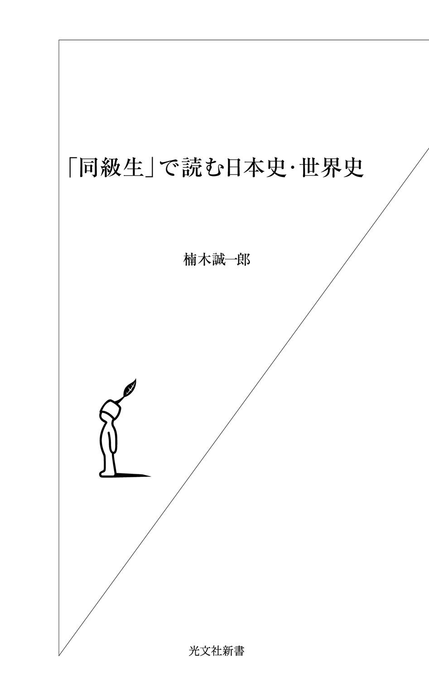

| 「同級生」で読む日本史・世界史 | |
| 楠木 誠一郎 | |
| (2007) | |

編集者 「日本史と世界史の同級生」という企画なんて、どうでしょう？
楠木 おもしろいですね。でも、たいへんですよ。
企画は、そんな会話ではじまりました。
日本では、四月二日生まれ～翌年四月一日生まれの人までが同級生ですが、外国では年度末が異なります。どうすればいいか。便宜上、その年に生まれた人を同級生としました。ただし、ひとつ大きな問題が発生してきます。
日本や中国、朝鮮半島では、過去に旧暦を用いていたため、西洋の人物といっしょに並べると生年月日の順番がぐちゃぐちゃになってしまう。そこで誕生日を正しく比較するため、生年月日も没年月日も西暦で統一することにしました。
まず人名事典で「肩書」「生年月日」「没年月日」データをコツコツと入力していき、見開き二ページで取り上げるにふさわしい年、つまり日本史上の有名人、世界史上の有名人が同級生でそろっている年を残していきました。日本史上には有名人がいるのに世界史上にはいない年、世界史上には有名人がいるのに日本史上にはいない年というのもありました。その結果、本書のはじまりは一三九四年とせざるをえませんでした。
一三九五年以降についても同様です。たとえば織田信長が生まれた一五三四年には世界史上の有名人が生まれていない、ロシアの作家ドストエフスキーが生まれた一八二一年には日本史上の有名人が生まれていない、などです。ですから本書は、同級生がおおぜい集まることができる年だけ取り上げて、紙上同窓会を催した、とお考えください。
人選にあたっては、名前を聞けば「ああ、あの人ね」と思える日本史・世界史上の有名人物、名前は知られていなくとも、業績が有名な人物を基準にしました。
まずは、どこでもいいですからページをめくってみてください。
同じ年に生まれた日本史・世界史上の有名人の、ゴシックで書かれた名前が目にとびこんでくるでしょう。「へえ、この人とこの人は同級生なんだ」と楽しんでください。それだけで、ちょっとした話のネタになります。
はじめから一気に読んでいただくにこしたことはありませんが、パラパラと拾い読みしていただいてもかまいません。寝る前に一年ずつ、トイレで一年ずつ、お風呂で一年ずつ、通勤電車のなかで一年ずつ、というように読んでいただいても楽しめると思います。巻末に載っている「人名索引」でお目当ての人物をひいて、だれが同級生なのか探してみるのもいいかもしれません。どんな使い方をされるかは、みなさんの自由です。
ページをめくっていただけましたか？
あなたが「へえ、この人とこの人は同級生なんだ」と思うのは、なぜでしょうか。それは、あなたのなかで描かれている日本史・世界史上の有名人のイメージ、歴史の教科書などで見た肖像画や肖像写真が大きく影響しています。彼ら、彼女たちは、それぞれ人生の華を迎える時期、後世の人の記憶に残る時期が、若いときだったり、老いてからだったりするから、同級生だと思いにくいのです。
たとえば、女優マリリン・モンローとＳＦ作家星新一が同級生、与謝野晶子と吉田茂が同級生、という具合にです。べつに日本史・世界史上の有名人でなくても、風格のある横綱が自分より若い、ずっと年上だと思っていたハリウッド俳優が自分より若いことを知って驚いた経験があると思います。逆に、同窓会に行って「とても同い歳に思えない」とか（笑）。
なお、本書で取り上げている日本史・世界史上の有名人は故人にかぎっています。ただし二〇〇七年九月はじめまでに他界した有名人物まで掲載するように心がけました。
世界史上の有名人の人名表記は、英語読み、現地読みなどに統一せず、一般に知られているものにしています。フルネームを掲載した人物、そうでない人物もいます。また現代の人物については作者の好みが出ている部分もあります。
女性の有名人の肩書に「女流」「女優」などを用いていますが「わかりやすさ」を優先したとご理解ください。また「小説家」は「作家」とし、必要に応じて「推理作家」「ＳＦ作家」「歴史作家」などの表記を用いています。
西暦は、一五八一年以前はユリウス暦、一五八二年以降はグレゴリオ暦を用いました。
巻末には、文中で太文字で記した人物の「五十音順人名索引」を付し、「→ページ数」ではなく、「→生年」とし、索引だけでも「使える」ようにしました。
本書を執筆するにあたっては、平凡社『世界大百科事典』『百科事典マイペディア』『現代人名情報事典』、朝日新聞社『朝日日本歴史人物事典』『［現代日本］朝日人物事典』、岩波書店『岩波西洋人名事典 増補版』、吉川弘文館『国史大辞典』『日本史総合年表』、山川出版社『世界史大年表』、日外アソシエーツ『日本暦西暦月日対照表』（野島寿三郎編）、同『20 世紀西洋人名事典』『20 世紀日本人名事典』『人物物故大年表 外国人編１・２』『人物物故大年表 日本人編１・２』など、また必要に応じてウェブデータを参考にしています。各著者・編者に厚くお礼申し上げます。
ひとりでも多くの方が、歴史を楽しんでくださいますように。
二〇〇七年晩夏
楠木誠一郎
目次
日本史 京都の相 国 寺 が失火により炎上する。
世界史 オスマン軍がコンスタンティノープルを包囲する。
室町幕府の足利将軍（征夷大将軍）のうち、巷 間 知られているのは初代尊 氏 、三代義 満 、十五代義 昭 ぐらいだろう。ほかの十二人のうち、少しでも知られていそうな将軍は六代足利義 教 （７月11 日～１４４１年７月12 日）かもしれない。ピンとこなくても「くじ引き将軍」と聞けば、「ああ」と思うのでは？ 四代義持が出家して息子義 量 が五代将軍になったものの在職二年で他界。義持にも義量にも男子がなかったため将軍空位になってしまった。そこで将軍を補佐する管 領 畠山満家らは醍醐寺三宝院の満 済 を通して義持に相談したところ「次期将軍の選出は任せる」という。満済のアイデアで、僧籍にある義持の弟たち（青 蓮 院 義 円 、相国寺永 隆 、大覚寺義 昭 、梶井義 承 ）のなかから次期将軍をくじで選出することになった。義持が他界した翌日の正長元（一四二八）年一月十九日にくじ引きが行われ、その結果、青蓮院義円が選ばれた。義円は還 俗 して名を義 宣 に改めて翌永 享 元（一四二九）年三月十五日に征夷大将軍に任ぜられた。だが「義宣＝世忍ぶ」で縁起が悪いというので義教と改名した。
京都の相国寺が炎上した、この応永元（一三九四）年、後小松天皇にひとりの男子が生まれた。一休宗 純 （誕生日不詳～１４８１年12 月12 日）だ。御 落 胤 ではないとする説もあるが、現在では定説になっている。「一休」の道号は、煩 悩 と悟りとのはざまに「ひとやすみ」するという意味。戒律の厳しい禅宗の世界にあって一休は公然と酒を飲み、女性遍歴をくりかえし、晩年には森 侍 者 と呼ばれる盲目の美女に耽 溺 した。頓 知 話のほとんどは、のちの創作。「死にとうない」が最 期 の言葉だった。
ヨーロッパの新航路推進と航海術向上の功労者として伝説化されている、「航海王子」の異名をとるポルトガルの王子エンリケ （３月４日～１４６０年11 月13 日）、フランスの王侯詩人で、フランス・ルネサンスを開花させたルイ十二世の父シャルル・ドルレアン （11 月24 日～１４６５年１月５日）もこの年の生まれ。『イングランド法の礼賛について』『イングランド王国の統治について』などの著作がある、ばら戦争期のイギリスの法律家フォーテスキュー （１３９４年？～１４７６年？）もこのころに生まれている。
活字鋳 造 ・活 版 印刷技術を発明したドイツのグーテンベルク （？～１４６８年２月３日）の生年は、１３９４（応永元）年～１４０２（応永九）年の幅で諸説ある。ちなみに印刷技術は、火薬・羅針盤と並んで、ヨーロッパのルネサンス期の三大発明。グーテンベルク本人は印刷所経営をはじめたが、事業そのものは破産させている。
日本史 織田信長が桶 狭 間 で今川義元を破る。
世界史 カトリーヌ・ド・メディシスがフランス王国の摂 政 となる。
トランシルバニアの名門貴族バートリ家の末 裔 に生まれ、「血の伯爵夫人」といわれたエリザベート・バートリ （８月７日？～１６１４年８月21 日？）は、居城内に領内の少女たちを呼び込んでは惨殺していた。その数は六百人以上ともいわれる。のどを食い破って血を飲んだとも、ほとばしる血のシャワーを浴びたとも、鋼鉄製の内側に大きな錐 が何本も突きだした等身大人形（「鉄の処女」）内に少女を閉じこめて、そこからあふれ出た血を浴槽に貯めて美容効果のために入浴していたという。同性愛の果ての所行との説も。
エリザベートの同級生だったのがポルトガルのイエズス会士カルヴァリョ （誕生日不詳～１６３１年）。一五九八（慶長三）年、一六一一（慶長十六）年の二度来日し、やがて大坂冬の陣を前に高山右近らとともに国外追放となった。
カルヴァリョが二度目の来日を果たす十一年前の関ヶ原の戦いで徳川家康に敗れて、京都三条河原で処刑されたのが戦国武将の石田三 成 （誕生日不詳～１６００年11 月６日）。関ヶ原の戦いの直前、越後の 直 江 兼 続 （誕生日不詳～１６２０年１月23 日）は補佐している上杉景勝を石田三成に味方させ、家康に会津攻めを企てさせたことで知られる。また、「愛」という字の前立てのついた、変わった兜 を愛用していた。
大坂冬の陣のとき、豊臣秀頼に味方し、夏の陣では家康に播 磨 一国をエサにされても拒絶し、真田幸村らとともに壮絶に討ち死にした後藤又兵衛 （基次。誕生日不詳～１６１５年６月２日）、江戸時代初期の旗本で、大久保忠 世 ・忠 隣 父子に従いつづけ、『三河物語』を書いた大久保彦左衛門 （忠教。誕生日不詳～１６３９年３月５日）も同級生。彦左衛門の気骨ある言動は、のちに講談化され、「天下のご意見番」として有名になる。時代劇でも頑固一徹な老人として、たびたび登場した。
一刀流剣術の祖伊藤一 刀 斎 （誕生日不詳～１６５３年？）も同級生と思われる。生没年はおろか、生国も諸説あるほど、経歴が不確か。一説に、四国から伊豆大島に流されてきた流 人 の子という。富 田 流の鐘 捲 自 斎 に剣術を学び、全国を修行して歩いているあいだに真剣勝負三十三回、倒した敵五十七人と伝えられている。弟子の神 子 上 典 膳 （小野忠明）と小野善 鬼 が決闘し、勝った典膳に一刀流を伝え、そのあと行方をくらました。神子上典膳以後を小野派一刀流というが、一刀斎自身は「一刀流」を名乗ることはしなかったという。
日本史 北 条 氏 康 ・氏 政 が里見義弘を下 総 国 府 台 で破る。
世界史 スペインのフィリピン征服がはじまる。
イギリスが世界に誇る劇作家シェイクスピア （４月26 日？～１６１６年４月23 日）といえば、『ロミオとジュリエット』『ヴェニスの商人』や、四大悲劇『ハムレット』『オセロ』『リア王』『マクベス』などで知られている。誕生日が命日と同じ四月二十三日という説があるが、洗礼日が四月二十六日とわかっているところからの創作。
イタリアの物理学者・天文学者ガリレオ・ガリレイ （２月15 日～１６４２年１月８日）も同じ年の生まれ。振子の等時性、物体の落下速度は重さに比例しない、慣性の法則、弾道は放物線を描く、などを証明。望遠鏡を製作して、木星の衛星、月の表面、太陽の黒点などを発見。そして地動説を主張して宗教裁判にかけられて天動説へ「転向」させられ、監視つきの生活を送らされた。だがガリレイが「近代科学の父」であることはまちがいない。
日本の戦国時代、ヨーロッパでは大航海時代の真っ只中。この年は、江戸時代初期に来日した三人の外国人も生まれている。
キリスト教布教のために来日し、長崎で月食を観測し、元 和 の大殉教に遭ったイタリアのイエズス会士スピノラ （誕生日不詳～１６２２年９月10 日）、臨時総督になっていたフィリピンから帰国する際に日本に漂着し、江戸で徳川秀忠、駿 府 で徳川家康に謁見、帰国してから『日本見聞録』を執筆したメキシコ生まれのスペイン人ビベロ （ドン・ロドリゴ。誕生日不詳～１６３６年）、日本に渡来したイギリス人第一号で徳川家康の外交顧問になったウィリアム・アダムズ （三浦按 針 。９月24 日～１６２０年５月16 日？）。
日本人では、徳川家康の従 弟 で、家康に仕 えつづけて戦国武将から大名になった酒井家次 （誕生日不詳～１６１８年４月10 日）、『信長記』『太閤記』を著した 小 瀬 甫 庵 （誕生日不詳～１６４０年？）が同級生。甫庵は、もともとは儒学者・医者で、豊臣秀次・堀尾吉晴・前田利常に仕えた。織田信長、ことに豊臣秀吉についての記録を残している点では、いま以上に評価されていい。
ほかに琉球王国の国王 尚 寧 （誕生日不詳～１６２０年）も同級生。慶長十四（一六〇九）年に薩摩の島津氏に侵略されて無条件降伏して鹿児島に連行され、さらに駿府で徳川家康、江戸で徳川秀忠に謁見したのち鹿児島で島津氏への忠誠を誓わされ、琉球にもどることができたのは二年半後のことだった。琉球の歴史においては悲劇の国王といえ、本人も傷心のまま数え五十七歳でこの世を去った。
日本史 湯 女 風呂が流行する。
世界史 イギリスとスペインが交戦。
ドラマ『水戸黄門』のなかで、全国を漫遊する徳川光 圀 に付き従っている「助さん」「格さん」にはモデルがいる。「助さん」こと「佐々木助三郎」のモデルは佐 々 十 竹 。本名は佐々宗 淳 。歴史家で、もとは京都妙心寺の僧侶だった。もうひとり「格さん」こと「渥美格 之 進 」のモデルは 安 積 澹 泊 （12 月28 日～１７３８年１月29 日）。祖父から水戸藩士で、朱 舜 水 に師事した儒学者。ふたりとも『大日本史』の編 纂 委員で、史書を探して全国を旅した。この事実が光圀の漫遊記を生むことになった。光圀自身は、ほとんど旅をしていない。水戸藩は参勤交代の義務がなく、幕府の許可を得たうえでのたまの江戸と水戸往復以外の旅らしきものといえば、将軍に随行しての日光東照宮参詣と、祖母英勝院の菩提寺のある鎌倉に行くぐらいだった。ちなみにドラマでは、「助さん」「格さん」の年齢差はないように見えるが、実際は佐々十竹のほうが十六歳年上だった。
「格さん」と同級生なのが、「ハリー（ハレー）彗星」の発見者で、イギリスの天文学者ハリー （10 月29 日～１７４２年１月14 日）。友人ニュートンが『プリンキピア』を執筆したさいに、万有引力の法則の優先権をめぐってフックと争ったニュートンの味方をして出版にこぎつけさせた陰の功労者でもある。オックスフォード大学教授、王立天文台長を歴任したハリーは、ニュートンの『プリンキピア』をもとに軌道計算をおこない、楕円軌道を導き出し、過去の彗星出現記録（一三〇五年・一三八〇年・一四五六年・一五三一年・一六〇七年・一六八二年）から、一七五八（宝暦八）年にも同じ彗星が出現すると予言したが、実際にまのあたりにする十六年前に他界した。
ほかに、フランスのルイ十四世の命令で中国に派遣され、清 朝四代康 熙 帝に拝謁、モンゴル・長城一帯の測量をおこなって『皇 輿 全覧図』を刊行、のちに『康熙帝伝』を書いたイエズス会宣教師のひとりブーヴェ （７月18 日～１７３０年６月28 日）、オーストリアのバロック建築家フィッシャー・フォン・エルラハ （７月20 日～１７２３年４月５日）、江戸時代初期の検 校 で、目の不自由な音楽家、のちに生 田 流箏 曲の開祖となった生田検校 （誕生日不詳～１７１５年７月14 日）、そして歌舞伎役者片岡仁 左 衛 門 （初代。誕生日不詳～１７１５年11 月26 日？）も同級生。初代はもともとは藤川伊三郎という三味線弾きで、大西森右衛門から片岡仁左衛門を称した。風采にすぐれ、眼光鋭く、「敵役の随一」といわれた。ちなみに「片岡仁左衛門」は現在十五代目。十三代目の三男だった片岡孝夫が襲名した。
日本史 勘定奉行荻原重秀が罷 免 される。
世界史 ロシアがバルト海沿岸を占領する。
フランス革命のとき、宮廷に押しかける民衆を見下ろしながら、マリー・アントワネットが「パンがなければお菓子を食べればいいのに」と言ったという伝説は、同じフランスの思想家・文学者ルソー （６月28 日～１７７８年７月２日）の書いた『告白録』が出典とされている。ワインを飲もうとしたルソーがパンを探したが見あたらない。そのときルソーは、ある貴族の夫人が「農民にはパンがありません」といわれて「それならブリオッシュを食べればいいのに」と答えた話を思い出すというもの。
ルソーはジュネーヴの生まれだが、フランスやイタリアを放浪したのち、パリで百科全書派の学者たちとつきあい、『百科全書』に寄稿。懸賞論文『学問芸術論』で認められ、『人間不平等起源論』『社会契約論』『新エロイーズ』『エミール』などを残し、フランス革命にも精神的影響を及ぼした。『孤独な散歩者の夢想』は死後に刊行された。
マリア・テレジアのオーストリア継承権に異議を唱えてシュレジエンを不法占領して、オーストリア継承戦争を起こしたプロイセン国王フリードリヒ二世 （フリードリヒ大王。１月24 日～１７８６年８月17 日）、イギリスの経済学者で『経済学原理』を書き、「最後の重商主義者」と呼ばれたスチュアート （10 月21 日～１７８０年11 月20 日）も同級生。スチュアートは、アダム・スミスの『国富論』登場後は忘れられがちとなる。
日本人では、徳川吉宗の長男で、江戸幕府九代将軍になった徳川家重 （１月28 日～１７６１年７月13 日）も同級生。家重は生来虚弱で、若くから大奥で乱れた生活を送るうち健康を害して言語不明瞭となり、側 用 人 の大岡忠光だけが言葉を聞き分けることができたという。側用人の権力が増大したことは言うまでもない。
この家重の治世中、宝 暦 事件が起きた。国学者・神 道 家の 竹 内 式 部 （誕生日不詳～１７６８年１月24 日）が公 卿 たちに『日本書紀』をテキストに尊 王 論を講義したことが原因で重追放になった事件だ。竹内は、さらに禁を犯して京都に立ち入ったとの理由で八丈島へ流される途中に病死した。絵師・俳諧師の 鳥 山 石 燕 （誕生日不詳～１７８８年９月２日）も同級生。石燕は、喜多川歌麿の師で、養父的存在でもあった。戯 作 者の恋 川 春 町 も弟子。『画 図 百 鬼 夜 行 』『今 昔 画図続百鬼』『今昔百鬼拾 遺 』『画図百器徒 然 袋 』（すべて三部作）は妖怪画として有名。タイトルからもわかるように、水木しげる、京極夏彦なども石燕の作品をモチーフに作品を発表している。
日本史 徳川吉宗、足 高 の制を定める。
世界史 中国清がキリスト教を禁止し、宣教師をマカオに帰す。
イギリスの道徳哲学者・経済学者アダム・スミス （６月５日～１７９０年７月17 日）の主著は、もちろん『国富論』。古典派経済学の代表的存在で、『国富論』はアメリカ独立宣言と同じ年に出版された。『国富論』は明治十五（一八八二）年から明治二十一年にかけて、福沢諭吉の弟子石川暎作らによって翻訳・刊行された。第四篇序文は田口卯 吉 が書いており、日本における自由主義経済論の支柱となった。外務省法律顧問として来日したヘルマン・レースラーは「スミスは資本家を寄生者とし、労働者のみを生産的だとすることによって社会主義の先駆となった」と指摘。のちにマルクス経済学が弾圧を受けると、アダム・スミスの経済学は隠れ蓑となった。ちなみに、イギリスではスミスという姓が非常に多いので、「アダム・スミス」とフルネームで呼ばれる。
アダム・スミスが生まれた年は、日本では、江戸幕府八代将軍徳川吉宗の享保の改革が行われていた。この年に生まれたのが蘭方医の前野良 沢 （誕生日不詳～１８０３年11 月30 日）。幼くして孤児となった良沢は、伯父で淀藩医の宮田全沢に養育され、吉 益 東 洞 流の古医方を修めたのち、豊 前 中津藩医前野家の養 嗣 子 となって江戸に移り住み、青木昆陽にオランダ語を学んだ。杉田玄白に誘われて江戸千 住 の骨 ヵ 原 （小塚原刑場）で罪人の腑 分 けを見学した帰りに解剖書『ターヘル・アナトミア』の翻訳が決まり、翌日から良沢の家で翻訳作業がはじまった。月に六、七回集まり、良沢が翻訳顧問となって作業を進め、三年後の安永三（一七七四）年八月に『解体新書』と題して刊行された。
『人物山水図』『十便図』『楼閣山水図』などを残した文人画家・書家 池 大 雅 （６月６日～１７７６年５月30 日）、賀茂真淵の弟子で歌人・国学者の 楫 取 魚 彦 （４月６日～１７８２年５月５日）、哲学者三浦梅 園 （９月１日～１７８９年４月９日）も同級生。梅園はそもそも医者だったが、幼いころより天地万物あらゆることに疑いを抱いてノイローゼになったのち、西洋天文学書から天地の形体を知って「天地は気なり」と気づき、天地万物に「条理」があることを悟った。主著の、条理探究書『玄語』、中国古典・医書・西洋学の書などを引用し批判した『贅 語 』、人倫哲学書『敢 語 』は「梅園三語」と呼ばれる。ほかに経済書『価 原 』、漢詩概論書『詩 轍 』など。
イギリスの肖像画家レーノルズ （７月16 日～１７９２年２月23 日）、フランスの哲学者ドルバック （オルバック。誕生日不詳～１７８９年１月21 日）も同い歳。
日本史 木曾川治水工事終了。責任者の薩摩藩家老平田靭 負 が自刃（宝暦治水事件）。
世界史 北米でフランス・インディアン連合軍がイギリス軍を破る。
フランス国王ルイ十六世の妃マリー・アントワネット （11 月２日～１７９３年10 月16 日）はオーストリアの女帝マリア・テレジアの娘だ。フランス宮廷生活の派手さと、それにつきまとうスキャンダルはつとに有名だが、彼女が不幸だったのは、夫ルイ十六世が結婚後数年、手術するまで性的不能だったことだろう。性生活が満足にいっていれば歴史はもう少し変わっていたかもしれない。またフランス革命のとき、宮廷に押し寄せる民衆を見下ろしながら「パンがなければお菓子を食べればいいのに」と言ったとされるが、彼女の言葉ではない。なお当時フランスで香水が流行ったのは、フランスでは入浴の習慣がなく、体臭を消すのが目的だった。アントワネットはオーストリア時代から入浴をつづけていた。彼女が好んだのは、ほかの貴族が愛用した動物系香料を混ぜたものではなく、花やハーブなどの植物系香料から作られる軽やかな香りのものだった。ちなみに夫ルイ十六世の弟ルイ十八世 （11 月17 日～１８２４年９月16 日）とは誕生年月が同じだった。
フランスの法律家・政治家、というよりも美食家として有名なブリア＝サヴァラン （４月１日～１８２６年２月２日）も同級生。本来の姓は「ブリア」だったが、サヴァランという女性が全財産を相続させる条件として、みずからの名前を受け継ぐことを要求したため「ブリア・サヴァラン」を名乗ったとされる。代表作『美 味 礼 讃 』は死の二ヵ月前に刊行された。フランスの焼き菓子サヴァランの語源にもなっている。
原因不明の疾患パーキンソン病をはじめて記録したイギリスの医師パーキンソン （４月11 日～１８２４年12 月21 日）も、この年に生まれている。
日本人の同級生には、『東海道四谷怪談』で有名な歌舞伎作者の鶴屋南北 （四代。誕生日不詳～１８２９年12 月22 日）がいる。「鶴屋南北」は五人いて、初代から三代目は歌舞伎役者、四代目と五代目は歌舞伎作者。『東海道四谷怪談』は初演のときには「あづまかいどうよつやかいだん」と読まれていた。経 世 家 の 海 保 青 陵 （誕生日不詳～１８１７年７月13 日）は丹後国宮津藩家老角田市左衛門の子。「海保」は祖父（曾祖父とも）の姓。「君は臣を買い、臣は君へ売りて、売り買いなり」――君臣関係は取引関係のうえに成立し、武士は商品経済を離れては生活できないと藩単位の重商主義を説いた。蝦 夷 地・樺 太 ・国 後 島・択 捉 島・得 撫 島などを調査した北方探検家の 最 上 徳 内 （誕生日不詳～１８３６年10 月14 日）も同級生。シーボルトが著書『日本』で徳内の業績をたたえた。
日本史 幕府が竹 内 式 部 を捕らえる（宝暦事件）。
世界史 ロシア軍がプロシアに侵入する。
アメリカ合衆国五代大統領モンロー （４月28 日～１８３１年７月４日）が近現代の大統領というイメージがあるのは、マリリン・モンローと苗字が同じだからかもしれない。じつはアメリカ建国期の大統領で、「ヴァージニア王朝」最後の大統領。アメリカ外交の基本原則となった「モンロー主義」（欧米両大陸の相互不干渉）にその名を残している。スペインからフロリダを買収したのもモンローが大統領の時代のこと。そのアメリカの辞典編集者・教科書著作者・ジャーナリスト・法律家のウェブスター （10 月16 日～１８４３年５月28 日）は『ウェブスター辞典』にその名を残している。
ルソーの大きな影響を受け、フランス革命を指導した政治家ロベスピエール （５月６日～１７９４年７月28 日）は、反革命派などを即決裁判で断頭台に送る恐怖政治をはじめたが、クーデターによって自らも断頭台で処刑された。そのフランスの有名な美食家グリモー・ド・ラ・レニエール （誕生日不詳～１８３７年）も同級生。
フランス・スペイン連合艦隊を撃破してナポレオンのイギリス本土侵攻を挫折させたトラファルガーの海戦で有名なイギリスの提督ネルソン （９月29 日～１８０５年10 月21 日）も同級生。ロンドンのトラファルガー広場にはネルソンの像が立っている。
脳の解剖学、神経の生理学を専攻し、解剖学者シュプルツハイムとの共著『神経系、とくに脳の解剖学と生理学』を書いたドイツの医師ガル （３月９日～１８２８年８月22 日）、ハワイ王国カメハメハ王朝の始祖カメハメハ大王 （誕生日不詳～１８１９年）も同級生。
御 三 卿 のひとつ清水家が興 ったこの年、越後国の出雲崎の名主・神官をつとめる旧家に、のちに禅僧・歌人・書家となる良寛 （誕生日不詳～１８３１年２月18 日）が生まれた。農民と親しく接触したり、子どもたちと交流していたことから、親しみを込めて「良寛さん」と呼ばれることが多い。本名は山本栄蔵、のち文孝。七十歳のときに二十九歳の貞 信 尼 と出会った。貞信尼は弟子としても、ひとりの女性としても良寛に尽くし、最期を看 取 った。
江戸幕末の蘭学者たちがのどの奥から手が出るほど垂 涎 の書だった日本最初の蘭和辞典『ハルマ和 解 』（江戸ハルマ）を編纂した儒学者稲村三 伯 （誕生日不詳～１８１１年２月９日）、五代横綱で、八場所土つかずの谷風梶之助を破った小野川喜三郎 （誕生日不詳～１８０６年４月30 日）も同級生。百七十六センチ、百十六キロ。幕内成績は百四十四勝十三敗と、勝率は九割を超えていた。一代年寄として江戸で没した。
日本史 側 用 人 田沼意 次 が老中格になる。
世界史 コルシカ島がフランスに併合される。
世界史上の有名人でも三本の指に入るフランスの英雄ナポレオン一世 （ボナパルト。８月15 日～１８２１年５月５日）は、エジプト遠征で英雄となり、第一執政、さらに皇帝になって「ナポレオン法典」などを制定。イギリスなどをのぞくヨーロッパ全土を制覇するがロシア遠征に失敗してエルバ島に流された。翌年、島を脱出して皇帝に復位するがワーテルローの戦いに敗れ、セント・ヘレナ島に流されて没した。アルプス越えの肖像画で、ナポレオンは美しい馬に乗っているが、実際に乗っていたのは山越えに強いロバだった。
ナポレオンが征服できなかったイギリス、その北アイルランドに生まれた政治家カースルレー （ロバート・スチュアート。６月18 日～１８２２年８月12 日）は、陸軍・植民相 としてナポレオン戦争遂行の任に当たり、外相カニングと対立して閣外に去ったのち外相に復帰。ナポレオン戦争後のウィーン会議にイギリス代表として出席した。最期は、精神錯乱し、のどを切って自殺した。同じくイギリスの軍人・政治家で、ワーテルローの戦いでナポレオン一世を破ったウェリントン （５月１日～１８５２年９月14 日）も同級生。
フランス革命のときアメリカに亡命し、のちイギリスでトンネル用シールド工法の特許をとった技術者ブルネル （誕生日不詳～１８４９年）、「地理学・生態学の父」と呼ばれ、火山学・地震学・気候学・海洋学などの発展にも貢献したドイツの自然学者フンボルト （９月14 日～１８５９年５月６日）、ナポレオンのエジプト占領時にオスマン帝国によってアルバニア人傭兵隊将校としてエジプトに派遣されたのち頭角をあらわし、エジプト最後の王朝ムハンマド・アリー朝を興したムハンマド・アリー （誕生日不詳～１８４９年８月２日）も同級生。
日本人では、山 東 京伝の弟子で戯作者の山東京 山 （７月18 日～１８５８年10 月30 日）、浮世絵師歌川豊 国 （初代。誕生日不詳～１８２５年２月24 日）、国 後 島に上陸したロシア船艦長ゴローニンを監禁した報復で捕らえられた商人高田屋嘉 兵 衛 （誕生日不詳～１８２７年４月30 日）も同級生。淡路島生まれの嘉兵衛は、兵庫を拠点に日本海・松前方面を中心に廻船業を営み、のち択 捉 島への航路を開拓した人物。農政学者・経世家の佐藤信 淵 （誕生日不詳～１８５０年２月17 日）は、父親が農政学者で、蘭学、本草学、儒学、天文地理学、神道を学んだうえで『経済要略』『経済要録』『農政本論』『混同秘策』などを発表。さらに国学を平田篤 胤 に学び、「うぶすなの神意」のうえに農本主義的な生産力説を展開。国富の増進、富国強兵の「垂統国家」構想にいきついた。
日本史 湯島聖堂の管理が林 家 から幕府に移る（昌平坂学問所ができる）。
世界史 フランスで反政府革命運動を起こしたバブーフが処刑される。
「フランケンシュタイン」は人造人間の名前ではない。イギリスの女性作家メアリ・シェリー （８月30 日～１８５１年２月１日）の処女作『フランケンシュタイン、あるいは現代のプロメテウス』に登場する「怪物」を創造した天才科学者の名前がフランケンシュタインなのだ。人の遺体を集めて改造され、電気ショックを与えて創造された怪物は、自分が醜い人造人間であることに苦しみ、「女」を創造してくれとフランケンシュタインに頼み、裏切られ、復讐を誓う物語。ちなみにメアリの夫は詩人Ｐ・Ｂ・シェリー。
シェリーの同級生のひとりに、十七歳で『交響曲第一番』、十八歳で『野ばら』『魔王』などを手がけたオーストリアの作曲家シューベルト （１月31 日～１８２８年11 月19 日）がいる。代表作は『未完成交響曲』『美しき水車小屋の娘』『冬の旅』『白鳥の歌』など多数。チフスのため三十一歳で夭折した。
ドイツ帝国最初の皇帝で、ビスマルク、モルトケらを起用したヴィルヘルム一世 （３月22 日～１８８８年３月９日）、そのドイツの詩人ハイネ （12 月13 日～１８５６年２月17 日）も同級生だ。両親がユダヤ系で、フランス革命の思想の影響を受け、人類解放を生涯のテーマとした。ユダヤ教からプロテスタントに改宗した。マルクスらとも交友があった。晩年は脊椎病で寝たきりのまま創作した。代表作は詩集『歌の本』などだが、ヒトラーの時代には、ハイネの本も焼かれた。
ハワイ王国二代目の王カメハメハ二世 （誕生日不詳～１８２４年７月14 日）も同級生。
『フランケンシュタイン、あるいは現代のプロメテウス』を書いたシェリーが生まれたころ、ナポレオン一世の全盛期といえば違和感がないかもしれないが、浮世絵師歌川広重 （初代。安藤。誕生日不詳～１８５８年10 月12 日）と同級生といえば、どうだろう。もっとも広重の浮世絵がゴッホらヨーロッパの画家に影響を与えたわけだが。代表作は『東海道五十三次』をはじめ、『東都名所』シリーズ、『近江八景』『江戸近郊八景』『木曾街道六十九次』『名所江戸百景』など風景画が多い。門人が二代、三代を襲名したが知られていない。
もうひとり、農村指導者・経世家の大原幽学 （誕生日不詳～１８５８年４月20 日）も同級生。出自は不明だが武士だったらしい。勘 当 されて諸国をめぐったのち、下 総 国 香取郡長 部 村に定住。「先 祖 株 組 合 」という農業協同組合的なものを組織した。だが農民たちの動きを怪しんだ幕府によって弾圧され、「押込百日」を言い渡された翌年に切腹した。
織田信長 （1534年～1582年６月21日）の同級生には、武将の細川幽斎 （藤孝。1534年６月３日～1610年10月６日）くらいしかいないが、一年先輩には、『随想録』を書いたフランスの思想家モンテーニュ （1533年２月28日～1592年９月13日）、イングランド女王のエリザベス一世 （1533年９月７日～1603年３月24日）、武将の小早川隆景 （1533年～1597年７月26日）、島津義久 （1533年～1611年３月５日）が、一年後輩には、武将の 丹 羽 長 秀 （1535年～1585年５月15日）と島津義弘 （1535年８月21日～1619年８月30日）がいる。
丹羽長秀と島津義弘は豊臣秀吉 （1536年２月～1598年９月18日）の一年先輩でもある。秀吉の同級生には公卿の近衛前 久 （1536年～1612年６月７日）、天台宗の僧である天海 （1536年？～1643年11月13日）が、一年後輩には室町幕府十五代将軍足利義昭 （1537年12月５日～1597年10月９日）がいる。
徳川家康 （1543年１月31日～1616年６月１日）の同級生には、浄土真宗の僧である 顕 如 （1543年２月９日～1592年12月27日）、画家の 狩 野 永徳 （1543年２月16日～1590年10月12日）、家康の二人目の正室朝日姫 （1543年～1590年）が、一年先輩にはスコットランド女王メアリ・スチュアート （1542年12月７日〈８日説も〉～1587年２月８日）、家康の一人目の正室 築 山 殿 （1542年？～1579年９月29日）、豪商茶屋四郎次郎 （1542年～1596年９月19日）、武将服部半蔵 （正成。1542年～1596年12月23日）が、一年後輩には武将の竹中半兵衛 （重治。1544年～1579年７月６日）、茶人・武将の古田織 部 （1544年～1615年７月６日）、茶人 山 上 宗 二 （1544年～1590年５月14日〈４月１日説も〉）がいる。
日本史 ロシア使節レザノフが長崎に来航し通商を求めてくる。
世界史 ナポレオンが皇帝になる（第一帝政）。
オーストリアの音楽家「ヨハン・シュトラウス 」はふたりいる。父 （３月14 日～１８４９年９月25 日）は「ワルツの父」、息子は「ワルツの王」。『アンネン・ポルカ』『ラデツキー行進曲』は父、『美しく青きドナウ』『芸術家の生涯』『ウィーンの森の物語』『春の声』『皇帝円舞曲』『もろ人よ、手をとり合え』は息子のほう。
「ロシア国民音楽の父」と呼ばれ、オペラ『イワン・スサーニン（皇帝に捧げた命）』、管弦楽曲『カマリンスカヤ』などを作曲したグリンカ （６月１日～１８５７年２月15 日）、ダーウィンの『種の起源』を批判し、始祖鳥やニュージーランドの大鳥モアの研究などで有名なイギリスの比較解剖学・古生物学者リチャード・オーエン （７月20 日～１８９２年12 月18 日）、イギリス首相としてスエズ運河の領有、ヴィクトリア女王をインド皇帝に推 戴 してインド帝国をつくるなどの功績を残した政治家ディズレーリ （12 月21 日～１８８１年４月19 日）も同級生。ディズレーリは『文学の愉しみ』『ヴィヴィアン・グレー』『若き公爵』などの著書のある作家でもあった。
アメリカ人では、十四代大統領ピアース （11 月23 日～１８６９年10 月８日）、『緋文字』『ワンダ・ブック』を書いた作家ホーソーン （７月４日～１８６４年５月18 日？）、初代駐日総領事・公使を歴任、日米修好通商条約を締結し、唐人お吉を愛人にしたハリス （10 月３日～１８７８年２月25 日）、お雇い外国人として北海道開拓事業にたずさわった農政家ケプロン （３月31 日～１８８５年２月22 日）が同級生。
ほかにフランスの女性作家ジョルジュ・サンド （７月１日～１８７６年６月８日）、ドイツの哲学者フォイエルバハ （７月28 日～１８７２年９月13 日）、電流間の相互作用の法則「ウェーバーの法則」で有名なドイツの物理学者ウェーバー （10 月24 日～１８９１年６月23 日）。
日本人では、越前鯖江藩主で老中時代に日米修好通商条約調印にあたった 間 部 詮 勝 （３月30 日～１８８４年11 月28 日）、佐倉順天堂を創始した外科医佐藤泰 然 （誕生日不詳～１８７２年５月16 日）、天狗党の乱を起こした水戸藩の重臣武田耕雲斎 （誕生日不詳～１８６５年３月１日）、蛮 社 の獄で渡辺崋 山 とともに逮捕され、永 牢 になったものの放火・脱獄し、宇和島藩などを転々としたあと江戸にもどったところを捕縛され、自殺した蘭学者高野長 英 （６月12 日～１８５０年12 月３日）、『江戸名所図絵』『武 江 年表』などを書いた斎藤月 岑 （誕生日不詳～１８７８年３月６日）がいる。
日本史 『徳川実紀』の編纂はじまる。
世界史 オーストリアのメッテルニヒが外相に就任する。
幕末の公卿といえば、薩摩藩の西郷隆盛・大久保利通と組んで討幕のために暗躍した岩倉具 視 が有名だが、同じく公武合体派で、徳川家 茂 に降嫁した和 宮 にしたがって江戸に下った中山忠 能 （12 月17 日～１８８８年６月12 日）を忘れてはならない。息子中山忠光は過激な尊王攘 夷 派で天 誅 組 の乱に加わり、娘慶 子 は孝明天皇に仕え、のちの明治天皇を産んだ。王政復古とともに議 定 に就任している。
開国論を唱えた思想家横井小 楠 （９月22 日～１８６９年２月15 日）は熊本藩士だったが、越前藩主松平慶 永 （春 嶽 ）の招きで藩政改革を指導。その慶永が政事総裁職に就任すると補佐役となった。明治新政府には参与として迎えられたが、路上で暗殺された。同じ開国思想の持ち主で薩摩藩主だった島津斉 彬 （11 月５日～１８５８年８月24 日）は、洋学好きで、反射炉を建設したり、洋式軍需工業を興したことで有名。
その薩摩と戦争をしたイギリス海軍の旗艦ユーリアラス号の提督クーパー （８月16 日～１８８５年10 月29 日）、イギリスの初代駐日公使で『大君の都』を著したオールコック （５月～１８９７年11 月２日）、オールコックとは反対に江戸幕府寄りだったフランス公使ロッシュ （９月27 日～１９０１年６月26 日）も同じ学年。
海の向こうのヨーロッパでは、ナポレオン戦争のまっただ中。イギリスでは、議会政治の黄金時代を代表する政治家グラッドストン （12 月29 日～１８９８年５月19 日）、『種の起源』を書いた「進化論」で有名な博物学者ダーウィン （２月12 日～１８８２年４月19 日）、ヴィクトリア朝の代表的詩人テニソン （８月６日～１８９２年10 月６日）が生まれ、「アナーキズム」の名付け親で、『貧困の哲学』を著し、マルクスに『哲学の貧困』で批判されたフランスの社会主義思想家プルードン （１月15 日～１８６５年１月16 日）、ドイツの作曲家メンデルスゾーン （２月３日～１８４７年11 月４日）、『検察官』などを書いたロシアの作家ゴーゴリ （４月１日～１８５２年３月４日）も産 声 をあげている。
「人民の、人民による、人民のための政治」で知られるアメリカ合衆国十六代大統領リンカーン （２月12 日～１８６５年４月15 日）、小麦の刈取機を発明し、インターナショナル・ハーベスター社の基礎を築いたマコーミック （２月15 日～１８８４年５月13 日）、『モルグ街の殺人』などで知られ、「江戸川乱歩」のペンネームの由来にもなったアメリカの詩人・作家エドガー・アラン・ポー （１月19 日～１８４９年10 月７日）など多士済々。
日本史 幕府が白河・会津両藩に対し、相模・安 房 沿岸に砲台築造を命ずる。
世界史 中国清 が北京へのアヘン流入を禁ずる。
この年、ヨーロッパでふたりの偉大な作曲家が生まれた。
ひとりは、ポーランドに生まれた、ピアニストでもあるショパン （２月22 日～１８４９年10 月17 日）。女流作家ジョルジュ・サンドとマリョルカ島に旅行したときに作ったのが『二十四の前奏曲』。代表作はほかに『十二の練習曲』『バラード第四番』『幻想ポロネーズ』など。もうひとりはドイツの作曲家シューマン （６月８日～１８５６年７月29 日）。ショパンは幼いころからピアノを弾いていたが、シューマンは法律を勉強していて、音楽で身を立てる決心をしたのは二十歳を過ぎてから。ショパンは名を成してからジョルジュ・サンドと結ばれたが、シューマンはピアノの教師の娘クララと恋に落ちる。代表作は『謝肉祭』『子どもの情景』など。ハイネの『詩人の恋』などロマン派詩人の作品に音楽をつけたりもした。子どものための音楽に心を注いだことでも知られる。
フランス人では、ショパンと同じくジョルジュ・サンドを愛した作家ミュッセ （12 月11 日～１８５７年５月２日）、舞踏家・振付師のペロー （８月10 日～１８９２年８月24 日）、カバラ研究の権威でもある神秘思想家で、ランボーやボードレールにも影響を与えたレヴィ （２月８日～１８７５年５月31 日）が同級生。
ほかに、来日して植村正久・本多庸 一 ら日本基 督 教会の指導者となる人々を育てたアメリカの改革派教会宣教師ブラウン （６月16 日～１８８０年７月20 日）、アメリカの興行師バーナム （７月５日～１８９１年４月７日）、幕末日本の戦争でも使用されたアームストロング砲を発明したイギリスの企業家アームストロング （11 月26 日～１９００年12 月27 日）がいる。
日本人では、佐倉藩主で老中だった堀田正 睦 （８月30 日～１８６４年４月26 日）、適 々 斎 塾 （のち大阪大学医学部）を開いて、大村益 次 郎 ・福沢諭吉・佐野常 民 ・橋本左 内 ・大鳥圭介・長 与 専 斎 ・高松凌 雲 ・池田謙 斎 ら弟子を育てた蘭学者緒方洪 庵 （８月13 日～１８６３年７月25 日）、公卿岩倉具視の懐 刀 で大政奉還・討幕の密 勅 ・王政復古などを画策した国学者・公卿の 玉 松 操 （４月20 日～１８７２年３月23 日）、吉田松陰の叔父で、松 下 村 塾 を創立した玉木文 之 進 （10 月22 日～１８７６年11 月６日）、実録物・歌舞伎・新国劇・映画などでもおなじみの博 徒 国 定 忠 次 （誕生日不詳～１８５１年１月22 日）も同級生。忠次は、長い草 鞋 生活のあと故郷である上 野 国国定村にもどったところで脳溢血で倒れて捕らえられ、上野国大戸村で関所破りなどの罪で磔 に処せられた。
日本史 松前奉行がロシア船艦長ゴローニンを捕らえる。
世界史 イギリスが一時ジャワを占領。
江川太郎左衛門に西洋砲術を学び、蘭語（オランダ語）も習得して塾を開き、勝海舟・坂本龍馬・吉田松陰・加藤弘之らを弟子にもっていた佐久間象 山 （３月22 日～１８６４年８月12 日）は、「東洋道徳・西洋芸術（技術）」、つまり「和魂洋才」を唱える思想家だった。だが禁門の変の前、孝明天皇を彦根に移すよう画策していたため、尊王攘夷派によって暗殺された。
象山が目を向けていた欧米の同級生も多い。
アメリカ人では、『アンクル・トムの小屋』を書いた作家ストー夫人 （６月14 日～１８９６年７月１日）、シンガー社を創業して、ミシンを世界じゅうに広めた機械発明家シンガー （10 月27 日～１８７５年７月23 日）がいる。
イギリス人では、産科医として世界ではじめてエーテル麻酔を用い、のちにクロロホルム麻酔を成功させたシンプソン （６月７日～１８７０年５月６日）、雑誌『パンチ』に寄稿したほか、『虚栄の市』『ペンデニス』『ヘンリー・エズモンド』『ニューカム家の人々』などを書いたヴィクトリア時代を代表する作家サッカレー （７月18 日～１８６３年12 月24 日）、グラッドストン内閣の商相をつとめ、コブデンとともにマンチェスター派の自由主義を代表した政治家ブライト （11 月16 日～１８８９年３月27 日）がいる。
フランス人では、ロマン主義のユゴーに傾倒して、詩集『アルベルチュス』『七 宝 と螺 鈿 』、小説『モーパン嬢』『カピテーヌ・フラカス』、回想録『ロマン主義の歴史』を発表したゴーティエ （８月30 日～１８７２年10 月23 日）、労働の組織化などに取り組んだ社会思想家・社会活動家ブラン （10 月29 日～１８８２年12 月６日）、天文学者ルベリエ （３月11 日～１８７７年９月23 日）がいる。ルベリエは、天王星の運動の乱れから未知の惑星の存在を予言し、そのことをベルリン天文台のガレに通知したことで海王星の発見をもたらすことになった。
ほかに『ハンガリー狂詩曲』などで知られるハンガリーの作曲家・ピアニストのリスト （10 月22 日～１８８６年７月31 日）、中国清の官僚・政治家の 曾 国 藩 （誕生日不詳～１８７２年）がいる。曾国藩は、太平天国に対抗すべく団 練 （郷土自衛団）組織を命じられたのち、湘 軍（義勇軍）に改組。両江総督兼江南軍務欽 差 大臣の重職に就任し、太平軍への勝利から一等毅勇侯の爵位を授けられた。また兵器工場を設立するなど洋務運動の先駆者でもあったが、小心ゆえに保身のために身を引き、軍権・洋務とも輩下の李 鴻 章 が継承した。
日本史 杉田玄白の『蘭学事 始 』が完成する。
世界史 ナポレオンの百日天下。
失脚してエルバ島に流されていたナポレオン一世が、ルイ十八世にたいするフランス国民の不満を知って同島を脱出、フランスに上陸して自由帝政をはじめ、俗にいう「百日天下」をとっていたころ、ドイツにビスマルク （４月１日～１８９８年７月30 日）が生まれた。ビスマルクはプロイセン出身で、プロイセン王ヴィルヘルム一世をドイツ皇帝にかつぎあげてドイツ帝国初代首相となった。「鉄血」の異名をとったことで有名。老齢年金・健康保険・労災保険など社会保障制度を整えたことでも知られている。
「カナダ建国の父祖」のひとりで、初代・三代首相をつとめたマクドナルド （１月11 日～１８９１年６月６日）も、この年の生まれ。
アメリカの宣教師で医師のヘボン （３月13 日～１９１１年９月21 日）は歴史の教科書にも登場するから日本でも有名だ。『和英語林集成』の編纂に協力していた岸田吟 香 に目薬「精 錡 水 」の製造を伝授したのは専門が眼科だったから。この『和英語林集成』に用いられたローマ字が「ヘボン式」。『旧約聖書』『新約聖書』も翻訳した。ちなみに日本では「ヘボン」で知られるが、英語読みでは「ヘップバーン」。
この年は、日本でも多くの政治家・学者が生まれている。
日米修好通商条約の勅 許 問題に反対した水戸藩主徳川斉 昭 らを処罰して安政の大獄を引き起こし、それがもとで桜田門外の変で暗殺された、彦根藩主で大老の 井 伊 直 弼 （11 月29 日～１８６０年３月24 日）、その直弼の懐刀だったが失脚して斬刑に処せられた国学者の長野主 膳 （義 言 。誕生日不詳～１８６２年９月20 日）、安政の大獄で逮捕第一号となった儒学者で若狭国小 浜 藩士の梅田雲 浜 （７月13 日～１８５９年10 月９日）、農商分離を徹底させた藩政改革を行い、反射炉を築き、警衛を担当していた長崎に砲台を増築した佐賀藩主鍋島直 正 （閑 叟 。１月16 日～１８７１年３月８日）、長州藩家老で、禁門の変のさいには一軍を率 いて入京し、帰藩してから幕府への謝罪のために切腹した福原越後 （９月30 日～１８６４年12 月10 日）も同級生。
ほかに、名人の左官で鏝 絵 で知られる 伊 豆 長 八 （入江長八。９月７日～１８８９年10 月８日）、漢方医浅田宗 伯 （６月29 日～１８９４年３月16 日）が同級生。浅田宗伯と聞いても知らない人がほとんどだと思うが、「浅田飴」の原型を考案した人物といえば親近感がわくかもしれない。ちなみに「浅田飴」を売りだしたのは、宗伯の書生をしていた堀内伊三郎の子の伊太郎。「良薬にして口に甘し」は発売当時からのキャッチコピー。
日本史 幕府が鎌倉で大砲を試射。
世界史 チリが独立宣言。
ドイツの共産主義思想家カール・マルクス （５月５日～１８８３年３月14 日）が江戸時代の生まれと書くと、いささか違和感がある。だがエンゲルスと『共産党宣言』を発表したのも、第一インターナショナルが結成されたのも江戸時代。『資本論』第一巻が刊行されたのも、ぎりぎり江戸時代なのだ。幸 徳 秋 水 や片 山 潜 がマルクスの思想を紹介したのが明治三十六（一九〇三）年なのでマルクスの死後。『共産党宣言』全訳が刊行されたのが明治三十九年、『資本論』が紹介されたのがその翌年。本格的に紹介されるのは一九一七（大正六）年のロシア革命以後のことなのだ。
マルクスと同級生なのが、農奴解放令を出して「解放皇帝」と呼ばれるようになるロシア皇帝アレクサンドル二世 （４月29 日～１８８１年３月13 日）、同じロシアの作家で『猟人日記』を書いたツルゲーネフ （11 月９日～１８８３年９月３日）、『嵐が丘』を書いたイギリスの女性作家エミリー・ブロンテ （７月30 日～１８４８年12 月19 日）。エミリーはブロンテ三姉妹の真ん中。『ジェーン・エア』を書いたのは姉シャーロット。妹アンは『アグネス・グレー』という作品を書いている。
ほかに「ホフマン分解」などを発見し、ドイツ化学会を創設した化学者ホフマン （４月８日～１８９２年５月５日）、ドイツの法学者イェーリング （８月22 日～１８９２年９月17 日）、フランスのロマン主義音楽の作曲家グノー （６月17 日～１８９３年10 月18 日）、熱の発生が導体の抵抗と電流の強さの二乗に比例する「ジュールの法則」を発見したイギリスの物理学者ジュール （12 月24 日～１８８９年10 月11 日）、アメリカで禁酒運動や女性の権利を主張する運動をつづけたブルーマー （５月27 日～１８９４年12 月30 日）がいる。彼女が発行した新聞『リリー』紙上で、女性解放運動家らが着用したパンタロン風の服装を紹介。これが注目を集め「ブルーマーズ」と呼ばれるようになった。
日本人では、勝海舟とともに江戸無血開城に腐心した幕臣の大久保一 翁 （忠寛。１月５日～１８８８年７月31 日）、日米修好通商条約調印にあたり左遷された幕臣岩瀬忠 震 （誕生日不詳～１８６１年８月16 日）、山内豊 信 （容堂）・島津斉 彬 ・松平慶 永 （春 嶽 ）とともに「幕末の四賢侯」と呼ばれた伊予宇和島藩八代藩主 伊 達 宗 城 （９月１日～１８９２年12 月20 日）、明治天皇の側近だった儒学者 元 田 永 孚 （10 月30 日～１８９１年１月22 日）、蝦夷地探検家で「北海道」の命名者となった松浦武四郎 （３月12 日～１８８８年２月10 日）が同級生だ。
日本史 塙 保 己 一 『群 書 類 従 』正編刊行される。
世界史 イギリスがシンガポールを領有。
「君臨すれども統治せず」の現代君主制の模範とされたイギリスのヴィクトリア女王 （５月24 日～１９０１年１月22 日）の治世は、イギリス王室中最長の六十四年におよび「ヴィクトリア時代」と呼ばれた。イギリス最盛期の女王で、自由党のグラッドストン、保守党のディズレーリが政権を担当した時期にもあたっている。
同じイギリスの天文学者のアダムズ （６月５日～１８９２年１月21 日）は天王星の運動の乱れから、その外側にある惑星の存在を論文に書いていたが、フランスの天文学者ルベリエとガレが発見。新惑星の発見をめぐってイギリスとフランスのあいだで論争になり、結果、三者で栄誉を分け合うことになった。
画家ターナーを擁護するために書きはじめた『近代画家論』などを執筆したイギリスの美術批評家・社会思想家のラスキン （２月８日～１９００年１月20 日）も同級生。島崎藤村もラスキンの影響を受けたひとりといわれる。
アメリカ人では、『白 鯨 』を書いたものの世間から忘れられたまま他界した作家メルヴィル （８月１日～１８９１年９月28 日）、アメリカ詩の源流の一つとされる詩集『草の葉』を書いたホイットマン （５月31 日～１８９２年３月26 日）、南北戦争では北軍の諜 報 部を指揮してスパイ活動をおこない、リンカーン暗殺を未然に防いだこともあるアメリカ初の私立探偵事務所を設立したピンカートン （誕生日不詳～１８８４年）、アメリカ石油工業の開拓者ドレーク （３月29 日～１８８１年11 月18 日）、ミシンの特許をめぐってシンガーと裁判で争った機械発明家ハウ （７月９日～１８６７年10 月３日）がいる。
ほかに「フーコー振子」「フーコー電流」に名前を残すフランスの物理学者フーコー （９月18 日～１８６８年２月11 日）、二度首相の座についたイタリアの政治家クリスピ （10 月４日～１９０１年８月11 日）が同級生。
日本人では、日米和親条約締結時の老中だった備 後 福山藩主の阿部正弘 （12 月３日～１８５７年８月６日）、首席老中安藤信正とともに公武合体政策を推進し、将軍徳川家 茂 への和 宮 降嫁を実現させた老中で下総関 宿 藩主の 久 世 広 周 （誕生日不詳～１８６４年７月28 日）、「尊王攘夷」「攘夷実行」を決断した長州藩主毛利敬 親 （３月５日～１８７１年５月17 日）、その長州藩にあって「知弁第一」とされ、「公武合体」「開国」を主張したが容 れられず、結局、失脚して自刃の憂 き目にあった長井雅 楽 （６月22 日～１８６３年３月24 日）が同級生だ。
日本史 浦賀奉行に相模湾沿岸警備を命ずる。
世界史 アメリカで奴隷制度をめぐるミズーリ協定成立。
イタリア生まれのイギリス人看護師ナイチンゲール （５月12 日～１９１０年８月13 日）は世界じゅうの看護師の模範とされ、あまりにも有名だが、なんの戦争に従軍したか、すぐに答えられるだろうか。正解は一八五四（安政元）年からはじまったクリミア戦争。ナイチンゲールは、戦争勃発時に三十八人の看護師をひきいてトルコに赴 き、劣悪な衛生条件のなかで伝染病が発生した陸軍病院の改善につとめ、イギリスにもどってからは聖トマス病院にナイチンゲール看護学校を設立した。ちなみに彼女の名は「フローレンス」。
同じイギリス人では、作家ブロンテ三姉妹の末っ子で『アグネス・グレー』を書いたアン・ブロンテ （１月17 日～１８４９年５月26 日）、イギリスの経済学者ミル、アメリカの鉄鋼王カーネギーら多くの信奉者を得た哲学者・社会学者のスペンサー （４月27 日～１９０３年12 月８日）、「エネルギー」という言葉を一般化させた工学者・物理学者ランキン （７月５日～１８７２年12 月24 日）が同級生。
ほかに、カール・マルクスとともにマルクス主義を創始したドイツの共産主義思想家エンゲルス （11 月28 日～１８９５年８月５日）、フランスの写真家ナダール （４月５日～１９１０年３月20 日）も同級生。ナダールは、ジャーナリスト、風刺画家を経て、パリのサン・ラザール通りに兄アンドレとともにスタジオを開いて、ボードレール、ゴーティエ、ロッシーニ、リスト、ドラクロア、サラ・ベルナールら文化人の肖像写真を撮影したほか、気球に乗って世界初の空中写真を撮影したり、パリの地下納骨堂（カタコンベ）をアーク灯による人工照明で撮影したりした。ちなみにナダールは、ヴェルヌの『月世界旅行』の主人公のモデルともいわれている。
朝鮮李朝二十六代高 宗 の摂政となった 大 院 君 （誕生日不詳～１８９８年）、幕末の侠客でのちに明治政府に協力して社会事業家になった清水次郎長 （２月14 日～１８９３年６月12 日）、公武合体派で和 宮 降嫁を実現させた老中で、坂下門外の変で負傷した奥州磐 城 平 藩主の安藤信正 （１月10 日～１８７１年11 月20 日）、池田屋事件で新選組に襲撃されて自刃した肥後生まれの志士宮部鼎 蔵 （誕生日不詳～１８６４年７月８日）、水戸藩の徳川斉 昭 と親しかった生糸貿易商の中居屋重兵衛 （誕生日不詳～１８６１年８月）も同級生。重兵衛は火薬にも詳しく、桜田門外で井 伊 直 弼 を暗殺した水戸脱藩士らに斉昭を経由して武器を提供した疑いもある。文久元（一八六一）年に消息を絶っており、謀殺説もある。
日本史 オランダ商館医師シーボルトが出島に赴任。
世界史 アメリカがヨーロッパ列強の植民地化を否定するモンロー主義を宣言。
フランスの昆虫研究家・博物学者ファーブル （12 月23 日～１９１５年10 月11 日）は『昆虫記』で有名だが、じつはフランスではあまり評価されず、晩年は売り上げも少なく貧しかったという。フンコロガシがとくに好きだった。日本ではじめて『昆虫記』を翻訳したのはアナーキスト大杉栄だったことは意外に知られていない。
ジーメンス社を創業したひとり、ドイツの電気工学者エルンスト・ヴェルナー・フォン・ジーメンスは十四人きょうだいの四番目で、七人の男子のなかで最年長だった。そのヴェルナーの弟ウィリアム・ジーメンス （４月４日～１８８３年11 月19 日）は、ドイツに生まれたあとイギリスで冶 金 ・電気技術者となり鉄鋼用のジーメンス平炉を発明した。ちなみにジーメンス社は、大正三（一九一四）年に露見した日本海軍高官の収賄事件「シーメンス事件」の当事者。
「自然淘汰による進化論」といえばダーウィンが有名だが、じつは彼と同時に「自然淘汰による進化論」を発見したのがイギリスの博物学者・社会思想家ウォーレス （１月８日～１９１３年11 月７日）。じつはウォーレスから送られた論文を読んだダーウィンが論文執筆を中止。だが友人の研究者たちのはからいで、ダーウィンの未発表論文の一部、アメリカの植物学者グレーへの手紙がウォーレスの論文とともにロンドンのリンネ学会で発表され、自然淘汰説が世に出ることになったのだ。ダーウィンがのちに『種の起源』を書いたことで、ウォーレスより有名になった。ちなみにウォーレス線という言葉がある。ウォーレスが発見した、インドネシアからフィリピンにいたる生物境界線で、それより西の生物相はアジア区に属し、東はオーストラリア区に属するというもの。
ドイツの数学者で、楕円関数論、行列の理論、アイゼンシュタイン整数を発見したアイゼンシュタイン （４月16 日～１８５２年10 月11 日）、日清戦争の講和条約（下関条約）で清国の全権大使となった 李 鴻 章 （２月15 日～１９０１年11 月７日）も同級生。
日本では、西郷隆盛との会談で江戸を焦土から守った幕臣勝海舟 （３月12 日～１８９９年１月19 日）、その海舟に「幕末でなければ祖父松平定信公以上の名君になっていただろう」と言わしめた江戸幕府老中板倉勝 静 （２月14 日～１８８９年４月６日）、幕末の長州藩政の陣頭指揮をとった 周 布 政 之 助 （５月３日～１８６４年10 月26 日）、日本赤十字社を創立した佐野常 民 （２月８日～１９０２年12 月７日）、上野彦 馬 とともに日本の写真発展の基礎を築いた 下 岡 蓮 杖 （３月24 日～１９１４年３月３日）がいる。
日本史 日本地図などを国外に持ち出そうとしたシーボルト事件が起きる。
世界史 オランダがニューギニアに植民。
ロシアとトルコのあいだで戦争が勃発したこの年、三人の作家が生まれた。『地底旅行』『海底二万マイル』『八十日間世界一周』『十五少年漂流記』などを書き、Ｈ・Ｇ・ウェルズとともに「ＳＦ小説の父」と呼ばれているフランスのジュール・ヴェルヌ （２月８日～１９０５年３月24 日）、『人形の家』を書いたノルウェーの劇作家イプセン （３月20 日～１９０６年５月23 日）、『戦争と平和』『アンナ・カレーニナ』を書いたロシアのトルストイ （９月９日～１９１０年11 月20 日）。
そのころ日本では、幕末に活躍した人々が続々と生まれていた。江戸幕府を倒した原動力となった薩摩藩の西郷隆盛 （１月23 日～１８７７年９月24 日）、その西郷とは幼なじみだった同藩士吉井友 実 （４月10 日～１８９１年４月22 日）は、王政復古で位階を授けられたとき西郷の諱 を忘れてしまい、誤って西郷の父の諱「隆盛」で届け出たため、以後、西郷は「隆盛」を名乗るハメになった。孫に歌人の吉井勇がいる。
伊 達 宗 城 ・山内豊 信 （容堂）・島津斉 彬 とともに「幕末の四賢侯」と呼ばれた越前福井藩主松平慶 永 （春 嶽 。10 月10 日～１８９０年６月２日）、明治新政府で参議、外務卿になった佐賀藩出身の 副 島 種 臣 （10 月17 日～１９０５年１月31 日）、福岡藩を脱藩して尊王攘夷運動に走り、公卿沢 宣 嘉 をかついで但 馬 国生野で挙兵（生野の変）、捕らえられて斬首された平野国 臣 （５月12 日～１８６４年８月21 日）も同級生。
日本では画家も多く誕生した。「近代日本画の父」と呼ばれ、東京美術学校（のち東京藝術大学）初代日本画主任教授に予定されていたが、代表作『悲母観音』を書き上げた四日後に他界してしまった 狩 野 芳 崖 （２月27 日～１８８８年11 月５日）、イギリス人ワーグマンに師事して油絵技法を習得、代表作『鮭』を描いた日本で最初の洋画家高橋由 一 （３月20 日～１８９４年７月６日）、その高橋が若いころに洋画を学んだのが、蕃 書 調 所 画 学 局 にいた川上冬 崖 （７月22 日～１８８１年５月３日）だった。だが冬崖本人は文人画専門で、洋画を描いた形跡はない。開成学校大学南校（のち東京大学）・陸軍士官学校などで図画教授となったが、参謀本部の重要地図紛失事件の責任をとって熱海の客舎で自殺した。
ほかに、明 六 社 に参加したあと、貴族院議員、宮中顧問官を歴任し、文部省編 輯 局長として儒教的な教科書『小学修身訓』を書いた啓蒙思想家の西村茂樹 （４月26 日～１９０２年８月18 日）、イギリスの外交官パークス （２月24 日～１８８５年３月22 日）がいる。
日本史 水戸藩主徳川斉昭が藩政改革に着手。
世界史 ベルギーが独立宣言。
伊勢おかげ参りが流行したこの年、志士・思想家・教育者の吉田松陰 （９月20 日～１８５９年11 月21 日）が生まれた。松陰といえば松下村塾だが、塾を開いたのは松陰ではなく、叔父の玉木文之進であることは、あまり知られていない。弟子に、高杉晋 作 ・久 坂 玄 瑞 ・入江九 一 ・伊藤博文・井上馨 ・山 県 有 朋 らがいる。安政の大獄で刑死したとき、まだ満二十九歳だったとは思えないほど、肖像画は老けて見える。彼を祀 った松陰神社は、山口県萩市と東京都世田谷区にある。
この年に生まれた日本人を誕生日順に列挙すると――水戸藩士で徳川慶 喜 の側近から幕臣になったものの、出世を妬 んだ同僚に暗殺された原市 之 進 （１月30 日～１８６７年９月11 日）、軍艦奉行だった幕末までの諱 は「喜毅」、明治以後の諱は「毅」となった木村芥 舟 （２月27 日～１９０１年12 月９日）、西郷隆盛・木戸孝 允 と並んで「明治維新の三傑」と呼ばれ、最期は紀尾井坂において、西郷を信奉する石川県士族島田一郎らに暗殺された大久保利 通 （９月26 日～１８７８年５月14 日）、官僚でもあった経済学者神田孝 平 （10 月31 日～１８９８年７月５日）、新選組の前身浪士組の幹部で、佐々木只三郎らによって斬られた清河八郎 （11 月24 日～１８６３年５月30 日）、土佐藩士で、のちに司法に詳しい官僚政治家になった佐々木高行 （11 月26 日～１９１０年３月２日）、「最後の剣客」と呼ばれた剣術家の榊原鍵 吉 （12 月19 日～１８９４年９月11 日）がいる。
これら日本人が活躍していた幕末に来日し、明治政府顧問、開成学校（のち東京大学）教頭、さらにヘボンらと明治学院を創立したアメリカのオランダ改革派教会宣教師フルベッキ （１月23 日～１８９８年３月10 日）、アメリカ合衆国二十一代大統領アーサー （10 月５日～１８８６年11 月18 日）、イギリスの保守党政治家で、伝統的な「光栄ある孤立」政策を継承したソールズベリー （２月３日～１９０３年８月22 日）、セザンヌやゴーギャンに影響を与えたフランスの画家・版画家ピサロ （７月10 日～１９０３年11 月13 日）、「元素の周期律」を発見し、教科書『化学の現代理論』が広く読まれたドイツの化学者マイヤー （８月19 日～１８９５年４月12 日）、オーストリア皇帝フランツ・ヨーゼフ一世 （８月18 日～１９１６年11 月21 日）、スペイン女王イサベル二世 （10 月10 日～１９０４年４月９日）、エジプトのムハンマド・アリー朝の副王で、オスマン帝国からの自立、エジプト国家の近代的整備を実現させたイスマーイール・パシャ （12 月31 日～１８９５年３月２日）も同級生。
日本史 村田清風が長州藩に藩政改革草案を提出。
世界史 中国清の広州にジャーディン・マセソン会社が設立される。
この年、フランスでふたりの画家が生まれた。ひとりは「印象主義の父」と呼ばれ、『草上の昼食』『オランピア』『ナナ』『笛を吹く少年』を描いたマネ （１月23 日～１８８３年４月30 日）、もうひとりは挿 絵 画家・版画家のドレ （１月６日～１８８３年１月23 日）。パリに建つエッフェル塔の構造技術者エッフェル （12 月15 日～１９２３年12 月28 日）、五 代 友 厚 と商社をつくり、薩摩藩の軍事顧問にもなっていた「白山伯」の名で知られた貴族モンブラン （誕生日不詳～１８９３年）もフランス人の同級生。
『不思議の国のアリス』『鏡の国のアリス』『スナーク狩り』を書いたイギリスの童話作家ルイス・キャロル （１月27 日～１８９８年１月14 日）、四サイクル方式の内燃機関を製作したドイツの技術者オットー （６月14 日～１８９１年１月26 日）、実験心理学を創始したドイツの心理学者・哲学者のヴント （８月16 日～１９２０年８月31 日）、『若草物語』を書いたアメリカの作家オールコット （11 月29 日～１８８８年３月６日）、変わったところではアイルランドのある貴族の領地の管理人ボイコット （誕生日不詳～１８９７年６月21 日）がいる。自治権獲得を求める小作人たちの要求を拒否し、追放までしようとした土地管理人ボイコットに対して、小作人たちの同盟組織がいっさい関係を絶ったことから、「ボイコット」の名称が生まれた。
攘夷派の浪士たちに殺害されたアメリカ駐日公使ハリスの通訳官ヒュースケン （１月20 日～１８６１年１月16 日）、紙幣の原版彫刻の依頼を受けて来日し、紙幣・印紙・切手の原版のほか、明治天皇・西郷隆盛・大久保利通などの肖像画を残したキヨソーネ （１月21 日～１８９８年４月11 日）も同級生。
鼠小僧次郎吉が処刑されたこの年、薩摩藩出身の政治家 海 江 田 信義 （３月13 日～１９０６年10 月27 日）、足尾鉱毒事件で有名になった古 河 財閥の創業者古河市兵衛 （４月16 日～１９０３年４月５日）、佐賀藩出身の政治家大木喬 任 （４月23 日～１８９９年９月26 日）、薩摩藩出身で外交畑で活躍した政治家寺島宗則 （６月21 日～１８９３年６月６日）、『西国立志編』を書いた啓蒙思想家・教育者の中村正 直 （６月24 日～１８９１年６月７日）、幕府医官の松本良 順 （７月13 日～１９０７年３月12 日）、「高島易断」の開祖高島嘉 右衛 門 （11 月22 日～１９１４年11 月14 日）が生まれている。高島は、もとは実業家。新橋・横浜間の鉄道や道路の開設、横浜のガス灯の設置などにも関係し、北海道炭 礦 鉄道会社社長に就任していた。みずからの死を月日まで予言していたらしい。
日本史 奥羽・関東で天 保 の大飢饉。
世界史 イギリスが帝国内の奴隷制廃止。
大航海時代により、欧米列強が途上国から連れてきた奴隷問題で揺れているころ、スウェーデンでひとりの偉大な発明家が生まれた。化学技術者のノーベル （10 月21 日～１８９６年12 月10 日）だ。
ノーベルは、クリミア戦争のころ爆薬の製造に従事していた父の事業を助けたのがきっかけで爆薬の改良に専念し、液状ニトログリセリンをケイ藻土にしみこませた固形爆薬「ダイナマイト」を発明し、スウェーデン・イギリス・アメリカで特許をとった。ほかにも特許の数は三百五十を超え、世界各地に十五の爆薬工場を経営し、ノーベル・ダイナマイト・トラスト会社を創設し巨万の富を築いた。遺産のほぼ全額を基金としてノーベル賞が設立されたことは有名な話。
岸田吟 香 （５月26 日～１９０５年６月７日）は明治時代の新聞記者で、日本最初の従軍記者として台湾出兵に参加しているのだが、じつは、『和英語林集成』の編 纂 に協力したアメリカ人医師ヘボンから伝授された目薬「精 錡 水 」を製造し、銀座「楽善堂」で販売した薬業界の功労者でもある。「吟香」の号の由来は、本名が「銀次」で「銀公」とあだ名されていたことによる。画家の岸田劉 生 は四男。
ドイツの作曲家ブラームス （５月７日～１８９７年４月３日）は、ピアノ奏者マルクスゼンにピアノと作曲を学び、シューマン夫妻の知 己 を得て注目を集め、やがてベートーベンを継ぐといわれる交響曲作家として名を馳 せた。生涯独身。
任期中に南北戦争兵士の軍人年金を増額したアメリカ合衆国二十三代大統領ハリソン （８月20 日～１９０１年３月13 日）も同級生。
桂小五郎としても有名な政治家木戸孝 允 （８月11 日～１８７７年５月26 日）も同級生。「逃げの小五郎」といわれ、新選組が襲った池田屋事件をはじめ、たびたび死地を脱したことで知られるが、じつは神 道 無念流の免許皆伝。江戸練兵館道場の師斎藤弥九郎から「兵は凶器」ゆえに剣を使わないですむ努力をするよう教えられていた。木戸は生涯いちども人を斬ったことがなかった。
ほかに幕末の軍人で、明治維新後は政治家となった大鳥圭介 （４月14 日～１９１１年６月15 日）、社会運動家で日本基督教婦人矯 風 会 を創立、女子学院初代院長になった矢嶋楫 子 （６月11 日～１９２５年６月16 日）がいる。
日本史 大坂市中で打ちこわしが起きる。
世界史 ドイツ関税同盟が発足する。
『エトワール』『花束を持って挨拶をする踊り子』『髪をくしけずる女』などを描いたフランスの画家ドガ （７月19 日～１９１７年９月26 日）が生まれたこの年、電話を発明した男も生まれていた。アメリカのベルではない。ドイツの物理学者ライス （１月７日～１８７４年１月14 日）だ。ライスは、電話を発明して「テレフォン」と命名したが、重要性が認められず、失意のうちに死んだ。アメリカのベルが、別個に電話を「発明」したのは、ライスの死から二年後の一八七六（明治九）年のことだった。
ドイツ人では、ほかに「チフス菌」「ジフテリア菌」を発見し、「クレプス病」にその名を残した細菌学者・病理学者クレプス （２月６日～１９１３年10 月23 日）、Ｖ型エンジン完成につづき、自動車用ガソリンエンジンの原型を完成させ、ダイムラー社を設立した機械技術者ダイムラー （３月17 日～１９００年３月６日）がいる。
陸軍を退役後に『イラストレイテッド・ロンドン・ニューズ』の特派員画家として中国、さらにイギリス公使オールコック一行とともに来日して東禅寺襲撃事件、生麦事件、薩英戦争、下関四ヵ国砲撃事件などをレポート。外国人による最初の風刺雑誌『ジャパン・パンチ』を創刊したワーグマン （１８３４年？～１８９１年２月）も同級生。
この年に生まれた有名な日本人を他界した順番に並べてみよう。
安政の大獄で処刑された福井藩士橋本左 内 （４月19 日～１８５９年11 月１日）、新政府軍によって処刑された新選組局長近藤勇 （11 月９日～１８６８年５月17 日）、明治になって何者かに暗殺された長州藩出身の政治家広沢真 臣 （２月７日～１８７１年２月27 日）、「人斬り彦 斎 」の異名をとっていた肥後出身の志士河上彦斎 （12 月25 日～１８７２年１月13 日）、明治六年の政変で下 野 して佐賀の乱の首謀者となって逃亡のあげく処刑された江藤新平 （３月18 日～１８７４年４月13 日）、熊本神 風 連 の乱を起こして自刃した太田黒伴 雄 （１８３４年？～１８７６年10 月25 日）、萩の乱を起こして処刑された前原一 誠 （５月２日？～１８７６年12 月３日）、警察制度を創設した 川 路 利 良 （６月17 日～１８７９年10 月13 日）、榎本武 揚 とともに蝦夷共和国を築いた幕臣沢太郎左衛門 （７月10 日～１８９８年５月９日）、真宗本願寺派の僧で、志士でもあった 大 洲 鉄 然 （12 月５日～１９０２年４月25 日）、演劇活動家・劇作家の 依 田 学 海 （１月３日～１９０９年12 月27 日）、薩摩出身の官僚で、県知事時代に沖縄の近代化を推進した奈良原繁 （６月29 日～１９１８年８月13 日）。
日本史 幕府が天保通宝（百文銭）を鋳造する。
世界史 南アフリカでボーア人がケープ植民地から奥地へ移動。
違反すれば即切腹とした「局中法 度 書」を定め、新選組の「鬼の副長」として恐れられたいっぽう、現在では、残された甘いマスクの肖像写真から多くのファンを獲得している 土 方 歳 三 （５月31 日～１８６９年６月20 日）は若く思われがちだが近藤勇 の一年後輩にすぎない。土方は最期まで幕臣として貫き、五 稜 郭 戦争で流れ弾にあたって戦死した。だがその遺骸は見つかっていない。
土方と同級生の日本人は多い。他界した順番に並べてみよう。
長州藩士で奇兵隊士として活躍した世良修蔵 （８月８日～１８６８年６月10 日）、薩摩藩家老として討幕運動の中心にいたが維新後三年で病没した小松帯 刀 （12 月３日～１８７０年８月16 日）、土佐藩出身で三菱財閥を創業した岩崎弥太郎 （１月９日～１８８５年２月７日）、自由民権運動の弾圧に辣 腕 をふるった薩摩藩出身の内務官僚三島通 庸 （６月26 日～１８８８年10 月23 日）、明治新政府の総裁職、戊 辰 戦争での東征大総督、西南戦争でも征討総督、さらに参謀総長となり、日清戦争のさなかに病没した 有 栖 川 宮 熾 仁 親王 （３月17 日～１８９５年１月15 日）、豊前中津藩出身で『福翁自伝』を書き、慶應義塾（のち慶應義塾大学）を開いた一万円札の肖像モデルとしても知られる福沢諭吉 （１月10 日～１９０１年２月３日）、勝海舟・山岡鉄舟とともに「幕末の三舟」と呼ばれた槍 術 家高橋泥 舟 （精一。３月15 日～１９０３年２月13 日）、日本画家橋本雅 邦 （８月21 日～１９０８年１月13 日）、土佐藩参政として大政奉還運動を推進し、維新後は閣僚でありつづけた福岡孝 弟 （３月３日～１９１９年３月７日）、越後高田藩の出身で近代的郵便制度を創始した前島密 （２月４日～１９１９年４月27 日）、薩摩藩出身の政治家で二度組閣した松方正義 （３月23 日～１９２４年７月２日）。
ほかに、電話を発明したが特許出願が約二時間遅れたため、ベルに特許を取得されてしまったアメリカの発明家・技術者グレイ （８月２日～１９０１年１月21 日）、鉄鋼王・慈善事業家で、アメリカのサクセス・ストーリーの典型的ヒーローとなったカーネギー （11 月25 日～１９１９年８月11 日）、天文定数の決定、太陽・諸惑星の運動表の作成、基礎恒星表の作成などをおこなったアメリカの天文学者ニューカム （３月12 日～１９０９年７月11 日）、『トム・ソーヤーの冒険』『ハックルベリー・フィンの冒険』を書いた作家マーク・トウェイン （11 月30 日～１９１０年４月21 日）、中国清の咸 豊 帝 の妃 、同 治 帝の母の 西 太 后 （11 月29 日～１９０８年11 月15 日）が同級生。
日本史 諸国飢饉。奥羽地方がひどく死者十万人におよぶ（天保の大飢饉）。
世界史 ロンドンで労働者協会結成される。チャーチスト運動のはじまり。
慶応三（一八六七）年十一月十五日夜、坂本龍馬 （１月３日～１８６７年12 月10 日）が京都河原町三条下ルにある醤油屋近江屋二階で殺された。その日は龍馬が生まれた日（太陰太陽暦）でもあった。海援隊で知られる土佐出身の龍馬。もうすぐ満三十二歳を迎える直前の、あまりに早すぎる死だった。同じく幕末に志士として活躍し、のちに政治家となる長州出身の井上馨 （１月16 日～１９１５年９月１日）、薩摩出身で明治政府参与となり、政商として大久保利通と深く結びついていた 五 代 友 厚 （２月12 日～１８８５年９月25 日）も同い歳だ。
彼らが倒そうとしていた江戸幕府の重職にあった会津藩主松平容 保 （２月15 日～１８９３年12 月５日）は最後の最後まで「朝敵」として抵抗しつづけた。江戸を焦土から防ごうとする勝海舟と会談させるため、駿 府 まで来ていた西郷隆盛に直 談判しに行った幕臣山岡鉄舟 （７月23 日～１８８８年７月19 日）は、のち明治天皇の侍従となった。一 刀 正 伝 無 刀 流 剣術の開祖でもある。上野戦争のあとも幕府軍艦を率いて蝦夷地へ逃げ、箱館戦争で激戦を繰り広げ、苦悩したのち「二君に仕え」て明治政府官僚となった榎本武 揚 （10 月５日～１９０８年10 月26 日）、尊王攘夷派の公卿で、文久三（一八六三）年八月十八日の政変で京都を追放されて長州に落ちたのち、生 野 の変の首領に担がれたものの生き延びて外務卿などを歴任した沢宣 嘉 （２月９日～１８７３年９月27 日）も同級生。
この学年には、明治になってマスコミ界で活躍した人物も多い。博文館を創業した大橋佐平 （２月８日～１９０１年11 月３日）、『読売新聞』初代社長の 子 安 峻 （２月18 日～１８９８年１月15 日）、『団 団 珍 聞 』を創刊したジャーナリスト野村文夫 （５月19 日～１８９１年10 月27 日）。政治学者として立憲政治を啓蒙しつづけた加藤弘之 （８月５日～１９１６年２月９日）もいる。
明治開化期の日本にロシア正教を布教するため、神田駿河台に東京復活大聖堂を建築したニコライ （８月13 日～１９１２年２月16 日）、イギリス自由党政治家で南アフリカで帝国主義を貫いて、オレンジ自由国とトランスヴァール共和国をイギリス植民地に併合させたチェンバレン （７月８日～１９１４年７月２日）、犯罪者の出現は遺伝によるとした「生来的犯罪者」説を唱えた、イタリアの精神病学者にして犯罪人類学の創始者のロンブローゾ （11 月18 日～１９０９年10 月19 日）、オーストリアの小説家で、被虐的な異常性欲を描いた作品が特徴的なことから「マゾ」の語源ともなったオーストリアの小説家（もとは歴史学の教授）ザッヘル・マゾッホ （１月27 日～１８９５年３月９日）も同級生だ。
日本史 浦賀奉行がアメリカ船に砲撃（モリソン号事件）。
世界史 イギリスでヴィクトリア女王が即位。
大塩平八郎の乱が起きたこの年、薩摩藩主の一門で島津忠 剛 の家にひとりの娘が生まれた。名は敬 子 。彼女は島津斉 彬 の養女、近衛忠 熙 の養女となり、徳川幕府十三代将軍徳川家定に降嫁し、篤 姫 となり、家定の死後は落 飾 して 天 璋 院 （１月25 日～１８８３年11 月12 日）を号し、大奥で重きをなし、維新後は十六代家 達 の養育にあたった。
この天璋院と同級生だった日本人を誕生日順に並べる。
大本教の教祖出口なお （１月22 日～１９１８年11 月６日）、文人画家の富岡鉄斎 （１月25 日～１９２４年12 月31 日）、大審院長時代に大津事件を担当し、政府からの死刑要請を斥 けて犯人津田三蔵に無期徒 刑を言い渡した児島惟 謙 （３月７日～１９０８年７月１日）、尊王攘夷派公卿の筆頭で、維新後は太 政 大臣などを歴任した三条実 美 （３月13 日～１８９１年２月18 日）、土佐藩出身の陸軍軍人・政治家の谷干 城 （３月18 日～１９１１年５月13 日）、『朝 野 新聞』主筆にして漢詩人・随筆家でもあった 成 島 柳 北 （３月22 日～１８８４年11 月30 日）、長州藩士で吉田松陰の弟子だった入江九 一 （５月９日～１８６４年８月20 日）、土佐藩出身で自由党の中心人物、遊説中の岐阜で襲われたとき「板垣死すとも自由は死せず」と叫んだというエピソードがある板垣退助 （５月21 日～１９１９年７月16 日）、尊王攘夷派の土佐藩士吉村寅太郎 （５月22 日～１８６３年11 月８日）、津田梅子の父で農学者の津田仙 （８月６日～１９０８年４月23 日〈24 日説も〉）、丸善の創業者で「ハヤシライス」の生みの親といわれる 早 矢 仕 有 的 （９月８日～１９０１年２月18 日）、漂流したのちアメリカに帰化してジョセフ・ヒコを名乗った浜田彦蔵 （９月20 日～１８９７年12 月12 日）、大倉財閥の創業者大倉喜八郎 （10 月23 日～１９２８年４月22 日）、江戸幕府最後の将軍徳川慶 喜 （10 月28 日～１９１３年11 月22 日）、長州藩出身で工学関係の要職に就き、工学寮（のち東京大学工学部）を創立したほか、日本初の盲 聾 学校を設立した山尾庸 三 （11 月５日～１９１７年12 月21 日）、薩摩藩出身の海軍軍人で、海軍大臣・台湾総督などを歴任した 樺 山 資 紀 （12 月９日～１９２２年２月８日）。
外国人では、アメリカ合衆国二十二・二十四代大統領クリーヴランド （３月18 日～１９０８年６月24 日）、アメリカのモルガン財閥を創業したジョン・モルガン （４月17 日～１９１３年３月31 日）、アメリカの実業家ハナ （９月24 日～１９０４年２月15 日）、アメリカの会衆派の伝道者ムーディ （２月５日～１８９９年12 月22 日）、フランスの第三共和制四代大統領カルノー （８月11 日～１８９４年８月24 日）が同級生。
日本史 緒方洪 庵 の適 々 斎 塾 が開かれる。
世界史 欽 差 大臣林 則 徐 が、アヘン禁輸の勅命を受け広 東 に派遣される。
中岡慎太郎 （５月６日～１８６７年12 月12 日）といえば、坂本龍馬とともに薩長同盟を実現させ、やはり龍馬とともに暗殺された人物として知られている。残された肖像写真は、さわやかに笑っていて印象的。ちなみに龍馬の海援隊は商社だが、中岡の陸援隊は討幕のための軍事組織だ。
中岡と同じ土佐藩出身で「人斬り以 蔵 」の異名をとった岡田以蔵 （誕生日不詳～１８６５年６月４日）、同じく土佐藩出身で維新後は歴代内閣の閣僚をつとめながら首相になりえなかった後藤象二郎 （４月13 日～１８９７年８月４日）も同い歳。
高杉晋作が組織した奇兵隊総督だった赤根武 人 （２月９日～１８６６年３月11 日）、同じく長州藩出身で、二度組閣したほか、陸軍の最長老として明治政界を牛耳った 山 県 有 朋 （６月14 日～１９２２年２月１日）、薩摩藩士中村半次郎時代は「人斬り半次郎」と呼ばれ、維新後に旧姓に復し、西郷隆盛とともに西南戦争で討死した桐野利秋 （誕生日不詳～１８７７年９月24 日）、同じ薩摩藩出身で村田銃を発明した村田経 芳 （７月30 日～１９２１年２月９日）、佐賀藩出身で板垣退助とともに日本最初の政党内閣をつくった大隈重信 （３月11 日～１９２２年１月10 日）、日本の写真界の草分けで、坂本龍馬や高杉晋作らの肖像写真を撮影した上野彦 馬 （10 月15 日～１９０４年５月22 日）、日本の近代医療確立に貢献した 長 与 専 斎 （10 月16 日～１９０２年９月８日）、安田財閥を創業した安田善次郎 （11 月25 日～１９２１年９月28 日）、浄土真宗本願寺派の政僧 島 地 黙 雷 （３月10 日～１９１１年２月３日）が同級生。
イギリスの貿易商グラバー （６月６日～１９１１年12 月16 日）、幕府の軍隊近代化のために来日したフランスの軍人ブリュネ （１月２日～１９１１年８月12 日）も同級生。
ほかに、オペラ『カルメン』を作曲したフランスのビゼー （10 月25 日～１８７５年６月３日）、アメリカ海軍省航海暦局に属しながら『天体・航海暦』の計算にたずさわった天文学者ヒル （３月３日～１９１４年４月16 日）、大森貝塚の発見で知られるアメリカの動物学者モース （６月18 日～１９２５年12 月20 日）、飛行船にその名を残すドイツの軍人・航空技術者ツェッペリン （７月８日～１９１７年３月８日）、ドイツの哲学者・心理学者ブレンターノ （１月16 日～１９１７年５月17 日）、ドイツの総合電機メーカーＡＥＧを創業したラーテナウ （12 月11 日～１９１５年６月20 日）、単位マッハにその名を残すオーストリアの物理学者・哲学者マッハ （２月18 日～１９１６年２月19 日）。
日本史 長州藩の村田清風らが藩政改革案を提出する。
世界史 中国清でアヘン戦争が起きる。
中国にアヘン戦争を仕掛けたこの年、そのイギリスでダンロップ （２月５日～１９２１年10 月23 日）が生まれた。ダンロップは、はじめ獣医だったが、自転車用空気入りタイヤを発明したあと、自動車用タイヤを製造するダンロップ・タイヤ会社を設立した。
この年は、フランスで多くの文化人が誕生した。
『居酒屋』『ナナ』で知られる作家エミール・ゾラ （４月２日～１９０２年９月29 日）は、ドレフュス事件で人権擁護の論陣を張ったためイギリスへ亡命せざるをえなくなり、最期はガス中毒で事故死した。印象派画家で『印象・日の出』『ラ・ジャポネーズ』『睡蓮』連作などを描いたモネ （11 月14 日～１９２６年12 月５日）、『考える人』『カレーの市民』などをつくった彫刻家ロダン （11 月12 日～１９１７年11 月17 日）、戯曲『アルルの女』を書いた作家・劇作家ドーデ （５月13 日～１８９７年12 月16 日）。
ロシアの作曲家チャイコフスキー （５月７日～１８９３年11 月６日）もこの年の生まれだ。日本ではバレエ音楽『白鳥の湖』『眠れる森の美女』『くるみ割り人形』が有名。生まれついての音楽家のようだが、父親は鉱山技師で、本人は法律学校を出て官 吏 をしていたが二十三歳で退職して音楽に専念した。『交響曲第六番「悲 愴 」』の初演九日後に急死したが、死因についてはコレラ、同性愛の発覚を恐れての自殺など諸説ある。
日本人では、尊王攘夷派の公卿で、文久三（一八六三）年に暗殺された 姉 小 路 公 知 （１月９日～１８６３年７月５日）、島津久光の長男で最後の薩摩藩主になった島津忠義 （５月22 日～１８９７年12 月26 日）、その薩摩出身で、二代首相に就任した黒田清隆 （11 月９日～１９００年８月23 日）がいる。黒田は北海道開拓に尽力したが、開拓使官有物払い下げ事件で世間から批判を浴びた。酔って妻を斬殺した疑いもある。
高杉晋作とともに松下村塾の双璧といわれた 久 坂 玄 瑞 （誕生日不詳～１８６４年８月20 日）も同級生。玄瑞は、長州藩の路線を公武合体から尊王攘夷に変え、江戸のイギリス公使館襲撃、下関の外国艦隊砲撃などに参加。禁門の変で負傷し、自刃した。
ほかに、大蔵官僚として国立銀行条例制定などで活躍したのち退官し、第一国立銀行（のちみずほ銀行）・王子製紙・大阪紡績など五百以上の会社設立に関わった渋沢栄一 （３月16 日～１９３１年11 月11 日）、跡見女学校を創立した 跡 見 花 蹊 （５月10 日～１９２６年１月10 日）も同級生。
日本史 株仲間解散令が出される。
世界史 イギリスが寧 波 を占領。
日本で天保の改革がはじまったこの年に生まれたいちばんの有名人は、フランスの印象派の画家ルノアール （２月25 日～１９１９年12 月３日）だろう。明るい屋外の人物、光と影の妙は多くの人を魅了する。代表作は『日傘の女』『舟遊びの人々の昼食』『水浴の女たち』など。ルノアールと同じフランスの首相で、保守主義者の大統領ポアンカレと対立していたクレマンソー （９月28 日～１９２９年11 月24 日）も同級生。
『新世界交響曲』などを作曲したチェコのドヴォルザーク （９月８日～１９０４年５月１日）、ナイル川の水源地探検に赴いたまま消息を絶ったリヴィングストンを探しに行ったイギリスの探検家・新聞記者スタンリー （１月28 日～１９０４年５月10 日）、ヴィクトリア女王の長男でイギリス国王になったエドワード七世 （11 月９日～１９１０年５月６日）、ウィーン市営鉄道の駅舎や鉄橋などを設計したオーストリアの建築家ヴァーグナー （７月13 日～１９１８年４月12 日）、癩 菌を発見したノルウェーの医学者ハンセン （７月24 日～１９１２年２月12 日）も同級生。
工部美術学校の彫刻学科教師として来日したイタリアの彫刻家ラグーザ （７月８日～１９２７年３月13 日）は、本人よりも妻の「ラグーザお玉」こと清原玉のほうが日本人には有名かもしれない。
「ラグーザお玉」のように、外国人といっしょになったのが唐人お吉 （斎藤きち。12 月22 日～１８９０年３月27 日）。もちろん相手はアメリカ総領事ハリス。妻ではなく愛人だった。
長州藩出身で、初代首相になった伊藤博文 （10 月16 日～１９０９年10 月26 日）は韓国統監府の初代統監だったことを恨まれ、韓国の独立運動家安 重 根 に暗殺される。
栃木県議から第一回衆議院議員選挙で当選し、国会で足尾鉱毒事件の追及をつづけた田中正 造 （12 月15 日～１９１３年９月４日）は、明治天皇に直 訴 したことで有名だが、直訴そのものは、社会主義者幸徳秋水、『毎日新聞』主筆石川半山と三人で計画したものだった。直訴するために議員も辞職。ひとりの老人の「狂気」のすえの行動と処理され、即日釈放されることも計算のうえでの行動だったらしい。
「桜 痴 」の号でも知られるジャーナリストで作家の福地源一郎 （５月13 日～１９０６年１月４日）は、渋沢栄一から伊藤博文・木戸孝 允 らを紹介されて大蔵省に出仕したが、宮仕えに合わず、『東京日日新聞』主筆となって活躍するが、明治十四年の政変以後はみずから立憲帝政党をつくって御用新聞化し、人気が衰えることになった。
日本史 徳川斉昭の子（のち慶 喜 ）が一橋家を相続する。
世界史 中国清で洪 秀 全 が上帝会（太平天国の前身組織）を創立する。
「ピュリッツァー賞」は、新聞などの印刷報道、文学、作曲などに与えられるアメリカで最も権威のある賞。ウォーターゲート事件を取材し、結果的にニクソン大統領を辞任に追い込んだワシントンポスト紙（担当記者カール・バーンスタイン、ボブ・ウッドワード）が受賞し、ふたりの書いた『大統領の陰謀』はロバート・レッドフォード、ダスティン・ホフマン主役で映画化された。この賞は、アメリカのジャーナリスト・新聞経営者ピュリッツァー （４月10 日～１９１１年10 月29 日）の遺産を基金に設立されたもの。また彼の遺産によってコロンビア大学に新聞学部ができた。日本人も写真部門で、長尾靖 （社会党委員長浅沼稲 次 郎 暗殺）・沢田教 一 （ベトナム戦争で川を渡る母子）・酒井淑 夫 （雨のなか戦場で眠るアメリカ兵士）が受賞している。
この年、蓄音機・白熱電球などを発明したアメリカの発明家エジソン （２月11 日～１９３１年10 月18 日）、電話を「発明」したスコットランド生まれのアメリカの物理学者ベル （３月３日～１９２２年８月１日）、怪奇小説の古典『吸血鬼ドラキュラ』を書いたアイルランドの作家ブラム・ストーカー （11 月８日～１９１２年４月20 日）、爆発したツェッペリン飛行船にその名を残したドイツの軍人ヒンデンブルク （10 月２日～１９３４年８月２日）、アメリカ西部の列車強盗団の首領ジェシー・ジェームズ （９月５日～１８８２年４月３日）などが生まれている。
日本人では、明六社を創設し、第一次伊藤博文内閣で初代文相となって教育制度を確立させたものの、最期は憲法発布式当日の朝、刺客西野文太郎に刺されて翌日死亡した森有 礼 （８月23 日～１８８９年２月12 日）、朝鮮公使となって閔 妃 暗殺事件を起こし、政界の黒幕となった軍人・政治家の三浦梧 楼 （１月１日～１９２６年１月28 日）、若いころは中岡慎太郎の陸援隊士で、立志社、立憲自由党に関わり、のち東京株式取引所会頭になった大江卓 （11 月２日～１９２１年９月12 日）、ルソーの『社会契約論』を訳した『民約訳解』、『三酔人経綸問答』『一年有半』『続一年有半』などの著書で知られる政治家・思想家中江兆 民 （12 月８日～１９０１年12 月13 日）、『東京名所図』連作などの版画を描いた小林清 親 （９月10 日～１９１５年11 月28 日）、国学者物 集 高 世 の長男で、『広 文 庫 』『群書索引』などを編纂した国語・国文学者物集高 見 （７月10 日～１９２８年６月23 日）、蘭学者大 槻 玄 沢 の孫、儒学者大槻磐 渓 の子にあたり、『言海』『大言海』などを編纂した国語学者大槻文彦 （12 月22 日～１９２８年２月17 日）が同級生。
日本史 薩摩藩の調 所 広 郷 が琉球貿易問題で自害。
世界史 「共産党宣言」が発表される。
後期印象派を代表するフランスの画家ゴーギャン （６月７日～１９０３年５月８日）。ゴッホとの南仏アルルでの共同生活が、ゴッホが自らの耳を切る事件をきっかけに破 綻 したのは有名な話だが、どちらが年上か、すぐに答えられるだろうか。
ゴッホは一八五三（嘉永六）年生まれだからゴーギャンのほうが五歳年上。ゴーギャンは、このあとポリネシアのフランス領タヒチ島で十年余り過ごして『タヒチの女』などを描き、パリにもどったものの居場所を失い、タヒチで遺書がわりの大作『われわれはどこから来たのか。われわれは何か。われわれはどこへ行くのか』を仕上げて自殺を図るが未遂。マルキーズ諸島のヒバオア島で不遇と孤独のうちに死ぬ。代表作はほかに『黄色いキリスト』『イア・オラナ・マリア』など。
アメリカのガラス工芸家Ｌ・Ｃ・ティファニー （２月18 日～１９３３年１月17 日）は、ニューヨークの有名な宝石商Ｃ・Ｌ・ティファニーの息子。極東軍総司令官として日露戦争を指揮したロシアの軍人クロパトキン （３月29 日～１９２５年１月16 日）、来日して東京帝国大学でも教鞭をとったロシアの哲学者ケーベル （１月15 日～１９２３年６月14 日）、ドイツの航空先駆者で、みずからもグライダーで墜落死したリリエンタール （５月23 日～１８９６年８月10 日）、ユダヤ人のパレスティナ復帰を支持する「バルフォア宣言」に名を残すイギリスの保守党政治家バルフォア （７月25 日～１９３０年３月19 日）、同じイギリスの冒険家ウェッブ （１月19 日～１８８３年７月24 日）も同級生。ウェッブはドーヴァー海峡を泳いで渡った最初の成功者で、ナイアガラの滝壺を泳ごうとして激流にのまれて死んだ。
日本人では、長州藩出身の陸軍軍人で、三度組閣した桂太郎 （１月４日～１９１３年10 月10 日）、同じく長州藩出身の陸軍軍人で枢 密 顧問官となった鳥尾小 弥 太 （１月10 日～１９０５年４月13 日）、陸軍に初めて近代的な戦略を導入した川上操 六 （12 月６日～１８９９年５月11 日）、日露戦争時に第一艦隊兼連合艦隊司令長官としてバルチック艦隊を破り、のち東 宮 御 学 問 所 総裁、元 帥 となった東郷平八郎 （１月27 日～１９３４年５月30 日）、浅野財閥を創業した浅野総一郎 （４月13 日～１９３０年11 月９日）、「三井の大番頭」といわれた益田孝 （11 月12 日～１９３８年12 月28 日）、スペンサー思想に傾倒していた社会学者・教育者の 外 山 正 一 （10 月23 日～１９００年３月８日）、大久保利通暗殺の首謀者となった石川県士族の島田一郎 （誕生日不詳～１８７８年７月27 日）も同級生。
日本史 幕府が各藩に沿海の深さ、防備などを報告させる。
世界史 上海のフランス租界ができる。
中指は電流、人差し指は磁界、親指は導体の動き――「フレミングの法則」だ。正しくは「フレミング左手の法則」。もうひとつ電磁誘導の方向を示す「フレミング右手の法則」も存在する。イギリスの物理学者・電気工学者のフレミング （11 月29 日～１９４５年４月18 日）が生まれたこの年、同じイギリスで『小公子』『小公女』『秘密の花園』を書いた女流作家バーネット （11 月24 日～１９２４年10 月29 日）が生まれた。
『令嬢ジュリー』『痴人の告白』『死の舞踏』などを書いたスウェーデンの作家・劇作家のストリンドベリ （１月22 日～１９１２年５月14 日）、日露戦争に反対し、ポーツマス条約の締結のために尽力したロシアの政治家ウィッテ （６月29 日～１９１５年３月13 日）、明治時代に来日して日本の医学界に大きな影響を与えたドイツ人医師ベルツ （１月13 日～１９１３年８月31 日）も同級生。日本人女性ハナと結婚したベルツが残した『ベルツの日記』、皮膚外用薬「ベルツ水」でも知られた。
フレミングと同級生の日本人の筆頭は明治天皇の皇后、 昭 憲 皇 太 后 （５月９日～１９１４年４月11 日）。明治天皇より三歳年上だったため、入 内 するにあたって西暦一八五〇年五月二十八日に誕生日を改め、年齢差を一年詰めた。昭憲皇太后は華族女学校を創立したほか、日本赤十字社の発展にも大きく寄与した。
ほかに、司法相・農商務相・蔵相などを歴任した 曾 禰 荒 助 （２月20 日～１９１０年９月13 日）、農商務相・内相などを歴任した平田東 助 （３月26 日～１９２５年４月14 日）、福島県会議長時代に県令三島通 庸 と対立して三島事件の被告になった河野広中 （８月24 日～１９２３年12 月29 日）、明治・大正・昭和にわたり首相・元老として政界の中心にあった公卿出身の 西 園 寺 公 望 （12 月７日～１９４０年11 月24 日）、ジャーナリストののち政治小説を書き、最後は政治家になった末広鉄 腸 （３月15 日～１８９６年２月５日）、メソジスト派の牧師で青山学院院長などを歴任した本多庸 一 （１月７日～１９１２年３月26 日）、東京帝国大学総長、東宮御学問所副総裁、枢密院議長などを歴任した浜尾新 （５月12 日～１９２５年９月25 日）、そして海軍の東郷平八郎とともに「聖将」と呼ばれ、一般には「乃木さん」と親しみをこめて呼ばれた陸軍軍人の乃木希 典 （12 月25 日～１９１２年９月13 日）が同級生。乃木は、西南戦争で軍旗を奪われて一生の恥辱としたこと、旅 順 総攻撃の失敗、ふたりの息子も戦死させたこと、そして明治天皇大葬の日の夜に妻静子とともに自決したことで知られる。東郷平八郎の一年後輩だった。
『罪と罰』『カラマーゾフの兄弟』が読みつがれているロシアの作家ドストエフスキー （1821年11月11日～1881年２月９日）の同級生には、同じロシアの詩人ネクラーソフ （1821年12月10日～1878年１月８日）、ドイツの言語学者シュライヒャー （1821年２月９日～1868年12月６日）、「エンゲル係数」で知られるドイツの社会統計学者エンゲル （1821年３月26日～1896年12月８日）、ドイツの病理学者フィルヒョー （1821年10月13日～1902年９月５日）、フランスの詩人ボードレール （1821年４月９日～1867年８月31日）、『ボヴァリー夫人』を書いたフランスの作家フローベール （1821年12月12日～1880年５月８日）、アメリカの赤十字創設者バートン （1821年12月25日～1912年４月12日）がいる。
ドストエフスキーの一年先輩は1820年生まれ で紹介したとおり。
ドストエフスキーの一年後輩には、ミュケナイ文明とミノス文明を発見したドイツの考古学者シュリーマン （1822年１月６日～1890年12月26日）、フランスの化学者・微生物学者パスツール （1822年12月27日～1895年９月28日）、「メンデルの法則」で有名なオーストリアの修道士で遺伝研究家のメンデル （1822年７月22日～1884年１月６日）、アメリカの南北戦争中の北軍最高司令官で、十八代大統領になったグラント （1822年４月27日～1885年７月23日）、オスマン帝国の政治家ミドハト・パシャ （1822年～1884年）、維新後ジャーナリストになった幕臣栗本鋤 雲 （1822年５月１日～1897年３月６日）、老中小笠原長 行 （1822年６月29日～1891年１月22日）、佐賀の乱の首謀者になった佐賀藩士島義 勇 （1822年10月26日～1874年４月13日）らがいる。
日本史 江戸城西丸が炎上し、年内に造営。
世界史 フランスでルイ・ナポレオンが帝位に就き、ナポレオン三世と改称。
ペリー来航を翌年にひかえたこの年、ふたりの有名な建築家が生まれている。
ひとりはお雇い外国人としてイギリスから来日し、「鹿 鳴 館 」「ニコライ堂」「三菱一号館」「岩崎久 弥 邸（湯島）」「岩崎弥 之 助 邸（高輪）」「綱町三井倶楽部（三田）」「諸戸邸（桑名市・六華苑）」「島津邸（清泉女子大学）」「古 河 邸（旧古河庭園）」などを設計したジョサイア・コンドル （９月28 日～１９２０年６月21 日）。
もうひとりはスペインのアントニオ・ガウディ （６月25 日～１９２６年６月10 日）。代表作サグラダ・ファミリアはバルセロナにあって、いまだ建築中。完成予定は二〇二六年ごろ。そのためか、日本の幕末に生まれた人物とは想像しにくい。
この年、日本では有名な軍人が生まれている。
陸軍大臣、初代朝鮮総督、十八代首相を歴任した寺内正 毅 （３月25 日～１９１９年11 月３日）、日露戦争で満洲軍総参謀長をつとめ、旅順攻略戦では満洲軍総司令官大山巌 の承認を得て第三軍司令官乃木希 典 の指揮権に介入して作戦を成功に導いたとされる児玉源太郎 （４月14 日～１９０６年７月23 日）、「シベリア単騎横断」で知られる陸軍情報将校福島安 正 （10 月27 日～１９１９年２月18 日）、海軍大臣ののち二度組閣し、十六・二十二代首相になった山本権 兵 衛 （11 月26 日～１９３３年12 月８日）。山本権兵衛本人は「ごんのひょうえ」がお気に入りだったようだが、正しくは「ごんべえ」。
希ガス類を発見してノーベル化学賞を受賞したイギリスの化学者ラムゼー （10 月２日～１９１６年７月23 日）、国号「大韓帝国」のもと朝鮮初の皇帝に就任したものの日韓併合で国を失った朝鮮李朝二十六代の 高 宗 （李熙。７月25 日～１９１９年１月21 日）も同級生。高宗の正室が「閔 妃 事件」で有名な閔妃。
日本人では、明治天皇 （11 月７日～１９１２年７月29 日）、高村光太郎の父で、「老猿」「西郷隆盛像（上野公園）」「楠 公 像（皇居前広場）」で知られる彫刻家高村光雲 （３月８日～１９３４年10 月10 日）、『横浜毎日新聞』から政界入りして衆議院議長もつとめた島田三郎 （12 月17 日～１９２３年11 月14 日）、宮武外 骨 とも親しく、博報堂を創業した 瀬 木 博 尚 （11 月17 日～１９３９年１月22 日）、大隈重信のブレーンでもあり、東京専門学校（のち早稲田大学）創立に関わった法学者小野梓 （３月10 日～１８８６年１月11 日）がいる。小野梓は、満三十二歳のとき肺結核がもとで他界した。
日本史 ロシア使節プチャーチンが長崎に来航。
世界史 中国清で太平軍が南京を陥落させる。
後半生を南フランスのアルルで過ごしたオランダの画家ゴッホ （３月30 日～１８９０年７月29 日）がなぜ同地を選んだのか。日本の風景にあこがれて、と言われる。一八六七（慶応三）年のパリ万国博覧会に出品された浮世絵などを見て、ゴッホだけでなく、ルノアール、ドガ、モネも影響を受けた。ゴッホは「この土地の空気は澄んでいて、明快な色の印象は日本を想わすものがある」とし、アルルに移住した。肖像画『タンギー爺さん』の背景には浮世絵の模写が描かれている。自らの耳を切ってゴーギャンとの共同生活が破綻、精神病院に入院。退院してピストル自殺をとげた。代表作は『ひまわり』『麦畑』『糸杉』『夜のカフェテラス』など。十二点ある『ひまわり』のうち一点は日本にある。
ゴッホと同級生なのが、暗殺される直前に伊藤博文がハルビン駅で会っていたロシアの政治家ココフツォフ （４月18 日～１９４３年）、イギリスの植民地政治家で南アフリカの鉱山王になったセシル・ローズ （７月５日～１９０２年３月26 日）、岡倉天心とともに東京美術学校（のち東京藝術大学）の設立に努力したアメリカの東洋美術研究家フェノロサ （２月18 日～１９０８年９月21 日）。
日本人の同級生には、伊藤博文のもとで井上毅 ・伊東巳 代 治 らとともに大日本帝国憲法、皇室典範などの起 草 にあたった官僚政治家金子堅太郎 （３月13 日～１９４２年５月16 日）、徳川斉 昭 の子で、最後の水戸藩主になった徳川昭 武 （10 月26 日～１９１０年７月３日）、キリスト教慈善事業家で、監獄改良、出獄人保護事業の開拓者になった原胤 昭 （３月11 日～１９４２年２月23 日）がいる。一般には無名だが、山田風太郎の『明治十手架』『地の果ての獄』に熱血漢として登場してくる。
ほかに破 傷 風 菌の純粋培養、ジフテリアおよび破傷風の抗毒素発見と血清療法発明、ペスト菌発見など功績を残し、日本で最初の伝染病研究所を創立した 北 里 柴三郎 （１月29 日～１９３１年６月13 日）も同級生。伝染病研究所は内務省、さらに文部省管轄となって事実上乗っ取られ、所長の北里以下全職員は辞職して私立北里研究所を設立する。慶應義塾大学医学科が創設されると医学科長に招かれた。血清療法の発明により第一回ノーベル医学・生理学賞の候補に挙がったが、共同研究者ベーリングが受賞している。奇術師の 松 旭 斎 天 一 （誕生日不詳～１９１２年６月14 日）、谷干 城 の知遇を受けていた政治家・小説家・ジャーナリストの 東 海 散 士 （１月11 日～１９２２年９月25 日）も同級生。
日本史 幕府がペリーと日米和親条約を締結する。
世界史 クリミア戦争がはじまる。
日銀総裁から蔵相、首相を歴任した高橋是 清 （９月19 日～１９３６年２月26 日）は数えで十四歳のとき、仙台藩の命令で渡米したが、英語がろくに読めず「奴隷契約書」にサインしてしまって、こきつかわれたことがあった。是清が『高橋是清自伝』ではっきり書いている。それでも是清は楽観的にかまえ、八方手を尽くして帰国することができた。二・二六事件で銃弾に倒れたのは周知のとおり。
是清が苦労をしていたアメリカで同い年なのが、イーストマン・コダック社を創業したイーストマン （７月12 日～１９３２年３月14 日）。最後はピストル自殺した。アメリカの通信社ＵＰを創業したスクリップス （６月18 日～１９２６年３月12 日）も同級生。
ほかに『酔いどれ船』『地獄の季節』『イリュミナシオン』などを書き、同棲相手の詩人ヴェルレーヌにピストルで撃たれて負傷したこともあるフランスの詩人ランボー （10 月20 日～１８９１年11 月10 日）、保型関数の理論、天文学の三体問題を論じたフランスの数学者・天文学者・物理学者のポアンカレ （４月29 日～１９１２年７月17 日）。政治家ポアンカレは従 弟 。第二インターナショナルを指導したドイツのマルクス主義理論家カウツキー （10 月16 日～１９３８年10 月17 日）、北 里 柴三郎らと協力してウサギやヒツジなどで破傷風やジフテリアに対する抗血清をつくることに成功し、血清療法の道を開いたドイツの細菌学者ベーリング （３月15 日～１９１７年３月31 日）、来日して日本の地質学を発展させ、「フォッサマグナ」を命名したドイツの地質学者ナウマン （１８５４年？～１９２７年）も同級生。「フォッサマグナ」の意味は「大きな溝」。また更 新 世 中期から後期のころ中国大陸から日本にかけて棲 息 していたゾウを「ナウマンゾウ」と命名した。
日本人では、秩 父 事件を指導した井上伝蔵 （７月20 日～１９１８年６月23 日）、宮 内 省御用掛 をへて、華族女学校（のちの女子学習院）の創設にかかわり、帝国婦人協会付属の実践女学校・女子工芸学校（のちの実践女子大学）を創立した教育者下田歌子 （９月29 日～１９３６年10 月８日）、ジョサイア・コンドルに建築を学んだのちイギリスに留学し、日本銀行本店・東京駅などを設計した建築家 辰 野 金 吾 （10 月13 日～１９１９年３月25 日）、日本最初の人造肥料をつくり、消化剤タカジアスターゼの抽出を成功させ、ウシの副腎から抽出したホルモンを結晶化させて「アドレナリン」と命名した応用化学者 高 峰 譲 吉 （12 月22 日～１９２２年７月22 日）が同級生。
日本史 幕府が洋学所を設置。
世界史 パリ万国博覧会が開かれる。
この年、江戸を大地震が襲った。俗に安政大地震といわれるものだが、安政大地震は一度ではない。記録されている大地震だけでも三回あった。安政元年十一月四日（一八五四年十二月二十三日）午前九時すぎに起きた安政東海地震（マグニチュード八・四）、その翌日午後四時ごろに起きた安政南海地震（マグニチュード八・四）、そして安政二年十月二日（一八五五年十一月十一日）午後十時ごろに起きた安政江戸地震（マグニチュード六・九）だ。三つの地震のなかで江戸地震がいちばん規模が小さかった。
五・一五事件で射殺されるとき「話せばわかる」と言ったといわれるが、じつは家族を安全な部屋に逃がしたうえで青年将校らを招じ入れていた政治家 犬 養 毅 （６月４日～１９３２年５月15 日）、官僚政治家だが、じつは文才があり、「源義経＝成 吉 思 汗 説」の英文論文を書いたこともある末松謙 澄 （９月30 日～１９２０年10 月５日）、日露戦争後のポーツマス会議の全権大使となったことから日比谷焼き打ち事件が起きたが、じつは条約改正に生涯を捧げた苦労人の外交官小村寿太郎 （10 月26 日～１９１１年11 月26 日）、日本主義思想家で雑誌『日本人』や新聞『日本』を発刊した杉浦重 剛 （４月19 日～１９２４年２月13 日）、玄洋社を設立した国家主義者で政界への影響力も大きかった 頭 山 満 （５月27 日～１９４４年10 月５日）、『日本開化小史』を書いた経済学者田口卯 吉 （６月13 日～１９０５年４月13 日）、『官報』創刊に尽力した官僚で新聞人でもあった高橋健三 （９月～１８９８年７月22 日）が、この年に生まれている。安政江戸地震が起きたときは、みな、乳 飲 み子だったというわけだ。
銀行家Ｔ・メロンの子として生まれ、メロン財閥を築き上げたアメリカの実業家Ａ・Ｗ・メロン （３月24 日～１９３７年８月26 日）、ジレット剃 刀 の生みの親であるアメリカの工業家ジレット （１月５日～１９３２年７月10 日）、Ｃ・フラマリオンの火星の人工運河説に触発されて、アリゾナ州にある高度二千二百メートルのフラグスタフに私設のローエル天文台を設立して火星の観測に専念し、『火星と運河』『生命の住む火星』などを書き、高等な文明をもつ火星人の存在を信じつづけ、海王星の外に惑星（冥王星）があると主張したアメリカの天文学者ローウェル （３月13 日～１９１６年11 月12 日）、ハーバード大学卒業後三十年以上も中国海関に勤務しているうちに中国研究家となり、引退後はイギリスに住んだアメリカのモース （７月18 日～１９３４年）、その中国の政治家で、中華民国四代大総統になった 徐 世 昌 （10 月20 日～１９３９年６月５日）も同級生。
日本史 幕府が駒場で洋式調練。
世界史 中国清でアロー号事件起きる。
オーストリアの神経病学者フロイト （５月６日～１９３９年９月23 日）は、日本では精神分析学者としてあまりに有名だ。とくに「夢」と「性欲」の関係が語られるときにフロイトの名がよく出てくる。Ｊ・ブロイアーとの共著『ヒステリー研究』のほか、『夢判断』『性欲論三篇』『精神分析入門』『自我とエス』『続精神分析入門』などを書いたのち、ユダヤ人であるがゆえ、一九三八（昭和十三）年にナチスの迫害から逃れるためロンドンに亡命。絶筆となる『精神分析概説』（死後に刊行）を残し、翌年に他界する。死ぬ二ヵ月前まで患者に対する診療をやめなかったという。
フロイトと同級生なのが、人類ではじめて北極点に到達したアメリカの探検家ピアリー （５月６日～１９２０年２月20 日）、アイルランド出身のイギリスの劇作家・評論家バーナード・ショー （７月26 日～１９５０年11 月２日）も同級生。ショーの『ピグマリオン』はのちにアメリカのブロードウェーでミュージカル化され、さらに『マイ・フェア・レディ』と題して映画化された。『ドリアン・グレイの肖像画』『サロメ』を書き、谷崎潤一郎らにも影響を与えたイギリスの詩人・劇作家オスカー・ワイルド （10 月15 日～１９００年11 月30 日）、ノーベル平和賞を受賞したアメリカの政治家ケロッグ （12 月22 日～１９３７年12 月22 日）、ロシアの革命家プレハーノフ （12 月11 日～１９１８年５月30 日）、「ピカールの小定理」「ピカールの大定理」を残したフランスの数学者ピカール （７月24 日～１９４１年12 月11 日）もいる。
日本人では、爵位をもたない衆議院議員出身の首相という理由で「平民宰 相 」と呼ばれ、最期は東京駅において、「昔から『ハラを切る』という者がハラを切った例はない」といった上司の言葉を聞いて、「わたしがハラを切ってみせます」と宣言した大塚駅職員中岡艮 一 によって刺されて死んだ 原 敬 （３月15 日～１９２１年11 月４日）、第二次西園寺公 望 内閣の陸 相 （陸軍大臣）時代に二個師団増設を主張した上原勇作 （12 月６日～１９３３年11 月８日）、東京大学で法理学（法哲学）講座を創設し、枢密院議長も歴任した法学者 穂 積 陳 重 （８月11 日～１９２６年４月７日）、日本哲学界を指導しつづけた哲学者井上哲次郎 （２月１日～１９４４年12 月７日）、キリスト教思想家で同志社大学総長などを歴任した 海 老 名 弾 正 （９月18 日～１９３７年５月22 日）、地震予防調査会、東京帝国大学航空研究所の創設に参加し、メートル法の普及、ローマ字の普及にもつとめた物理学者 田 中 館 愛 橘 （10 月16 日～１９５２年５月21 日）、『春 畝 』『収穫』を描いた洋画家浅井忠 （７月22 日～１９０７年12 月16 日）が同級生。
日本史 安政の大獄で橋本左内・頼 三 樹 三 郎 ・吉田松陰らが処刑される。
世界史 サルディニアがオーストリアと開戦（イタリア統一戦争）。
世界一有名な名探偵シャーロック・ホームズの生みの親で、ＳＦ小説『失われた世界』でも知られるイギリスの作家コナン・ドイル （５月22 日～１９３０年７月７日）が生まれたちょうど一ヵ月後、日本で、評論『小説神髄』、小説『当世書生気 質 』を書くことになる坪内逍 遙 （６月22 日～１９３５年２月28 日）が生まれた。
夏目漱石が生まれるのは八年後、森鴎外が生まれるのは三年後のことだ。その鴎外の妹喜美子が結婚した相手が解剖学者・人類学者の小金井良 精 （１月17 日～１９４４年10 月16 日）。小金井の娘婿が星製薬を設立した星一 で、その子がＳＦ作家の星新一。星新一にとって鴎外は大叔父にあたる。
フランスでは、のちにマリと結婚し、放射能の研究で夫婦でノーベル物理学賞を受賞したピエール・キュリー （５月15 日～１９０６年４月19 日）が生まれている。妻マリは、もちろん「キュリー夫人」。ピエールは、馬車にはねられ、辻馬車と荷馬車に挟まれて死んだ。
オーストリア出身のユダヤ系ドイツ人フッサール （４月８日～１９３８年４月27 日）は「現象学」を提唱した哲学者だが、もとは数学基礎論の研究者だった。
マルクス主義を否定してフェビアン協会の中心人物なるイギリスの政治家・社会学者シドニー・ウェッブ （７月13 日～１９４７年10 月13 日）、フランス陸軍参謀本部に勤めながら機密漏 洩 の冤 罪を受けて退役させられたユダヤ人の大尉アルフレッド・ドレフュス （10 月９日～１９３５年７月12 日）もいる。スパイ事件「ドレフュス事件」をきっかけにユダヤ人迫害が続発。ドレフュスは事件から十二年後の一九〇六（明治三十九）年に無罪となる。この事件をきっかけにシオニズム運動が起き、やがてイスラエル建国につながっていく。
政界では、中華民国の初代大統領 袁 世 凱 （８月20 日～１９１６年６月６日）、「憲政の神様」と呼ばれ、東京市長も歴任した尾崎行雄 （12 月24 日～１９５４年10 月６日）、日本労働運動の先駆者で、海外で活動しながら日本共産党結党を指導した片山潜 （12 月26 日～１９３３年11 月５日）、日本生命二代社長、都ホテル社長などを歴任したのち政界入りして第二次加藤高 明 内閣の商工大臣、第一次若槻礼次郎内閣の大蔵大臣をつとめ、そのとき、「東京渡辺銀行が破綻した」と失言して、昭和金融恐慌を招いた片岡直 温 （10 月13 日～１９３４年５月21 日）がいる。
変わりダネとしては、わずか二十一年の生涯に二十一人の男を殺したとされるアメリカ西部の無法者ビリー・ザ・キッド （11 月23 日～１８８１年７月14 日）も同級生。
日本史 アメリカ通訳ヒュースケンが浪士に斬殺される。
世界史 アメリカでリンカーンが大統領になる。
アメリカの作家シートン （８月14 日～１９４６年９月23 日）は『シートン動物記』で有名だが、インディアンの生き方に学んだアメリカン・ボーイスカウトの初代団長となり、アメリカの自然保護活動の創始者でもあった。自著のイラストも自分で描いていた。
『ピーター・パン』を書いたイギリスの作家・劇作家バリー （５月９日～１９３７年６月19 日）、戯曲『かもめ』『ワーニャ伯 父 さん』『三人姉妹』『桜の園』を書いたロシアの作家・劇作家チェーホフ （１月29 日～１９０４年７月15 日）、第一次世界大戦時に政敵クレマンソーを首相に指名したフランスの大統領ポアンカレ （８月20 日～１９３４年10 月15 日）、明治時代の日本で活躍したフランスの画家ビゴー （４月７日～１９２７年10 月10 日）、「シオニズムの父」と呼ばれるハンガリー出身のユダヤ人ジャーナリストのヘルツル （５月２日～１９０４年７月３日）、交響曲『大地の歌』などを作曲し、ウィーン国立歌劇場、ウィーン・フィルハーモニー管弦楽団の指揮者もつとめたオーストリアの作曲家・指揮者マーラー （７月７日～１９１１年５月18 日）も同級生。
大老井 伊 直 弼 が暗殺される桜田門外の変が起きたこの年に生まれた日本人に、護憲三派内閣を組織して普通選挙法・治安維持法を制定した加藤高 明 （１月25 日～１９２６年１月28 日）、東京専門学校（のち早稲田大学）創立に参加し、第二次大隈重信内閣の文相、早稲田大学総長になった 高 田 早 苗 （４月４日～１９３８年12 月３日）、岩倉使節団に随行して渡米、帰国後に大山巌 と結婚し、鹿鳴館時代に社交界の中心にいて慈善バザーなどを開催した大山捨 松 （３月16 日～１９１９年２月18 日）、駐韓公使として朝鮮植民地化工作を推し進めた外交官林権 助 （３月23 日～１９３９年６月27 日）、千島開拓に従事した海軍軍人の郡司成 忠 （12 月28 日～１９２４年８月15 日）、大隈重信に爆弾を投げつけた国粋主義者 来 島 恒 喜 （１月22 日～１８８９年10 月18 日）、東武鉄道を立て直して「鉄道王」と呼ばれ、富国生命を創業し、武蔵高校（のち武蔵大学）を創立、古美術コレクター（根津美術館）でもあった根津嘉一郎 （８月１日～１９４０年１月４日）、穂積陳 重 の弟で憲法学者の穂積八 束 （３月17 日～１９１２年10 月５日）、民法・商法学者の梅謙次郎 （７月24 日～１９１０年８月25 日）、キリスト教伝道者・社会評論家の柏木義 円 （３月30 日～１９３８年１月８日）、雑誌『日本人』（のち『日本及日本人』）を創刊し、主筆もつとめたジャーナリスト・哲学者・歴史家の三宅雪嶺 （７月７日～１９４５年11 月26 日）、柔道家 嘉 納 治 五 郎 （12 月10 日～１９３８年５月４日）がいる。
日本史 水戸藩士がイギリス公使オールコックを襲撃する。
世界史 ロシアで農奴解放令が出される。
アメリカで南北戦争が勃発したこの年、ふたりの極地探検家が生まれた。
ひとりは、ノルウェーの北極探検家ナンセン （10 月10 日～１９３０年５月13 日）。探検家としての顔しか知られていないが、十八歳でスピードスケートの世界記録達成、クリスティアニア大学（のちオスロ大学）で生物学を学び、博物館勤務。一八九五（明治二十八）年に北極点に向けて遠征。もどってから母校の教授となり、ノルウェー独立後は初代イギリス公使となり、第一次世界大戦後は国際連盟や赤十字の代表として捕虜送還や難民救済などに尽力し、ノーベル平和賞を受賞している。
もうひとりは白瀬矗 （７月20 日～１９４６年９月４日）。もとは仙台の第二師団に属する陸軍中尉。予 備 役 になって、郡司成忠の千島探検に加わり、さらに北極点到達をめざしたが明治四十二（一九〇九）年にアメリカの探検家ピアリーの北極点踏破のニュースを聞いて失意。イギリスのスコットの南極探検予定を知って目標を南極点到達に変更。大正元（一九一二）年に南極に上陸し「大 和 雪 原 」と命名したが、食糧不足などで極地到達は断念した。
この時、アメリカの経済学者・財政学者セリグマン （４月25 日～１９３９年７月18 日）、アメリカの社会事業家で「ケースワークの母」と呼ばれたリッチモンド （誕生日不詳～１９２８）、イギリスの宣教師で「日本近代登山の父」と呼ばれる登山家ウェストン （12 月25 日～１９４０年３月27 日）、フランスの彫刻家マイヨール （12 月25 日～１９４４年９月27 日）、フランスの映画製作者で「トリック映画」を考案したメリエス （11 月８日～１９３８年１月21 日）、オーストリア・ハンガリー生まれのドイツの思想家で「人智学」の創始者シュタイナー （２月27 日～１９２５年３月30 日）、インドの詩人・作家タゴール （５月６日～１９４１年８月７日）、フィリピンの独立運動指導者ホセ・リサール （６月19 日～１８９６年12 月30 日）、朝鮮李朝の政治家で金 玉 均 らと開化党を結成した 朴 泳 孝 （誕生日不詳～１９３９年）が同級生。
疱 瘡 が流行していたこの年に日本で生まれたのが、大久保利通の次男で、二・二六事件のときに難を逃れた政治家・外交官の牧野伸 顕 （11 月24 日～１９４９年１月25 日）、海 相 （海軍大臣）を歴任したのちに組閣した海軍軍人加藤友 三 郎 （４月９日～１９２３年８月25 日）、キリスト教思想家で『余は如何にして基督信徒となりし乎』を書いた内村鑑三 （３月23 日～１９３０年３月28 日）、新聞記者・翻訳家の森田思軒 （８月26 日～１８９７年11 月14 日）、広 津 和 郎 の父で作家の広津柳 浪 （７月15 日～１９２８年10 月15 日）、歌人・国文学者の落合直文 （12 月16 日～１９０３年12 月16 日）。
日本史 老中安藤信正が水戸浪士に襲撃される（坂下門外の変）。
世界史 ビスマルクがプロイセン首相に就任する。
薩摩藩の島津久光一行が、神奈川の生麦で遭遇したイギリス人一行に斬りつけてひとりを斬殺、ふたりを負傷させ、のち薩英戦争の原因となる生麦事件が起きたこの年、日本にひとりの文豪が生まれた。陸軍軍医総監であると同時に、作家・評論家・翻訳家でもあった森鷗外 （２月17 日～１９２２年７月９日）だ。訳詩集『於 母 影 』、小説『舞姫』、翻訳『即興詩人』、小説『ヰタ・セクスアリス』『青年』『雁』などを発表し、乃木希 典 の殉死以後は歴史小説に転向。『阿部一族』『山椒大夫』『高瀬舟』『渋 江 抽 斎 』などを書いた。
兄妹チルチル・ミチルが登場する童話『青い鳥』を書いたベルギーの詩人・劇作家メーテルリンク （８月29 日～１９４９年５月６日）、夫の懐中時計の鎖を買うために自慢の髪を切って売ってしまった妻、妻の髪を飾る櫛を買うために懐中時計を質に入れてしまう夫を描いた『賢者の贈物』を書いたアメリカの短篇作家オー・ヘンリー （９月11 日～１９１０年６月５日）も鴎外の同級生だ。
ほかに、シネマトグラフを発明して「映画の父」と呼ばれたリュミエール兄弟の兄オーギュスト・リュミエール （10 月19 日～１９５４年４月10 日）、貴婦人の肖像画にイコンのような趣 を与えたオーストリアの画家クリムト （７月14 日～１９１８年２月６日）、オペラ『ペレアスとメリザンド』などを作曲したフランスのドビュッシー （８月22 日～１９１８年３月25 日）、アメリカの経済学者コモンズ （10 月13 日～１９４５年５月11 日）、イギリス紙『タイムズ』の通信員として北京特派員となり「中国のモリソン」と呼ばれたオーストラリア生まれの新聞記者モリソン （２月４日～１９２０年５月30 日）も同級生。モリソンが蒐 集 した極東に関するヨーロッパ語文献二万五千部は「モリソン文庫」として研究者に公開され、この文庫を購入した岩崎久弥がみずからの岩崎文庫を加えて財団法人東洋文庫を設立した。
日本人の同級生には、皇族で海軍軍人の有栖川宮威 仁 親王 （２月11 日～１９１３年７月５日）、内村鑑三・堺利彦・幸徳秋水も記者として在籍していたことがある『萬 朝 報 』を創刊し、ユゴーの『レ・ミゼラブル』を翻案した『噫 無情』などを連載したことで有名な黒岩涙 香 （11 月20 日～１９２０年10 月６日）、日本の西洋史学の開拓者とされる 箕 作 元 八 （６月26 日～１９１９年８月９日）、五千円札の肖像画モデルにもなった農業経済学者・教育家の 新 渡 戸 稲 造 （９月１日～１９３３年10 月15 日）、『牧野日本植物図鑑』にその名を残す植物学者牧野富太郎 （５月22 日～１９５７年１月18 日）がいる。牧野は、没後に文化勲章が贈られた。
日本史 公武合体派公卿が尊王攘夷派公卿を追放（八月十八日の政変）。
世界史 リンカーンが奴隷解放宣言。ゲティスバーグ演説。
両手を頬にあてて大きな口を開けた絵柄の『叫び』で有名なノルウェーの画家ムンク （12 月12 日～１９４４年１月23 日）は、貧しい医者の子として生まれたが、幼くして母と姉を結核で失い、ムンク自身も十三歳で喀 血 するなど、つねに病気と死への不安がつきまとい、作品に影響を与えることになった。満八十歳まで生きたが、晩年は孤独だったという。代表作は、ほかに『マドンナ』『嫉妬』など。
薩英戦争が起きたこの年、のちに明治時代の美術界指導者となり、フェノロサとともに東京美術学校（のち東京藝術大学）設立にかかわった岡倉天心 （２月14 日～１９１３年９月２日）が生まれた。
日本人では、ほかに徳川家十六代当主で貴族院議員になった徳川家 達 （８月24 日～１９４０年６月５日）、華族出身の政治家で、近衛文麿の父近衛篤 麿 （８月10 日～１９０４年１月２日〈１日説も〉）、財務官僚を経て、蔵相、東京市長などを歴任した 阪 谷 芳 郎 （３月５日～１９４１年11 月14 日）、三宅雪嶺らと雑誌『日本人』を創刊し、『日本風景論』などを書いた地理学者志賀重 昂 （12 月25 日～１９２７年４月６日）、「日本石器時代人＝コロボックル説」を唱えたことで有名な人類学者坪井正五郎 （２月22 日～１９１３年５月26 日）、雑誌『国民之友』、『国民新聞』を創刊、『近世日本国民史』を描いたジャーナリスト・評論家で徳冨蘆 花 の兄にあたる徳富蘇 峰 （３月14 日～１９５７年11 月２日）、日本の気球と飛行船の民間の先駆者山田猪三郎 （誕生日不詳～１９１３年４月８日）が同級生。
映画『市民ケーン』のモデルになったアメリカの新聞経営者ハースト （４月29 日～１９５１年８月14 日）、フォード・モーター社を創業したアメリカの自動車王ヘンリー・フォード （７月30 日～１９４７年４月７日）、ロールス・ロイス社を創業したイギリスのロイス （誕生日不詳～１９３３年４月22 日）、第一次世界大戦におけるイギリスの指導者で首相もつとめたロイド・ジョージ （１月17 日～１９４５年３月26 日）、フランスの東洋学者レヴィ （３月28 日～１９３５年10 月30 日）、国際オリンピック委員会（ＩＯＣ）を創立したフランスの教育学者クーベルタン （１月１日～１９３７年９月２日）、第一次世界大戦のきっかけになったサラエヴォ事件で、ゾフィー妃とともに暗殺されたオーストリア・ハンガリー帝国の皇太子フランツ・フェルディナント （12 月18 日～１９１４年６月28 日）も同級生。夫妻を暗殺したのはセルビアの青年ガブリロ・プリンチプだった。
日本史 禁門の変が起き、第一次長州征伐を招く。
世界史 国際赤十字、第一インターナショナルが結成される。
フランスの作家モーリス・ルブラン （11 月11 日～１９４１年11 月６日）は、コナン・ドイルの「シャーロック・ホームズ」に影響を受けて「怪盗ルパン」シリーズを書き、人気を博したものの、本来純文学志向だったためルパン人気に困惑していた時期があったという。
同じフランスには、「映画の父」と呼ばれたリュミエール兄弟の弟ルイ・リュミエール （10 月５日～１９４８年６月６日）、『ムーラン・ルージュにて』などの名作で知られる画家・版画家ロートレック （11 月24 日～１９０１年９月９日）がいる。
ドイツの思想家マックス・ウェーバー （４月21 日～１９２０年６月14 日）、 アメリカの政治家で、一九一七（大正六）年に中国での日本の権益をめぐって日米で妥協線を見出した「石井＝ランシング協定」のランシング （10 月17 日～１９２８年10 月30 日）がいる。（参照元へ戻る）
その中国で起きた張 作 霖 爆殺事件の責任を負って内閣総辞職に追い込まれた陸軍軍人・政治家の田中義 一 （７月25 日～１９２９年９月29 日）、日露戦争中のロシアに潜入してロシア革命支援工作をした陸軍軍人明石元 二 郎 （９月１日～１９１９年10 月26 日）、明石と同じ福岡の人で、南満洲鉄道株式会社創設や日韓併合などの陰で黒幕として動いた「浪人」政治家杉山茂丸 （９月15 日～１９３５年７月19 日）も同級生。杉山の子が、『ドグラ・マグラ』を書いた作家の夢野久作。明石が潜入したロシアのウラジオストクで「女郎屋」を開くのが夢だった作家・翻訳家の二葉亭四迷 （４月４日～１９０９年５月10 日）、その四迷が大阪朝日新聞社時代、あまり出社しないため、力を尽くして呼んだのが東京朝日新聞社主筆だった池辺三 山 （３月12 日～１９１２年２月28 日）。
岩倉使節団に随行して渡米し、女子英学塾（のち津田塾大学）を創立した津田梅子 （12 月31 日～１９２９年８月16 日）、留学先のイギリスで夏目漱石の下宿を訪ねたことがある化学者池田菊 苗 （10 月８日～１９３６年５月３日）も同い歳。池田は化学調味料〈味の素〉の発明者。ほかに小説『野菊の墓』を書いた伊藤左千夫 （９月18 日～１９１３年７月30 日）、「オッペケペー節」で一世を風靡した壮士芝居の川上音二郎 （２月８日～１９１１年11 月11 日）、日本近代内科学の成立に寄与し神経内科学を樹立した三浦謹之助 （４月26 日～１９５０年10 月11 日）、『大日本地名辞書』を残した歴史地理学者吉田東伍 （５月19 日～１９１８年１月22 日）、女性民権運動の先駆者岸田俊子 （１月13 日～１９０１年５月25 日）、日本画家竹内栖 鳳 （12 月20 日～１９４２年８月23 日）など。
日本史 坂本龍馬・中岡慎太郎らの周旋で薩長同盟が成立。
世界史 朝鮮でキリスト教弾圧。閔 氏が王妃となる。
『タイム・マシン』『モロー博士の島』『透明人間』『宇宙戦争』などを書いて、ジュール・ヴェルヌと並んで「ＳＦ小説の父」と呼ばれるイギリスの作家・歴史家・科学評論家のＨ・Ｇ・ウェルズ （９月21 日～１９４６年８月13 日）が、元理科教師で、フェビアン協会に入会していたことは意外に知られていない。大河小説『ジャン・クリストフ』を書いたフランスのロマン・ロラン （１月29 日～１９４４年12 月30 日）も歴史学・芸術学・音楽史を教えていた経歴をもつ。
錯 体 化学の創始者で、配位結合を発見したスイスの化学者ウェルナー （12 月12 日～１９１９年11 月15 日）、梅毒の血清反応として有名なワッセルマン反応を発見したドイツの細菌学者ヴァッセルマン （２月21 日～１９２５年３月16 日）、ショウジョウバエをもちいた研究で染色体が遺伝子の担体であることを実証したアメリカの遺伝学者モーガン （９月25 日～１９４５年12 月４日）も同級生。
ほかにも、ヘレン・ケラーの家庭教師で「奇跡の人」と呼ばれたサリバン （４月14 日～１９３６年10 月20 日）、『ピーターラビットのおはなし』で有名なイギリス出身の女流絵本作家ビアトリクス・ポター （７月28 日～１９４３年12 月22 日）、みずから「家具の音楽」と呼び、ドビュッシーやラヴェルに影響を与えた環境音楽のルーツ、フランスの作曲家エリック・サティ （５月17 日～１９２５年７月１日）、中国の革命指導者で「大アジア主義」を唱えた孫文 （11 月12 日～１９２５年３月12 日）、清国末の皇族で「東洋のマタ・ハリ」川島芳子の実父の 粛 親王 （誕生日不詳～１９２２年）もいる。
徳川慶 喜 が江戸幕府最後の将軍となったこの年、二度首相となった若槻礼次郎 （３月21 日～１９４９年11 月20 日）、空襲で行方不明になった、「石井＝ランシング協定」 （１８６４年参照） の外交官石井菊次郎 （４月24 日～１９４５年５月25 ～26 日）、代表作『湖畔』の洋画家黒田清輝 （８月９日～１９２４年７月15 日）、チベット仏教研究家の河口慧 海 （２月26 日～１９４５年２月24 日）、東洋史学者の内藤湖 南 （虎次郎。９月25 日～１９３４年６月26 日）、横山源之助の『日本之下層社会』と並び称される明治の貧民街ルポ『最暗黒の東京』を書いた松原岩五郎 （９月14 日～１９３５年２月26 日）、講道館に入門して嘉納治五郎に師事し、富田常雄の小説『姿三四郎』のモデルとなった柔道家の西郷四郎 （３月20 日～１９２２年12 月22 日）、電通の創業者光永星 郎 （９月４日～１９４５年２月20 日）が同級生だ。
日本史 徳川慶喜が大政奉還。王政復古の大号令。
世界史 マルクスの『資本論』第一巻が刊行される。
江戸幕府が倒れた慶応三（一八六七）年は、日本では文学者誕生の当たり年だった。
『吾輩は猫である』『坊っちゃん』『草枕』『三四郎』『こゝろ』『明暗』などを書いた夏目漱石 （２月９日～１９１６年12 月９日）、『五重塔』の幸田露伴 （８月22 日ないし25 日～１９４７年７月30 日）、「柿くへば鐘が鳴るなり法隆寺」で有名な俳人・歌人の正岡子規 （10 月14 日～１９０２年９月19 日）。
政治家も多い。官僚出身の 床 次 竹二郎 （１月６日～１９３５年９月８日）、同じく平沼騏 一 郎 （10 月25 日～１９５２年８月22 日）、官僚出身で公法学者でもある 一 木喜 徳 郎 （５月７日～１９４４年12 月17 日）、財界からは鐘ヶ淵紡績・時事新報社長だった武藤山 治 （４月５日～１９３４年３月10 日）、三井財閥出身で日本銀行総裁もつとめた池田成 彬 （８月15 日～１９５０年10 月９日）、異色なところでは講談師でもあった初代伊藤痴 遊 （３月20 日～１９３８年９月25 日）がいる。
ほかにも多士済々。トヨタグループの礎を築いた豊田佐吉 （３月19 日～１９３０年10 月30 日）、海軍大将になった 財 部 彪 （５月10 日～１９４９年１月13 日）、『滑稽新聞』の宮武外 骨 （２月22 日～１９５５年７月28 日）、博物学者・民俗学者の 南 方 熊 楠 （５月18 日～１９４１年12 月29 日）、第一回文化勲章を受章した洋画家の藤島武二 （10 月15 日～１９４３年３月19 日）、法隆寺が日本最古の寺院建築であることを提示し、築地本願寺などでも知られる建築家伊東忠太 （11 月21 日～１９５４年４月７日）、国文学者で国定教科書編纂に加わった 芳 賀 矢一 （６月12 日～１９２７年２月６日）、「穏田の行者」「日本のラスプーチン」の異名をとった神道行者 飯 野 吉 三 郎 （誕生日不詳～１９４４年）がいる。
アメリカでは、人類初の動力飛行を成功させたライト兄弟の兄ウィルバー・ライト （４月16 日～１９１２年５月30 日）、帝国ホテル設計で有名な建築家フランク・ロイド・ライト （６月８日～１９５９年４月９日）、満洲事変時の侵略による征服を不承認とする「スティムソン・ドクトリン」を提唱し、対日原爆投下決定に深く関わった政治家・外交官スティムソン （９月21 日～１９５０年10 月20 日）、物価指数の「フィッシャーの理想算式」を編み出した経済学者フィッシャー （２月27 日～１９４７年４月29 日）。
ファシズムに抵抗したイタリアの指揮者トスカニーニ （３月25 日～１９５７年１月16 日）、「キュリー夫人」こと、ポーランド出身のフランスの物理学者・化学者マリ・キュリー （11 月７日～１９３４年７月４日）も同級生だ。
日本史 戊 辰 戦争が起きる。
世界史 イギリスでディズレーリ内閣、第一次グラッドストーン内閣。
江戸時代が終わり、改元して明治元年になったこの年、日本人の有名軍人が数多く生まれている。
敗戦間近の昭和二十（一九四五）年四月に組閣して、ポツダム宣言を受諾する役目を負った海軍出身の鈴木貫太郎 （１月18 日～１９４８年４月17 日）、二・二六事件で難を逃れた海軍出身の首相岡田啓介 （２月14 日～１９５２年10 月17 日）、陸軍大将秋山好 古 の弟で日露戦争では連合艦隊作戦参謀だった秋山真 之 （４月12 日～１９１８年２月４日）、日露戦争で砲弾を受けて戦死し「軍神」と祭り上げられた海軍中佐広瀬武夫 （７月16 日～１９０４年３月27 日）、清浦奎 吾 ・加藤高明・若槻礼次郎・浜口雄幸のもとで陸相、近衛文麿内閣の外相だった 宇 垣 一 成 （８月９日～１９５６年４月30 日）、大陸で陸軍の軍事諜報員として活躍していた 石 光 真 清 （10 月15 日～１９４２年５月15 日）が同級生。
ほかに、硯 友 社 を結成して機関誌『我 楽 多 文庫』を創刊し、『金色夜叉』を書いた作家尾崎紅葉 （１月10 日～１９０３年10 月30 日）、紅葉と硯友社を結成した作家・詩人・評論家の山田美 妙 （８月25 日～１９１０年10 月24 日）、樋口一葉の才能を評価した作家・批評家でもあった斎藤緑 雨 （１月24 日～１９０４年４月13 日）、『思ひ出す人々』などを書いた文芸評論家・作家・翻訳家の内田魯 庵 （５月26 日～１９２９年６月29 日）、徳富蘇峰の弟で、『不 如 帰 』などを書いた作家徳冨蘆花 （12 月８日～１９２７年９月18 日）、若くして自殺した詩人・評論家の北村透谷 （12 月29 日～１８９４年５月16 日）、岡倉天心の弟で言語学者・英語英文学者の岡倉由 三 郎 （３月15 日～１９３６年10 月31 日）、日本画家小川芋 銭 （３月11 日～１９３８年12 月17 日）、富士山を多く描いた日本画家横山大観 （11 月２日～１９５８年２月26 日）、地震学者の大森房吉 （10 月30 日～１９２３年11 月８日）、大 逆 事件などを担当した弁護士・政治家花井卓蔵 （７月31 日～１９３１年12 月３日）、福沢諭吉の養子となり「日本の電力王」と呼ばれた福沢桃 介 （８月13 日～１９３８年２月15 日）が同級生。
外国人では、戯曲『どん底』を書いたロシアのゴーリキー （３月28 日～１９３６年６月18 日）、帝政ロシア最後の皇帝ニコライ二世 （５月18 日～１９１８年７月17 日）、イギリスの南極探検家スコット （６月６日～１９１２年３月29 日）、イギリスの近代建築家で家具デザイナーのマッキントッシュ （１月７日～１９２８年12 月10 日）、アンモニア合成法「ハーバー法」を創始したドイツの化学者ハーバー （12 月９日～１９３４年１月29 日）も同級生。
日本史 諸藩主に版籍奉還を許して藩知事に任命する。
世界史 エジプトのスエズ運河が開通する。
インド「建国の父」とされ、「偉大なる魂」を意味する「マハトマ」と呼ばれたマハトマ・ガンディー （10 月２日～１９４８年１月30 日）は、イギリスに留学して弁護士の資格を取得し、南アフリカで二十三年間もインド人労働者のために活動。帰国後はインド独立運動を指導して「非暴力・不服従」を貫いた。「塩の行進」は有名。インド独立後、狂信的ヒンドゥー教徒に暗殺された。生涯で計五回もノーベル平和賞の候補になったが本人は固辞しつづけた。
ガンディーと同級生なのが、『背徳者』『狭き門』『法王庁の抜け穴』『贋金つくり』などを書いたフランスの作家アンドレ・ジッド （11 月22 日～１９５１年２月19 日）、同じフランスの画家・彫刻家・版画家のマティス （12 月31 日～１９５４年11 月３日）、リトアニア生まれの女性アナーキストでフェミニズム理論家ゴールドマン （６月27 日～１９４０年５月14 日）、ナチスの外交顧問で日本に滞在していたこともあるドイツの地政学者カール・ハウスホーファー （８月27 日～１９４６年３月13 日）。
日本人の同級生には、日産コンツェルンの母体をつくり、政友会総裁も歴任した実業家 久 原 房之助 （７月12 日～１９６５年１月29 日）、日銀総裁、第二次山本権兵衛内閣、浜口雄幸内閣、第二次若槻礼次郎内閣の蔵相を歴任したが血盟団事件で暗殺された井上準之助 （５月６日～１９３２年２月９日）、「製紙王」と呼ばれた三井財閥系の実業家で、太平洋戦争中には商工相・軍需相を歴任した藤原銀次郎 （７月25 日～１９６０年３月17 日）、日露戦争時にバルチック艦隊の通過を予測して対馬方面の契約を減少させて評価を高めて東京海上保険（のち東京海上日動火災保険）を建て直し、損害保険業界の指導的役割を果たした 各 務 鎌 吉 （２月３日～１９３９年５月27 日）、足尾鉱毒事件で活躍し、日露戦争では非戦論を貫いた新聞記者・社会運動家の木下尚 江 （10 月12 日～１９３７年11 月５日）、『墨染桜』『書記官』などを書いたが自殺した作家川上眉 山 （４月16 日～１９０８年６月15 日）、随筆家・詩人・評論家の大町桂 月 （３月６日～１９２５年６月10 日）、『某婦人の肖像』などを描いた洋画家岡田三郎助 （２月22 日～１９３９年９月23 日）がいる。
変わりダネでは、御 船 千鶴子と長尾郁子の「千里眼」＝透視能力を研究して「念写の福来」の異名をとった日本の超心理学のパイオニア 福 来 友 吉 （12 月５日～１９５２年３月13 日）がいる。福来の主な著書は『透視と念写』『催眠心理学』『心霊と神秘世界』。
日本史 大教宣布の詔。
世界史 プロイセン・フランスの普仏戦争。
その容貌から「ライオン宰相」と呼ばれた浜口雄 幸 （５月１日～１９３１年８月26 日）は、昭和五（一九三〇）年十一月十四日、愛国社社員佐 郷 屋 留 雄 によって狙撃されて重傷を負った。医者に「男子の本懐」云々と語ったという。佐郷屋が使った銃は、愛国社社長が、陸軍士官学校在学中だった粛 親王の第十七子金憲開から贈られたものらしい。金憲開は「東洋のマタ・ハリ」川島芳子の実弟。金憲開が大陸で殺されたあと芳子が所持していたという説もある。暗殺は未遂だったが、浜口が翌年に死亡したため佐郷屋は死刑判決を受けた（のち仮出所）。
この浜口と同級生なのが、統帥権干 犯 問題で浜口内閣と対立して軍令部長を辞任した海軍の加藤寛 治 （12 月23 日～１９３９年４月９日）、緯度変化の観測表式に導入するＺ項を発見し、第一回文化勲章を受章した天文学者木村栄 （10 月４日～１９４３年９月26 日）、強力な永久磁石鋼ＫＳ鋼を発明し、同じく第一回文化勲章を受章した金属物理学者本多光太郎 （３月24 日～１９５４年２月12 日）、『善の研究』で有名な哲学者西田幾 多 郎 （５月19 日～１９４５年６月７日）、その西田とは同郷で親しかった仏教哲学者の鈴木大拙 （11 月11 日～１９６６年７月12 日）、台湾、中国各地、樺太、シベリアなどでフィールドワークを重ねた人類学者・考古学者の鳥居龍蔵 （５月４日～１９５３年１月14 日）、近代児童文学の生みの親 巌 谷 小 波 （７月４日～１９３３年９月５日）、江戸時代考証家として後世に大きな影響を与えた三田村鳶 魚 （４月17 日～１９５２年５月14 日）、演歌『王将』のモデルになった将棋棋士坂田三吉 （７月１日～１９４６年７月23 日）、ベースボールを「野球」と訳し、日本初の野球指導書を書いた 中 馬 庚 （３月10 日～１９３２年３月21 日）。ベースボールが好きだった正岡子規が「野球」と命名したというのは俗説。本名「のぼる」→「のボール」→雅号「野球」としたというのがほんとうの話。
外国人の同級生の代表は、なんといってもロシア革命を指導し、ソ連社会主義を創設したレーニン （４月22 日～１９２４年１月21 日）だろう。レーニンの遺骸は永久保存処理をほどこされて、赤の広場のレーニン廟で安置・公開されている。そのロシアで一九〇五（明治三十八）年に起きた、組合員解雇事件に端を発する請願行動「血の日曜日事件」を指導した聖職者ガポン （誕生日不詳～１９０６年４月10 日）、大量殺人犯「教頭ワーグナー」の精神鑑定からパラノイア研究を進めたドイツの精神医学者ガウプ （10 月３日～１９５３年８月30 日）、フロイトの弟子だったがやがて決別したオーストリア生まれの精神科医アードラー （２月７日～１９３７年５月28 日）も同級生。
日本史 廃藩置県の詔 書 が出される。
世界史 ドイツ帝国が成立する。
明治政府が動き出して四年目のこの年、のちに社会主義者となるふたりの男が生まれた。
堺利彦 （１月15 日～１９３３年１月23 日）と幸徳秋水 （11 月５日～１９１１年１月24 日）。堺は日本社会党結成、幸徳は社会主義研究会に入って社会民主党結成に参加。ふたりとも『萬 朝 報 』記者だったが、そろって退社（内村鑑三も退社）。平民社を興して、週刊『平民新聞』で日露非戦論を展開する。
大逆事件では、幸徳は黒幕とされて検挙され、堺はたまたま入獄中だったので難を逃れた。幸徳は死刑に処される。大逆事件で「冬の時代」を迎えているあいだ、堺は売文社を経営し、社会主義者の孤塁を守り抜いた。マルクスとエンゲルスの『共産党宣言』を初訳したのも、このふたり。
中国で革命運動を支援した宮崎滔 天 （１月23 日～１９２２年12 月６日）、『武蔵野』『牛肉と馬鈴薯』を書いた国木田独歩 （８月30 日～１９０８年６月23 日）、新劇指導者で松井須磨子とのスキャンダルがあった島村抱月 （２月28 日～１９１８年11 月５日）、ルポルタージュ『日本之下層社会』を書いたジャーナリスト横山源之助 （４月10 日～１９１５年６月３日）、現代文明の非人道性を弾劾した「非文明」思想を唱えた評論家田岡嶺 雲 （１月18 日？～１９１２年９月７日）、滝廉太郎作曲の『荒城の月』を作詞した詩人・英文学者の 土 井 晩 翠 （12 月５日～１９５２年10 月19 日）、日本主義を唱えた美学者・文芸評論家の高山樗 牛 （２月28 日～１９０２年12 月24 日）、歴史学者 喜 田 貞 吉 （７月11 日～１９３９年７月３日）、統計学者の 高 野 岩 三 郎 （10 月15 日～１９４９年４月５日）、細菌学者志賀潔 （２月７日～１９５７年１月25 日）、創価学会創始者の牧口常三郎 （７月23 日～１９４４年11 月18 日）、大本教教主だった出口王 仁 三 郎 （８月27 日？～１９４８年１月19 日）、川上音二郎と結婚し、海外では「マダム貞 奴 」と呼ばれた新派女優川上貞奴 （９月２日～１９４６年12 月７日）も同級生。
外国人では、対米開戦の最後通牒とされた「ハル・ノート」で知られるアメリカの政治家ハル （10 月２日～１９５５年７月23 日）、人類初の動力飛行を成功させたライト兄弟の弟オービル・ライト （８月19 日～１９４８年１月30 日）、宗教画で知られるフランスの画家ルオー （５月27 日～１９５８年２月13 日）、『失われた時を求めて』を書いたフランスの作家プルースト （７月10 日～１９２２年11 月18 日）、西太后らに幽閉された中国清朝十一代皇帝 光 緒 帝 （８月14 日～１９０８年11 月13 日）が同級生。
日本史 板垣退助らが民選議員設立の建白書を提出する。
世界史 ロシアでナロードニキ運動。
フーヴァー （８月10 日～１９６４年10 月20 日）といえば、一九二九（昭和四）年の世界恐慌のときのアメリカ合衆国三十一代大統領。フーヴァー・モラトリアムなど恐慌対策を打ち出したが、結果的に恐慌が命取りになった。このフーヴァーが政治家になる前は鉱山技師で、じつは世界屈指の鉱山事業家だったことは意外と知られていない。
フーヴァー大統領と同級生のアメリカ人に、景気循環について実証的研究をおこなった経済学者ミッチェル （８月５日～１９４６年10 月29 日）、ＩＢＭの基礎を築いた経営者ワトソン （一世。２月17 日～１９５６年６月19 日）、天文学者ロス （４月２日～１９６６年９月21 日）、知能テストの作成、学習の動機づけなどを研究した心理学者ソーンダイク （８月31 日～１９４９年８月９日）がいる。イギリス人では、首相チャーチル （11 月30 日～１９６５年１月24 日）、『月と六ペンス』を書いた作家・劇作家サマセット・モーム （１月25 日～１９６５年12 月16 日）、探偵「ブラウン神父」シリーズで知られる作家・詩人・批評家のチェスタートン （５月29 日～１９３６年６月14 日）がいる。
ドイツの哲学者カッシーラー （７月28 日～１９４５年４月13 日）、ドイツの哲学者・社会学者シェーラー （８月22 日～１９２８年５月19 日）、『赤毛のアン』を書いたカナダの作家モンゴメリー （11 月30 日～１９４２年４月24 日）、シオニズム運動の指導者で初代イスラエル大統領になったポーランド生まれの化学者ヴァイツマン （11 月27 日～１９５２年11 月９日）、パラノイアの妄想から大量殺人を犯したドイツの教頭ワーグナー （エルンスト・ワーグナー。誕生日不詳～１９３８年）も同級生。
江藤新平を首領とする佐賀の乱が起きたこの年に生まれたのが、第二次若槻礼次郎内閣の陸相だった南次郎 （８月10 日～１９５５年12 月５日）、黒竜会を結成した国家主義者内田良平 （２月11 日～１９３７年７月26 日）、『新訂増補国史大系』の校訂を手がけた日本史学者黒板勝美 （９月３日～１９４６年12 月21 日）、米ぬかから抗脚 気 の有効成分ビタミン Ｂ１の抽出に成功した農芸化学者鈴木梅太郎 （４月７日～１９４３年９月20 日）、英・仏文学者で詩人・評論家の上田敏 （10 月30 日～１９１６年７月９日）、正岡子規の門弟柳原極堂から引き継いで『ホトトギス』発行人となった俳人・作家の高浜虚子 （２月22 日～１９５９年４月８日）、囲碁名人本因坊秀 哉 （６月24 日～１９４０年１月18 日）、能楽師 喜 多 六 平 太 （７月７日～１９７１年１月11 日）、日本画家 菱 田 春 草 （９月21 日～１９１１年９月16 日）。
日本史 大久保利通・木戸孝 允 ・板垣退助らが大阪会議。
世界史 中国清で西太后が実権を握る。
ノーベル平和賞を受賞したドイツ生まれのフランスの医師シュヴァイツァー （１月14 日～１９６５年９月４日）は、もともとは哲学者・神学者で、「人類への直接奉仕」をするために医学を学び伝道医師となった。オルガン演奏家としても知られる。
スイスの精神医学者で、分析心理学を創始したユング （７月26 日～１９６１年６月６日）、『魔の山』『ファウスト博士』を書いたドイツの作家トーマス・マン （６月６日～１９５５年８月12 日）、チェコのプラハ生まれのドイツの詩人リルケ （12 月４日～１９２６年12 月29 日）、『類猿人ターザン』を書いたアメリカの作家バローズ （９月１日～１９５０年３月19 日）、フランスの作曲家ラヴェル （３月７日～１９３７年12 月28 日）、アメリカのクライスラー社を創業したクライスラー （４月２日～１９４０年８月18 日）、ヒトラーの命令でフォルクスワーゲンを設計したオーストリア生まれのポルシェ （９月３日～１９５１年１月30 日）、ゼネラル・モーターズ（ＧＭ）を世界最大の自動車会社に育てたアメリカの経営者スローン （５月23 日～１９６６年２月17 日）、ペルーのマチュ・ピチュ遺跡を発見したアメリカの探検家でのちに政治家になったビンガム （11 月19 日～１９５６年６月６日）が同級生。
ほかに関東軍に爆殺された中華民国の軍閥政治家 張 作 霖 （３月19 日～１９２８年６月４日）、中国の女性革命家の 秋 瑾 （11 月８日～１９０７年７月15 日）、韓国大統領だった 李 承 晩 （３月26 日～１９６５年７月19 日）。
日本の軍艦が朝鮮の江華島付近に進入したところ砲撃され、これにたいして砲台を撃破。日本の朝鮮侵略のきっかけになった江華島事件が起きたこの年に生まれた日本人に、第二次世界大戦のさなかに組閣した陸軍軍人の阿部信行 （11 月24 日～１９５３年９月７日）、明治天皇暗殺を計画して大逆事件のきっかけをつくった無政府主義者宮下太吉 （９月30 日～１９１１年１月24 日）、官僚として貴族院書記官長まで出世しながら日本民俗学を確立させた 柳 田 國男 （７月31 日～１９６２年８月８日）、ジャーナリストで『読売新聞』社長に就任した馬場恒 吾 （７月13 日～１９５６年４月５日）、父親が浅草「花屋敷」を経営していたこともあるジャーナリストの長谷川如 是 閑 （11 月30 日～１９６９年11 月11 日）、作家・詩人の大塚楠 緒 子 （８月９日～１９１０年11 月９日）、イサム・ノグチの父で詩人の野口米次郎 （12 月８日～１９４７年７月13 日）、女流日本画家の 上 村 松 園 （４月23 日～１９４９年８月27 日）、「目玉の松ちゃん」と呼ばれた映画俳優 尾 上 松之助 （９月12 日～１９２６年９月11 日）がいる。
日本史 地租改正反対大一揆が起きる。
世界史 青年トルコ党のクーデターが起きる。
世界でもっとも有名な女スパイ、マタ・ハリ （誕生日不詳～１９１７年10 月15 日）はオランダ生まれ。将校とのあいだに二児をもうけて離婚。パリでインド舞踊のダンサーとなったときの芸名が「マタ・ハリ」（マレー語で「太陽」の意）。本名はツェレ。第一次世界大戦のさなか、各国情報が高級娼婦でもあったマタ・ハリからドイツへ流れたとされる。コードネーム「間諜Ｈ21 」。フランスで銃殺刑となった。
第二次世界大戦後の西ドイツ首相になったアデナウアー （１月５日～１９６７年４月19 日）、満洲事変調査のため国際連盟から派遣されたイギリスの政治家リットン （８月９日～１９４７年10 月25 日）、ドイツ出身のアメリカの指揮者ワルター （９月15 日～１９６２年２月17 日）、「パキスタン建国の父」とされる政治家ジンナー （12 月25 日～１９４８年９月11 日）、李 奉 昌 による桜田門事件、尹 奉 吉 による上海虹口公園爆弾事件の黒幕だった朝鮮の独立運動家 金 九 （８月29 日～１９４９年６月26 日）も同級生。
廃刀令が布告されたこの年に生まれた日本の軍人に、昭和十二（一九三七）年に組閣した陸軍軍人林銑十郎 （２月23 日～１９４３年２月４日）、満洲事変が起きたときの関東軍司令官だった本庄繁 （５月10 日～１９４５年11 月20 日）、荒木貞夫とともに皇道派の首領と仰がれた陸軍軍人 真 崎 甚 三 郎 （11 月27 日～１９５６年８月31 日）がいる。
ほかに、社会運動家・アナーキストの石川三四郎 （５月23 日～１９５６年11 月28 日）、梅毒スピロヘータの純粋培養に成功し、ガーナで黄熱病の研究に取り組むうちにみずからも感染して死亡した医学者・細菌学者の野口英世 （11 月９日～１９２８年５月21 日）、『広辞苑』編纂で知られる言語学者の 新 村 出 （10 月４日～１９６７年８月17 日）、「沖縄学の父」とされる言語学者・民俗学者の 伊 波 普 猷 （３月15 日～１９４７年８月13 日）、パン屋中村屋オーナーでロシア人の詩人エロシェンコら芸術家のパトロンだった相馬黒 光 （９月12 日～１９５５年３月２日）、『海底軍艦』などＳＦ冒険小説で明治時代の少年たちを魅了した押川春 浪 （３月21 日～１９１４年11 月16 日）、歌人太田水穂 （12 月９日～１９５５年１月１日）、歌人島木赤彦 （12 月17 日～１９２６年３月27 日）、「日本近代漫画の祖」とされ、日本初の職業漫画家だった北沢楽 天 （７月20 日～１９５５年８月25 日）、浄土真宗本願寺派二十二世宗主というよりも西域調査をおこなった「大谷探検隊」で有名な大谷光 瑞 （12 月27 日～１９４８年10 月５日）が同級生。ちなみに光瑞の妻は貞明皇后の姉九条籌 子 。
日本史 近衛砲兵隊が論功行賞・減俸を不満として反乱（竹橋事件）。
世界史 アメリカでエジソン電灯会社が設立される。
戦後に三度組閣して、サンフランシスコ講和会議に出席。日米安全保障条約を締結し、衆議院を「バカヤロー解散」した首相吉田茂 （９月22 日～１９６７年10 月20 日）は西南戦争が終わった翌年に生まれた。現役時代が長かったせいか、意外な人物と同級生だ。
三十二代首相で、外交官でもあった広田弘 毅 （２月14 日～１９４８年12 月23 日）、大正デモクラシーの立て役者になった政治学者・評論家の吉野作造 （１月29 日～１９３３年３月18 日）、夏目漱石の弟子で、「天災は忘れたころにやってくる」の生みの親とされる物理学者・随筆家の寺田寅彦 （11 月28 日～１９３５年12 月31 日）、「君死にたまふことなかれ」を『明星』に発表し、『みだれ髪』で知られる歌人の与謝野晶子 （12 月７日～１９４２年５月29 日）、白樺派の中心的作家で『或る女』を発表し、軽井沢で波多野秋子と情死した有島武 郎 （３月４日～１９２３年６月９日）という顔ぶれ。
ほかに『元禄忠臣蔵』を残した作家・劇作家の 真 山 青 果 （９月１日～１９４８年３月25 日）、作家・評論家・歌人でもあり、大逆事件の弁護人をつとめた弁護士 平 出 修 （４月３日～１９１４年３月17 日）、日本画家の 鏑 木 清 方 （８月31 日～１９７２年３月２日）、「日本映画の父」牧野省三 （９月22 日～１９２９年７月25 日）までそろっている。ちなみに省三の長男がマキノ雅弘、俳優の長門裕之・津川雅彦兄弟は孫。
講談社を創業した野間清 治 （12 月17 日～１９３８年10 月16 日）、平凡社を創業した 下 中 弥三郎 （６月12 日～１９６１年２月21 日）も同級生。
刑罰の目的は教育と社会復帰にあるとした刑法学者牧野英一 （３月20 日～１９７０年４月18 日）、日本の憲法学・行政法学の確立と完成に大きく寄与した佐々木惣一 （３月28 日～１９６５年８月４日）は誕生日が十日もちがわない。長与専斎の三男で医学者の長与又郎 （４月６日～１９４１年８月16 日）は東京大学総長時代に美濃部達吉の天皇機関説問題、矢 内 原 忠雄教授辞職事件、大内兵衛教授らの人民戦線事件などで辛酸をなめた。同じく東京大学総長を経験した、日露戦争期から戦艦大和まで長く旧日本海軍の艦艇設計に携わった平賀譲 （３月８日～１９４３年２月17 日）も同級生。
ドイツを国際連盟に常任理事国として加盟させるなど協調外交を基本としながらも、独ソ友好中立条約（ベルリン条約）を結んでドイツの強国化をはかった政治家シュトレーゼマン （５月10 日～１９２９年10 月３日）もいる。
日本史 琉球藩を廃止して沖縄県を置く。
世界史 エジソンが電球を発明。
この年に生まれたいちばんの有名人は相対性理論で知られるドイツ生まれの理論物理学者アインシュタイン （３月14 日～１９５５年４月18 日）だろう。
アインシュタインはユダヤ人で、ナチスの迫害から逃れるためアメリカに亡命した。ノーベル物理学賞を受賞しているが、受賞理由は一般相対性理論ではなく、光量子仮説に基づく光電効果の理論的解明。いちばん有名な舌を出した写真は、七十二歳の誕生日にＩＮＳ通信社カメラマンのアーサー・サスの「笑ってください」というリクエストに応えたもの。アインシュタイン本人も気に入り、焼き増しを頼んだというエピソードが残っている。大正十一（一九二二）年に来日した。
ドイツの物理化学者オットー・ハーン （３月８日～１９６８年７月28 日）、シュミットカメラ、シュミット望遠鏡に名を残すドイツの光学器械技術者シュミット （３月30 日～１９３５年12 月１日）、児童の精神発達は本能・訓練・知能の三段階で進行していくという説を唱えたドイツの心理学者ビューラー （５月27 日〈17 日説も〉～１９６３年10 月24 日）、Ｅ・Ｏ・ライシャワーの父でアメリカの長老教会宣教師Ａ・Ｋ・ライシャワー （９月４日～１９７１年７月10 日）、ロシアの革命家で共産党指導者になったトロツキー （11 月７日～１９４０年８月21 日）とスターリン （12 月21 日～１９５３年３月５日）、推理小説『樽』などを書いたイギリスの作家クロフツ （６月１日～１９５７年４月11 日）、スイスの画家クレー （12 月18 日～１９４０年６月29 日）、フォックス・フィルム（のち20 世紀映画と合併して20 世紀フォックスとなる）を創業したハンガリー生まれのアメリカの映画事業家ウィリアム・フォックス （誕生日不詳～１９５２年５月８日）、伊藤博文を暗殺した韓国の独立運動家 安 重 根 （９月２日～１９１０年３月26 日）も同級生。
日本人では、大正天皇 （８月31 日～１９２６年12 月25 日）、マルクス主義経済学者河上肇 （10 月20 日～１９４６年１月30 日）、サントリーを創業した鳥井信治郎 （１月30 日～１９６２年２月20 日）、三菱財閥を完成させた岩崎小 弥 太 （８月３日～１９４５年12 月２日）、作家正宗白鳥 （３月３日～１９６２年10 月28 日）、『あめりか物語』『ふらんす物語』『濹 東 綺 譚 』のほか、日記『断腸亭日乗』を残した作家永井荷風 （12 月３日～１９５９年４月30 日）、小説『土』でも知られる歌人長塚節 （４月３日～１９１５年２月８日）、歌人山川登美子 （７月19 日～１９０９年４月15 日）、『荒城の月』などを作曲した滝廉太郎 （８月24 日～１９０３年６月29 日）、彫刻家荻原守 衛 （12 月１日～１９１０年４月22 日）が同級生。
日本史 集会条例が制定される。
世界史 南アフリカのボーア人がイギリスと戦争開始（第一次ボーア戦争）。
アメリカの著述家・社会事業家ヘレン・ケラー （６月27 日～１９６８年６月１日）は二歳のとき病によって聴力と視力を失い、話すこともできなかったが、家庭教師サリバンの献身的努力と本人の自立精神で障害を克服したのは有名な話。日本にも三回来日し、二度目の来日のさいにヘレンケラー協会が設立された。
ヘレン・ケラーと同級生のアメリカ人に、連合軍最高司令官マッカーサー （１月26 日～１９６４年４月５日）、「マーシャル・プラン」に名を残す軍人・政治家マーシャル （12 月31 日～１９５９年10 月16 日）、富豪の極地探検家エルズワース （５月12 日～１９５１年５月26 日）がいる。
ほかに、来日したさい「桂離宮と伊勢神宮は建築の世界的奇跡」とたたえたドイツの建築家タウト （５月４日～１９３８年12 月24 日）、イギリスの「ダイヤ王」アーネスト・オッペンハイマー （５月22 日～１９５７年12 月25 日）、大陸移動説を提唱したドイツの気象学者・地球物理学者ヴェーゲナー （11 月１日～１９３０年11 月）、オーストラリア生まれの産業社会学者メイヨー （12 月26 日～１９４９年９月７日）、ウクライナ生まれのシオニズム運動指導者ジャボティンスキー （10 月17 日～１９４０年８月３日）、中国の軍人・政治家 馮 玉 祥 （誕生日不詳～１９４８年）が同級生。
日本人では、組閣する前後は長く海相をつとめた 米 内 光政 （３月２日～１９４８年４月20 日）、国際連盟脱退の「英雄」になった外交官・政治家の松岡洋 右 （３月４日～１９４６年６月27 日）、東條英機のあとに組閣した陸軍軍人小磯国昭 （３月22 日～１９５０年11 月３日）、無産政党運動に加わった政治学者・政治家の大山郁夫 （９月20 日～１９５５年11 月30 日）、太平洋戦争時の参謀総長だった陸軍軍人の杉山元 （１月２日～１９４５年９月12 日）、太平洋戦争の海軍作戦を指導した永野修 身 （６月15 日～１９４７年１月５日）、関東軍の行動を黙認した陸軍軍人の建川美 次 （10 月３日～１９４５年９月９日）、米騒動・亀戸事件・朴烈事件などの弁護を通じて社会運動にかかわった弁護士布施辰治 （11 月13 日～１９５３年９月13 日）、社会主義者山川均 （12 月20 日～１９５８年３月23 日）、日産コンツェルンを創業した 鮎 川 義 介 （11 月６日～１９６７年２月13 日）、倉敷紡績など岡山県の産業振興に尽くし、社会事業家としても知られる大原孫三郎 （７月28 日～１９４３年１月18 日）、歴史家・司法官の 尾 佐 竹 猛 （１月20 日～１９４６年10 月１日）、『裸婦』などを描き、文化勲章を辞退、「画壇の仙人」と呼ばれた洋画家 熊 谷 守 一 （４月２日～１９７７年８月１日）が同級生。
日本史 自由党河野広中らが政府転覆容疑で逮捕される（福島事件）。
世界史 ドイツ・オーストリア・イタリアの三国同盟成立。
『クマのプーさん』を知らない人はいないはず。ディズニーなどでもアニメ化されている。そのプーさんの原作を書いたのはイギリスのミルン （１月18 日～１９５６年１月31 日）で、そのミルンが推理小説の古典『赤い館の秘密』を書いていることは知らない人が多い。
ホメロスの『オデュッセイア』を下敷きにした小説『ユリシーズ』を書いたアイルランドのジェームズ・ジョイス （２月２日～１９４１年１月13 日）も同じ学年。
ふたりが生まれたとき、日本では自由民権運動の真っ只中。
「日本のアンデルセン」と呼ばれた児童文学者の小川未明 （４月７日～１９６１年５月11 日）、児童文学雑誌『赤い鳥』を創刊した鈴木三重吉 （９月29 日～１９３６年６月27 日）、「銭形平次」を生んだ野村胡堂 （10 月15 日～１９６３年４月14 日）、童謡集『十五夜お月さん』を書いた詩人野口雨情 （５月29 日～１９４５年１月27 日）、歌集『赤光』で『アララギ』の代表歌人となった医師でもある斎藤茂吉 （５月14 日～１９５３年２月25 日）が生まれている。長男は斎藤茂太、次男は北杜夫。
ほかに「分け入っても分け入っても青い山」を詠んだ俳人種田山 頭 火 （12 月３日～１９４０年10 月11 日）、『中央公論』編集長をつとめた滝田樗 陰 （６月28 日～１９２５年10 月27 日）、言語学者金田一京助 （５月５日～１９７１年11 月14 日）、洋画家の坂本繁 二 郎 （３月２日～１９６９年７月14 日）、青木繁 （７月13 日～１９１１年３月25 日）、有島生 馬 （11 月26 日～１９７４年９月15 日）、異端画家伊藤晴雨 （３月３日～１９６１年１月28 日）、歌舞伎役者で食糧難のなか殺害された片岡仁左衛門 （十二代。９月９日～１９４６年３月16 日）、東急電鉄の創業者 五 島 慶 太 （４月18 日～１９５９年８月14 日）、ホテルオークラの創業者大倉喜七郎 （６月16 日～１９６３年２月２日）、荻野法を考案した産婦人科医荻野久作 （３月25 日～１９７５年１月１日）がいる。
アメリカでは、三十二代大統領フランクリン・ルーズヴェルト （１月30 日～１９４５年４月12 日）、太平洋戦争で日本海軍と戦った海軍軍人ハルゼー （10 月30 日～１９５９年８月20 日）、ハリウッドの映画会社ＭＧＭのふたつめの「Ｍ」にあたる映画製作者のメイヤー （７月４日～１９５７年10 月29 日）、ロシア生まれの作曲家ストラヴィンスキー （６月17 日～１９７１年４月６日）が生まれている。
ほかに放射能量計測器「ガイガー・カウンター」に名前を残しているドイツの物理学者ハンス・ガイガー （９月30 日～１９４５年９月24 日）も同級生。
日本史 官報第一号が発行される。
世界史 イギリスがエジプトを属国とする。
香水「シャネル№ ５」をヒットさせたフランスのファッション・デザイナー、通称ココ・シャネル （８月19 日～１９７１年１月10 日）が、鹿鳴館ができた明治十六年生まれというと違和感がある。昭和四十六（一九七一）年まで生きていたせいかもしれない。
シャネルの同級生なのが、アルコール中毒で、酒をやめさせるため母親が絵筆をもたせたのが画家になるきっかけとなった同じくフランスのユトリロ （12 月25 日～１９５５年11 月５日）、アニメ「ポパイ」「ベティ・ブープ」を製作したフライシャー兄弟の兄マックス （７月19 日～１９７２年９月11 日）、アメリカの産児制限運動指導者で女性解放運動の先駆者サンガー （９月14 日～１９６６年９月６日）、イギリスの経済学者ケインズ （６月５日～１９４６年４月21 日）、イタリアの政治家でファシズム指導者のムッソリーニ （７月29 日～１９４５年４月28 日）、オーストリア生まれの経済学者シュンペーター （２月８日～１９５０年１月８日）、『変身』などを書いたチェコスロバキアのドイツ語作家カフカ （７月３日～１９２４年６月３日）、イラク国王ファイサル一世 （５月20 日～１９３３年９月８日）、日本の傀 儡 政権南京国民政府を樹立した 汪 兆 銘 （５月４日～１９４４年11 月10 日）。
日本人では、初代自民党総裁に就任した鳩山一郎 （１月１日～１９５９年３月７日）、国家主義者で二・二六事件の黒幕とされた 北 一 輝 （４月３日～１９３７年８月19 日）、陸軍軍人で張作霖爆殺事件を仕掛けた 河 本 大作 （１月24 日～１９５５年８月25 日）、謀略組織「土 肥 原 機関」を設立した陸軍軍人土肥原賢二 （８月８日～１９４８年12 月23 日）、緒方洪庵の孫で、唾液腺ホルモンの研究で知られる病理学者緒方知 三 郎 （１月31 日～１９７３年８月25 日）、『大漢和辞典』を編纂した漢学者諸橋轍 次 （６月４日～１９８２年12 月８日）、夏目漱石の弟子だった哲学者・教育者の安倍能 成 （12 月23 日～１９６６年６月７日）、同じく弟子の英文学者・能楽研究家の野上豊一郎 （９月14 日～１９５０年２月23 日）、同じく弟子で『三太郎の日記』を書いた哲学者・評論家阿部次郎 （８月27 日～１９５９年10 月20 日）、劇作家・作家・童話作家の秋田雨雀 （１月30 日～１９６２年５月12 日）、『暗夜行路』を書いた作家志賀直哉 （２月20 日～１９７１年10 月21 日）、早稲田大学校歌「都の西北」を作詞した相馬御 風 （７月10 日～１９５０年５月８日）、『智恵子抄』でも知られる彫刻家・詩人の高村光太郎 （３月13 日～１９５６年４月２日）、高級料亭「星 岡 茶 寮 」でも知られる陶芸家 北 大 路 魯 山 人 （３月23 日～１９５９年12 月21 日）、武術家 植 芝 盛 平 （12 月14 日～１９６９年４月26 日）が同級生。
日本史 秩父事件が起きる。
世界史 中国清がフランスに宣戦布告。
文京区で弥生式土器が発見されたこの年、連合艦隊司令長官として太平洋戦争の指揮をとり、ソロモン諸島ブーゲンビル島上空で搭乗機を撃墜されて戦死した山本五 十 六 （４月４日～１９４３年４月18 日）が生まれた。
首相・内相・軍需相・参謀総長などを兼任して独裁体制を築いた陸軍軍人の東條英機 （12 月30 日～１９４８年12 月23 日）、皇道派の相沢三郎中佐に斬殺された陸軍軍人永田鉄山 （１月14 日～１９３５年８月12 日）も同級生。
自由党総裁吉田茂と対立して鳩山一郎内閣を誕生させた政治家三木武 吉 （８月15 日～１９５６年７月４日）、鳩山のあとに組閣したが病のため二ヵ月で辞任した経済評論家でもある石橋湛 山 （９月25 日～１９７３年４月25 日）、森コンツェルンを創業した森矗 昶 （10 月21 日～１９４１年３月１日）、中島飛行機を創業したのち政界入りした中島知 久 平 （１月１日～１９４９年10 月29 日）、「新幹線の父」と呼ばれた国鉄総裁 十 河 信二 （４月14 日～１９８１年10 月３日）、鳩山一郎の弟で民法学者の鳩山秀夫 （２月７日～１９４６年１月29 日）、経済学者で浮世絵の蒐集家・研究者としても有名な高橋誠一郎 （５月９日～１９８２年２月９日）、『瞼の母』を書き、門下生を育てて大衆文芸を支えた作家・劇作家長谷川伸 （３月15 日～１９６３年６月11 日）、『次郎物語』を書いた作家下村湖人 （10 月３日～１９５５年４月20 日）、夏目漱石の弟子でドイツ文学者・文芸評論家の小宮豊隆 （３月７日～１９６６年５月３日）、ダダイストとして知られる評論家 潤 （10 月４日～１９４４年11 月24 日）、「夢二式美人」の絵、詩『宵待草』で有名な竹久夢二 （９月16 日～１９３４年９月１日）、ソプラノ歌手三浦環 （２月22 日～１９４６年５月26 日）、大妻学院を創立した大妻コタカ （６月21 日～１９７０年１月３日）、大正天皇の皇后、貞明皇后 （６月25 日～１９５１年５月17 日）も同級生。
外国人では、アメリカ合衆国三十三代大統領トルーマン （５月８日～１９７２年12 月26 日）、アメリカの大衆伝道者ジョーンズ （１月１日～１９７３年１月26 日）、分子構造に関する研究でノーベル化学賞を受賞したアメリカの物理学・化学者デバイ （３月24 日～１９６６年11 月２日）、「シナントロプス・ペキネンシス（北京原人）」を命名したカナダの解剖学・古生物学者ブラック （７月25 日～１９３４年３月15 日）、イタリア生まれのフランスの画家モディリアニ （７月12 日～１９２０年１月25 日）、イスラエル二代大統領になったベン・ツヴィ （誕生日不詳～１９６３年４月23 日）が同級生。
日本史 太政官制度を廃止して内閣制度が創設される。
世界史 ドイツのベンツがガソリン自動車を発明する。
軍人の同級生が目立つ年だ。
真珠湾攻撃直後に太平洋艦隊司令長官となり、空母「ニミッツ」にその名を残したアメリカ海軍のニミッツ （２月24 日～１９６６年２月20 日）、第二次世界大戦中、ヨーロッパ戦線で戦車戦を展開させたアメリカ陸軍のパットン （11 月11 日～１９４５年12 月21 日）、元馬賊で抗日の英雄だった中国の 馬 占 山 （誕生日不詳～１９５０年）、満洲国建国の中心人物となり、極東国際軍事裁判（東京裁判）でＡ級戦犯として絞首刑となった板垣征四郎 （１月21 日～１９４８年12 月23 日）、敗戦後にマニラで処刑された山下奉 文 （11 月８日～１９４６年２月23 日）。「山下財宝」伝説でも有名。
ほかに『チャタレイ夫人の恋人』を書いたイギリスの作家ロレンス （９月11 日～１９３０年３月２日）も同級生。
憲兵大尉甘粕正彦に虐殺された無政府主義者大杉栄 （１月17 日～１９２３年９月16 日）、読売新聞社社長で日本テレビを創業した 正 力 松太郎 （４月11 日～１９６９年10 月９日）、改造社を創業し『改造』を創刊、のち政治家になった山本実彦 （１月５日～１９５２年７月１日）、内山書店を創業し、日本中国友好協会を設立した内山完造 （１月11 日～１９５９年９月20 日）、出光興産を創業した 出 光 佐 三 （８月22 日～１９８１年３月７日）、『大菩薩峠』を書いた中里介山 （４月４日～１９４４年４月28 日）、夫野上豊一郎とともに夏目漱石に師事し、『真知子』『秀吉と利休』などを書いた野上弥 生 子 （５月６日～１９８５年３月30 日）、白樺派の中心作家で画家でもあった武者小路実篤 （５月12 日～１９７６年４月９日）、小説『銀の匙 』を書き、詩人・随筆家でもあった 中 勘 助 （５月22 日～１９６５年５月３日）、『敵中横断三百里』など少年少女小説を書いた山中峯太郎 （12 月15 日～１９６６年４月28 日）、医者でもあった作家・詩人木下杢 太 郎 （８月１日～１９４５年10 月15 日）、詩人・歌人北原白秋 （１月25 日～１９４２年11 月２日）、歌人の若山牧水 （８月24 日～１９２８年９月17 日）、 土 岐 善 麿 （６月８日～１９８０年４月15 日）、柳原白蓮 （10 月15 日～１９６７年２月22 日）、俳人の飯田蛇 笏 （４月26 日～１９６２年10 月３日）、日本画家の前田青 邨 （１月27 日～１９７７年10 月27 日）、川端龍 子 （６月６日～１９６６年４月10 日）、洋画家の 萬 鉄五郎 （11 月17 日～１９２７年５月１日）、「種の論理」を提唱した哲学者田辺元 （２月３日～１９６２年４月29 日）、『徳川家康文書の研究』などを書いた日本史学者中村孝 也 （１月２日～１９７０年２月５日）が同級生。
日本史 ノルマントン号事件が起きる。
世界史 アメリカ労働総同盟（ＡＦＬ）成立。
明治十九（一八八六）年十月二十四日、イギリス汽船ノルマントン号が紀州沖で沈没。イギリス人・ドイツ人乗組員二十六人は全員脱出（うち三人凍死）、日本人乗客二十五人全員が取り残されたまま溺死。「船長が日本人乗客を捨ててかえりみなかった」と問題化した。
この事件が起きた年に生まれた文学者に、歌集『一握の砂』『悲しき玩具』を書いた石川 木 （２月20 日～１９１２年４月13 日）、『痴人の愛』『春琴抄』『細 雪 』を書いた谷崎潤一郎 （７月24 日～１９６５年７月30 日）、詩集『月に吠える』『青猫』を書いた萩原朔太郎 （11 月１日～１９４２年５月11 日）、歌人吉井勇 （10 月８日～１９６０年11 月19 日）、同人誌『青 鞜 』創刊号に女権宣言「元始、女性は太陽であった」を書いた平塚らいてう （２月10 日～１９７１年５月24 日）がいる。
ほかに、洋画家藤田嗣 治 （11 月27 日～１９６８年１月29 日）、岡本太郎の父で漫画家の岡本一平 （６月11 日～１９４８年10 月11 日）、新劇女優の松井須磨子 （11 月１日〈３月８日、７月20 日説も〉～１９１９年１月５日）、『赤とんぼ』『この道』などを作曲した山田耕筰 （６月９日～１９６５年12 月29 日）、女性奇術師 松 旭 斎 天 勝 （初代。５月21 日？～１９４４年11 月11 日）、歌舞伎役者中村吉右衛門 （初代。３月24 日～１９５４年９月５日）、尾張徳川家十九代当主で植物学者・政治家の徳川義 親 （10 月５日～１９７６年９月６日）、『資本論』を完訳した社会思想家・国家社会主義者の高畠素 之 （１月４日～１９２８年12 月23 日）、東京裁判で東條英機の頭をポカリとはたいたファシズム運動家の大川周明 （12 月６日～１９５７年12 月24 日）、血盟団を指導した国家主義者井上日 召 （４月12 日～１９６７年３月４日）、政治家の中野正剛 （２月12 日～１９４３年10 月27 日）、外交官 来 栖 三郎 （３月６日～１９５４年４月７日）、伊藤忠商事と丸紅を創業した伊藤忠兵衛 （二代。６月12 日～１９７３年５月29 日）、日光華 厳 滝 に投身自殺した哲学青年藤村操 （７月～１９０３年５月22 日）。姿を消す前、一高の英語担当教師であった夏目漱石が、予習をしてこない彼を一度ならず二度も叱りつけたことがあった。そのため漱石は、藤村の死を知り、みずからを責めていたという。
外国人では、「近代的組織論の祖」とされるアメリカの実業家バーナード （11 月７日～１９６１年６月７日）、大リーグ野球選手タイ・カッブ （12 月18 日～１９６１年７月17 日）、ドイツの指揮者フルトヴェングラー （１月25 日～１９５４年11 月30 日）、イスラエルの初代首相ベン＝グリオン （10 月16 日～１９７３年12 月１日）、中国の軍人朱徳 （12 月１日～１９７６年７月６日）が同級生。
日本史 後藤象二郎が大同団結運動を起こす。
世界史 フランス領インドシナ連邦が成立する。
ロシアにユダヤ人として生まれ、エコール・ド・パリの画家になったシャガール （７月７日～１９８５年３月28 日）、フランス出身でのちにアメリカ国籍をとった美術家マルセル・デュシャン （７月28 日～１９６８年10 月２日）、スイス出身のフランスの建築家・画家ル・コルビュジエ （10 月６日～１９６５年８月27 日）を生んだこの年、ノルマンディー上陸作戦を指揮したイギリスの軍人モンゴメリー （11 月17 日～１９７６年３月24 日）、極東国際軍事裁判（東京裁判）裁判長をつとめたオーストラリアの法律家ウェッブ （１月21 日～１９７２年８月11 日）、来日して千葉県我 孫 子 に窯をもっていたイギリスの陶芸家リーチ （１月５日～１９７９年５月６日）、波動力学の建設者として知られるオーストリアの物理学者シュレーディンガー （８月12 日～１９６１年１月４日）、アメリカのホテル業者ヒルトン （12 月25 日～１９７９年１月３日）、ロシア十月革命を目撃して『世界をゆるがした十日間』を書いたアメリカのジャーナリストのジョン・リード （10 月22 日～１９２０年10 月19 日）、中華民国総統蔣介石 （10 月31 日～１９７５年４月５日）も生まれている。
日本人では、鈴木貫太郎内閣の陸相だった 阿 南 惟 幾 （２月21 日～１９４５年８月15 日）、最後の第一艦隊司令長官となった 南 雲 忠 一 （３月25 日～１９４４年７月８日）、沖縄本土の防衛にあたって敗れた陸軍軍人牛島満 （７月31 日～１９４５年６月23 日）、旧皇族の陸軍軍人で戦後すぐに組閣した 東 久 邇 稔 彦 （12 月３日～１９９０年１月20 日）、社会党を中心として組閣した片山哲 （７月28 日～１９７８年５月30 日）、昭電疑獄事件で退陣した芦田均 （11 月15 日～１９５９年６月20 日）、東條英機内閣・鳩山一郎内閣の外相になった外交官重光葵 （７月29 日～１９５７年１月26 日）、外交官 天 羽 英二 （８月19 日～１９６８年７月31 日）、破滅型私小説作家だった 西善蔵 （１月16 日～１９２８年７月23 日）、『路傍の石』を書いた山本有三 （７月27 日～１９７４年１月11 日）、国文学者・歌人の折口信 夫 （２月11 日～１９５３年９月３日）、大谷光瑞の妹で男爵九条良 致 と結婚した歌人九条武子 （10 月20 日～１９２８年２月７日）、日本画家小村雪 岱 （３月22 日～１９４０年10 月17 日）、松井須磨子が歌った『カチューシャの唄』を作曲した中山晋平 （３月22 日～１９５２年12 月30 日）、『寒村自伝』を書いた社会主義者荒畑寒村 （８月14 日～１９８１年３月６日）、部落解放運動指導者・政治家の松本治一郎 （６月18 日～１９６６年11 月22 日）、中央公論社社長の嶋中雄作 （２月２日～１９４９年１月17 日）、帝国ホテル社長の犬丸徹三 （６月８日～１９８１年４月９日）が同級生。
日本史 枢密院ができ、伊藤博文が初代議長となる。
世界史 ブラジルで奴隷解放法案が議会を通過。
政治家の日記は、おおむね歴史の貴重な証言となる。
西園寺公 望 の秘書で、みずからも昭和六（一九三一）年以降は貴族院議員だった原田熊雄 （１月７日～１９４６年２月26 日）が残した日記『西園寺公と政局』は日本近代政治史を語るうえではずせない。
朝日新聞社副社長から政界入りした緒方竹 虎 （１月30 日～１９５６年１月28 日）、大杉栄を負傷させた葉山日蔭茶屋事件を起こした婦人運動家・政治家の 神 近 市 子 （６月６日～１９８１年８月１日）、キリスト教信者で小説『死線を越えて』を書いた社会運動家賀川豊彦 （７月10 日～１９６０年４月23 日）、マルクス経済学者の大内兵 衛 （８月29 日～１９８０年５月１日）、いわゆる森戸事件で東大を追われた経済学者森戸辰男 （12 月23 日～１９８４年５月28 日）、リカードを中心とする古典派経済学者小泉信三 （５月４日～１９６６年５月11 日）、『「いき」の構造』を書いた哲学者 九 鬼 周造 （２月15 日～１９４１年５月６日）、「考現学」を実践した風俗研究家・建築学者 今 和 次 郎 （７月10 日～１９７３年10 月27 日）、『紫禁城』『北京秋天』を描いた洋画家梅原龍三郎 （３月９日～１９８６年１月16 日）、『婦人像』『金蓉』を描いた洋画家安井曾太郎 （５月17 日～１９５５年12 月14 日）、津村順天堂「中 将 湯 」の広告画で有名になった挿絵画家高畠華 宵 （４月６日～１９６６年７月31 日）、作家有島武 郎 ・画家有島生馬が実兄にあたる作家里見弴 （７月14 日～１９８３年１月21 日）、時代伝奇小説『神 州 纐 纈 城 』を書いた国枝史郎 （10 月10 日～１９４３年４月８日）、文藝春秋を創業し、『恩讐の彼方に』を書いた菊池寛 （12 月26 日～１９４８年３月６日）も同級生。
外国人の同級生には、極東国際軍事裁判 （東京裁判） の首席検察官だったアメリカの法律家キーナン （１月11 日～１９５４年12 月８日）、ストレプトマイシンを発見したロシア生まれのアメリカの細菌学者ワクスマン （７月22 日～１９７３年８月16 日）、私立探偵フィリップ・マーロウを生んだアメリカの作家チャンドラー （７月23 日～１９５９年３月26 日）、『体格と性格』を書いたドイツの精神医学者クレッチマー （10 月８日～１９６４年２月８日）、「アラビアのロレンス」と呼ばれるイギリスの探検家・考古学者・軍人のロレンス （８月16 日～１９３５年５月19 日）、長篇詩『荒地』を書いたイギリスの詩人・劇作家・批評家エリオット （９月26 日～１９６５年１月４日）、中国の秘密結社「青 幇 」のボスで上海の裏社会を牛耳っていた 杜 月 笙 （誕生日不詳～１９５１年）がいる。
日本史 大日本帝国憲法が公布される。
世界史 パリで第二インターナショナルが結成される。
アドルフ・ヒトラー （４月20 日～１９４５年４月30 日？）が生まれたこの年、ベルリンでは大規模なストライキがおこなわれていた。ユダヤ人を忌み嫌い、ゲルマン民族の優越性を主張して第二次世界大戦を引き起こしたヒトラーのわずか四日前に生まれたのがイギリス生まれのチャップリン （４月16 日～１９７７年12 月25 日）。彼は映画『チャップリンの独裁者』でヒトラーとナチスを痛烈かつコミカルに諷刺してみせた。
チャップリンの二日前に生まれたのがイギリスの歴史学者アーノルド・Ｊ・トインビー （４月14 日～１９７５年10 月22 日）。ヒトラーの六日後に生まれたのがオーストリアの哲学者ウィトゲンシュタイン （４月26 日～１９５１年４月29 日）。
小説『恐るべき子どもたち』で知られ、劇作家・画家・脚本家・映画監督でもあった詩人ジャン・コクトー （７月５日～１９６３年10 月11 日）、「弁護士ペリー・メイスン」シリーズを書いたアメリカの推理作家ガードナー （７月17 日～１９７０年３月11 日）、著書『存在と時間』で有名なドイツの哲学者ハイデッガー （９月26 日～１９７６年５月26 日）、独立インド初代首相のネルー （11 月14 日～１９６４年５月27 日）も同級生。
ヒトラーの同級生の日本人は、木戸孝 允 の孫で『木戸幸一日記』を残した政治家木戸幸一 （７月18 日～１９７７年４月６日）、日本社会党の指導者河上丈太郎 （１月３日～１９６５年12 月３日）、右翼に刺殺された日本最初の無産党代議士山本宣治 （５月28 日～１９２９年３月５日）、満洲事変の中心人物となった陸軍軍人の 石 原 莞 爾 （１月18 日～１９４９年８月15 日）、軍務局長永田鉄山斬殺事件を起こした陸軍軍人の相沢三郎 （９月６日～１９３６年７月３日）、最後の海軍大将井上成 美 （12 月19 日～１９７５年12 月15 日）、東京大学総長もつとめた政治学者南原繁 （９月５日～１９７４年５月19 日）、西武グループを創業した 堤 康 次 郎 （３月７日～１９６４年４月26 日）、小栗虫太郎『黒死館殺人事件』、中井英夫『虚無への供 物 』と並ぶ日本探偵小説の三大奇書『ドグラ・マグラ』を書いた作家夢野久作 （１月４日～１９３６年３月11 日）、岡本一平の妻、岡本太郎の母でもある作家・歌人の岡本かの子 （３月１日～１９３９年２月18 日）、『阿房列車』を書いた内田百 閒 （５月29 日～１９７１年４月20 日）、詩人・作家の 室 生 犀 星 （８月１日～１９６２年３月26 日）、『戦場にかける橋』にも出演した日本初の国際的な映画スター早川雪洲 （６月10 日～１９７３年11 月23 日）、南朝の正統な皇統の継承者と名乗り出た「熊沢天皇」こと熊沢寛道 （12 月18 日～１９６６年６月11 日）がいる。
日本史 内村鑑三の不敬事件。
世界史 シベリア鉄道着工。
ウラジオストクのシベリア鉄道起工式に出席する途中、日本に立ち寄ったロシア皇太子ニコライ（のちニコライ二世）が巡査津田三蔵に襲われて負傷する大津事件が起きたこの年、作家直木三 十 五 （２月12 日～１９３４年２月24 日）が生まれた。はじめのペンネームは、三十一歳のときにつけた直木三十一。そのあと三十二・三十三・三十四と改め、三十五で定着した。「直木賞」の正式名称は「直木三十五賞」。
戦後、松川事件を追い続けた作家宇野浩二 （７月26 日～１９６１年９月21 日）と作家・評論家広津和 郎 （12 月５日～１９６８年９月21 日）も同級生だった。
作家・劇作家の久米正雄 （11 月23 日～１９５２年３月１日）、戯曲『出家とその弟子』を書いた倉田百 三 （２月23 日～１９４３年２月12 日）、ロシア文学者・翻訳家米川正夫 （11 月25 日～１９６５年12 月29 日）、岸田吟香の子で、娘麗子をモデルにした作品で知られる洋画家の岸田劉生 （６月23 日～１９２９年12 月20 日）、竹久夢二とも親しかった版画家・詩人・装本家の恩地孝四郎 （７月２日～１９５５年６月３日）、版画家長谷川潔 （12 月９日～１９８０年12 月13 日）、帝銀事件や下山事件などの科学捜査で知られる法医学者古畑種 基 （６月15 日～１９７５年５月６日）、「滝川事件」で知られる刑法学者の 滝 川 幸 辰 （２月24 日～１９６２年11 月16 日）、共産主義者で言語学者・作家のタカクラ・テル （高倉輝。４月14 日～１９８６年４月２日）、民主的社会主義思想家の河合栄治郎 （２月13 日～１９４４年２月15 日）、日本社会党・民主社会党結成にかかわった西尾末広 （３月28 日～１９８１年10 月３日）、貴族出身で三度組閣した近衛文麿 （10 月12 日～１９４５年12 月16 日）、大杉栄らを殺害した「甘粕事件」を起こした陸軍軍人甘粕正彦 （１月26 日～１９４５年８月20 日）、硫黄島の守備隊総司令官をつとめた陸軍軍人栗林忠 道 （７月７日～１９４５年３月26 日）、日本最初のオリンピック選手になったマラソンの 金 栗 四 三 （８月20 日～１９８３年11 月13 日）も同級生。
外国人には、『北回帰線』『南回帰線』を書いたアメリカの作家ヘンリー・ミラー （12 月26 日～１９８０年６月７日）、論理実証主義を創始したドイツ生まれの哲学者カルナップ （５月18 日～１９７０年９月14 日）、ドイツの陸軍軍人「砂漠の狐」ロンメル （11 月15 日～１９４４年10 月15 日）、インシュリンを発見したカナダの医学者バンティング （11 月14 日～１９４１年２月25 日）、ドミニカ共和国の軍人・政治家トルヒーヨ （10 月24 日～１９６１年５月31 日）、中華民国の政治家 宋 子 文 （誕生日不詳～１９７１年４月25 日）がいる。
日本史 『萬 朝 報 』が創刊される。
世界史 クリーヴランドがアメリカ合衆国二十二代大統領になる。
トールキン （１月３日～１９７３年９月２日）といってもピンとこないかもしれないが、ファンタジー『指輪物語』『ホビットの冒険』の作者といえばおわかりいただけるだろう。イギリスの言語学者でもある。
『大地』を書いたアメリカのパール・バック （６月26 日～１９７３年３月６日）も同級生。
日本の文学者では、詩人・翻訳家の堀口大學 （１月８日～１９８１年３月15 日）、「母さん、ぼくのあの帽子......」の詩人西条八 十 （１月15 日～１９７０年８月12 日）、『新選組始末記』『新選組遺聞』『新選組物語』の 子 母 澤 寛 （２月１日～１９６８年７月19 日）、『羅 生 門 』『鼻』『芋 粥 』などを書き、服毒自殺した芥川龍之介 （３月１日～１９２７年７月24 日）、谷崎潤一郎の妻を譲りうけた「細君譲渡事件」でも知られる詩人・作家・評論家の佐藤春夫 （４月９日～１９６４年５月６日）、俳人山口青 邨 （５月10 日～１９８８年12 月15 日）、『鳴門秘帖』『宮本武蔵』『新・平家物語』『私本太平記』などを書いた吉川英治 （８月11 日～１９６２年９月７日）、俳人水原秋 桜 子 （10 月９日～１９８１年７月17 日）が同級生。
ほかの外国人に、アメリカの中国通の女性ジャーナリストのスメドレー （２月23 日～１９５０年５月６日）、ＧＨＱ参謀Ⅱ 部部長ウィロビー （３月８日～１９７２年10 月25 日）、アメリカの航空機設計家・企業家のダグラス （４月２日～１９８１年２月１日）、スペインの軍人・政治家フランコ （12 月４日～１９７５年11 月20 日）、ユーゴスラビアの政治家チトー （５月25 日～１９８０年５月４日）、国共合作で活躍した中国の文学者・歴史学者・政治家 郭 沫 若 （11 月16 日～１９７８年６月12 日）がいる。
民法研究の第一人者末川博 （11 月20 日～１９７７年２月16 日）、『大日本史料』編纂にもたずさわった日本史学者高柳光 寿 （３月11 日～１９６９年12 月１日）、日本共産党から除名処分を受けた野坂参三 （３月30 日～１９９３年11 月14 日）、満洲国総務長官、第二次近衛文麿内閣の企画院総裁、東條英機内閣の書記官長などを歴任した官僚・政治家星野直樹 （４月10 日～１９７８年５月29 日）、在獄中に「転向声明」を出した日本共産党指導者の佐野学 （２月22 日～１９５３年３月９日）、社会運動家・政治家加藤勘 十 （２月25 日～１９７８年９月27 日）、旧日本軍七三一部隊の責任者だった軍医石井四郎 （６月25 日～１９５９年10 月９日）、新国劇を創立した俳優沢田正 二 郎 （５月27 日～１９２９年３月４日）、帝銀事件の被告だった画家平沢貞 通 （２月18 日～１９８７年５月10 日）も同級生。
日本史 『文學界』創刊される。
世界史 アメリカとハワイ臨時政府間でハワイ併合条約調印。
冷戦時代にソ連にたいする「封じ込め政策」を拡大させたアメリカの政治家アチソン （４月11 日～１９７１年10 月12 日）、アメリカにおける科学と国家・軍との橋渡し役だった化学者コナント （３月26 日～１９７８年２月11 日）、貴族の素人探偵ピーター・ウィムジーを生んだイギリスの女流作家ドロシー・セイヤーズ （６月13 日～１９５７年12 月17 日）、「計画的民主主義」を唱えたイギリスの政治学者ラスキ （６月30 日～１９５０年３月24 日）、ナチス第二の実力者ゲーリング （１月12 日～１９４６年10 月15 日）、ナチズムの聖典『二十世紀の神話』を書いたナチス党員のローゼンベルク （１月12 日～１９４６年10 月16 日）、スペインの画家ミロ （４月20 日～１９８３年12 月25 日）、アメリカのプロデューサーのセルズニックと『第三の男』を共同製作したハンガリー生まれのイギリスの映画製作者コルダ （９月16 日～１９５６年１月23 日）、「ロイド眼鏡」で有名なコメディアンのハロルド・ロイド （４月20 日～１９７１年３月８日）、アウストラロピテクスを発見したオーストラリア生まれの解剖学・人類学者ダート （２月４日～１９８８年11 月22 日）が同級生。
中国共産党指導者の毛沢東 （12 月26 日～１９７６年９月９日）、孫文と結婚した中国の政治家 宋 慶 齢 （１月27 日～１９８１年５月29 日）も同級生だ。
文部省が祝日大祭日儀式に用いる歌詞・楽譜（『君が代』など八篇）を制定したこの年、無政府主義者和田久 太 郎 （２月６日～１９２８年２月20 日）、日本社会党左派の指導者鈴木茂 三 郎 （２月７日～１９７０年５月７日）、婦人運動家・政治家の市川房枝 （５月15 日～１９８１年２月11 日）、第一次上海事変を主導した陸軍軍人田中隆吉 （７月９日～１９７２年６月５日）、考古学者梅原末 治 （８月13 日～１９８３年２月19 日）、東京大学総長を歴任した経済学者矢内原忠雄 （１月27 日～１９６１年12 月25 日）、ゲノム分析法が世界的に評価された遺伝学者木原均 （10 月21 日～１９８６年７月27 日）、『てんやわんや』を書いた獅子文六 （７月１日～１９６９年12 月13 日）、推理作家の甲賀三郎 （10 月５日～１９４５年２月14 日）、洋画家中川一政 （２月14 日～１９９１年２月５日）、洋画家木村荘八 （８月21 日～１９５８年11 月18 日）、日本画家山口蓬 春 （10 月15 日～１９７１年５月31 日）、生長の家を創立した谷口雅春 （11 月22 日～１９８５年６月17 日）、シャープペンシルを発明し、家電メーカー、シャープを創業した早川徳 次 （11 月３日～１９８０年６月24 日）が生まれている。ちなみに東京地下鉄道（のち東京地下鉄）を創業した同姓同名の早川徳次は「はやかわのりつぐ」と読む。
日本史 日本が清国に宣戦布告（日清戦争）。
世界史 朝鮮の全羅道で東学党が蜂起（東学党の乱）。
『二銭銅貨』でデビューし、名探偵明智小五郎、怪人二十面相、少年探偵団の生みの親である江戸川乱歩 （10 月21 日～１９６５年７月28 日）がペンネームをつける際、一八〇九（文化六）年生まれのエドガー・アラン・ポーの名を借りたのは有名な話。ちなみにコナン・ドイルが生まれたのはポーより、さらに五十年後のこと。
ハードボイルドを確立させ、『マルタの鷹』などの傑作を残したダシール・ハメット （５月27 日～１９６１年１月10 日）が乱歩と同級生なわけだから、いかに欧米のミステリー文壇が先を行っていたか、わかる。
『セメント樽の中の手紙』『海に生くる人々』を書いたプロレタリア文学作家の葉山嘉 樹 （３月12 日～１９４５年10 月18 日）、『大日本女性人名辞書』を刊行した女性史研究家 高 群 逸 枝 （１月18 日～１９６４年６月７日）、英文学者で詩人の西脇順三郎 （１月20 日～１９８２年６月５日）、小説家・評論家の木村毅 （２月12 日～１９７９年９月18 日）、日本画家の速水御 舟 （８月２日～１９３５年３月20 日）も同い年。
ハメットと同じ年に生まれたアメリカの文化人に、ポパイを生んだ漫画家シーガー （12 月８日～１９３８年10 月13 日）、アニメ「ポパイ」「ベティ・ブープ」を製作したフライシャー兄弟の弟デイヴ （７月14 日～１９７９年６月25 日）、『暗黒街』『モロッコ』などを撮影した映画監督スタンバーグ （５月29 日～１９６９年12 月22 日）がいる。
日本の映画界では、映画製作者の城戸四郎 （８月11 日～１９７７年４月18 日）、弁士を経て俳優になった徳川夢 声 （４月13 日～１９７１年８月１日）が同級生。夢声は「元祖マルチ・タレント」で、造語の「恐妻家」でも知られる。
政界では、日本共産党指導者の福本和夫 （７月４日～１９８３年11 月16 日）、徳田球一 （９月12 日～１９５３年10 月14 日）、ソ連時代のフルシチョフ （４月17 日～１９７１年９月11 日）、ナチス党員のルドルフ・ヘス （４月26 日～１９８７年８月17 日）がいる。
財界では、「ナショナル」の創業者松下幸之助 （11 月27 日～１９８９年４月27 日）、ニッカウヰスキーの創業者竹鶴政孝 （６月20 日～１９７９年８月29 日）、帝人社長をつとめ、第二次吉田茂内閣の商工大臣、第三次吉田茂内閣の運輸大臣も歴任した大屋晋三 （７月５日～１９８０年３月９日）がいる。もっとも大屋晋三は、歌手・タレント大屋政子の「ウチのお父ちゃん」というほうが有名かもしれないが。
日本史 山県・ロバノフ協定調印。
世界史 朝鮮が太陽暦を採用する。
童話『銀河鉄道の夜』『風の又三郎』『セロ弾きのゴーシュ』などを書き、手帳に残した独白『雨ニモマケズ』で知られる宮沢賢治 （８月27 日～１９３３年９月21 日）が、本職は農芸科学者で、熱烈な法華信者だったことは知る人ぞ知る話。
その生涯で上梓した本は自費出版した『春と修羅――心象スケッチ』『イーハトヴ童話注文の多い料理店』の二冊のみ。印税はゼロ、原稿料は投稿した童話が掲載されたときの一度きりだった。
その賢治と同級生なのが、家庭小説『安 宅 家 の人々』、歴史小説『徳川の夫人たち』を書いた吉屋信子 （１月12 日～１９７３年７月11 日）、『石の下の記録』を書いた推理作家 大 下 宇 陀 児 （11 月15 日～１９６６年８月11 日）、洋画家・詩人の村山槐 多 （９月15 日～１９１９年２月20 日）、『地獄門』でカンヌ国際映画祭パルム・ドールを受賞した映画監督 衣 笠 貞 之 助 （１月１日～１９８２年２月26 日）、伊豆大島の三原山山腹に墜落した「もく星号墜落事故」の被害者となった漫談家大 司郎 （８月５日～１９５２年４月９日）、花菱アチャコとコンビを組んだ漫才師の横山エンタツ （４月22 日～１９７１年３月21 日）、渋沢栄一の孫で、日銀総裁などを歴任し、アチック・ミューゼアム（のち日本常民文化研究所）を開設した実業家渋沢敬三 （８月25 日～１９６３年10 月25 日）、石川島播磨重工業（のちＩＨＩ）を設立し、東京芝浦電気（のち東芝）を再建し、経団連会長をつとめた 土 光 敏 夫 （９月15 日～１９８８年８月４日）、読売新聞社社長 務 台 光雄 （６月６日～１９９１年４月30 日）、電気工学者岡部金治郎 （３月27 日～１９８４年４月８日）、日本の代表的知識人で平凡社の『世界大百科事典』を編纂した林達夫 （11 月20 日～１９８４年４月25 日）、三鷹事件などの弁護士正木ひろし （９月29 日～１９７５年12 月６日）、犬養毅の長男で政治家の犬養健 （７月28 日～１９６０年８月28 日）、安保闘争時のタカ派首相岸信 介 （11 月13 日～１９８７年８月７日）。
ほかに、『つばさ』で第一回アカデミー賞作品賞を受賞したアメリカの映画監督ウェルマン （２月29 日～１９７５年12 月９日）、『グレート・ギャツビー』を書いたアメリカの作家フィッツジェラルド （９月24 日～１９４０年12 月21 日）、『舞踏会の手帖』などを撮ったフランスの映画監督デュヴィヴィエ （10 月８日～１９６７年10 月30 日）、モスクワ生まれの言語学者ヤコブソン （10 月11 日～１９８２年７月18 日）、ソ連の詩人・作家チーホノフ （12 月４日～１９７９年２月８日）、メキシコの壁画家シケイロス （12 月29 日～１９７４年１月７日）が同級生。
日本史 労働組合期成会が結成される。
世界史 アメリカ・ハワイ間で併合条約調印。
被害民八百余人が誓願のため上京するなど足尾鉱毒事件が社会問題化しはじめたこの年、多くの学者が生まれた。
哲学者三木清 （１月５日～１９４５年９月26 日）、マルクス経済学者の 向 坂 逸 郎 （２月６日～１９８５年１月22 日）、京都府知事を歴任した経済学者・統計学者 蜷 川 虎 三 （２月24 日～１９８１年２月27 日）、マルクス主義法学者平野義太郎 （３月５日～１９８０年２月８日）、民法学者 我 妻 栄 （４月１日～１９７３年10 月21 日）、法制史学者 瀧 川 政 次 郎 （５月26 日～１９９２年１月29 日）、祖父が徳川慶喜の兄水戸藩主徳川慶 篤 の林学者・神道家・政治家の徳川宗 敬 （５月31 日～１９８９年５月１日）、高松塚古墳発掘、航空機による古墳観察を手がけた考古学者末永雅雄 （６月23 日～１９９１年５月７日）、マルクス経済学者の宇野弘蔵 （11 月12 日～１９７７年２月22 日）、醗酵・醸造の世界的権威である応用微生物学者坂口謹一郎 （11 月17 日～１９９４年12 月９日）、家族法学者中川善之助 （11 月18 日～１９７５年３月20 日）。
ほかに労働運動家・政治家の浅原健三 （２月28 日～１９６７年７月19 日）、中国通の藤山愛一郎 （５月22 日～１９８５年２月22 日）、『女工哀史』を書いた細井和 喜 蔵 （５月９日～１９２５年８月18 日）、『鞍馬天狗』を書いた 大 佛 次郎 （10 月９日～１９７３年４月30 日）、『おはん』を書いた宇野千代 （11 月28 日～１９９６年６月10 日）、『新青年』『少年倶楽部』などに少年科学小説や冒険小説を執筆した 海 野 十 三 （12 月26 日～１９４９年５月17 日）、小学館・集英社を創業した 相 賀 武夫 （４月２日～１９３８年８月12 日）、洋画家東郷青児 （４月28 日～１９７８年４月25 日）、陶芸家加藤唐九郎 （７月19 日～１９８５年12 月24 日）、映画「若大将シリーズ」で加山雄三扮する主人公田沼雄一の祖母を演じた女優飯田蝶子 （４月15 日～１９７２年12 月26 日）、横山エンタツとコンビを組んだ漫才師花菱アチャコ （７月10 日～１９７４年７月25 日）、相場師是川銀蔵 （７月28 日～１９９２年９月12 日）が同級生。
ナチスの国民啓蒙宣伝相となったゲッベルス （10 月29 日～１９４５年５月１日）、フーコーが「二十世紀における最も重要な著述家の一人」と評したフランスの思想家・小説家・詩人バタイユ （９月10 日～１９６２年７月９日）、ユダヤ神秘主義とカバラ研究で知られるドイツ生まれのイスラエルの思想史家ショーレム （12 月５日～１９８２年２月21 日）、蒋介石と結婚した中国の政治家宋美齢 （３月５日～２００３年10 月23 日）が同級生。ただし宋美齢の誕生年月日には諸説ある。
日本史 自由党と進歩党が合同し憲政党が結成される。
世界史 イギリスが中国清の九 龍 半島と威 海 衛 を租借。
『ナルニア国物語』を書いたイギリスの作家ルイス （11 月29 日～１９６３年11 月22 日）はオックスフォード大学時代にトールキン（『指輪物語』作者）と知り合い、ケンブリッジ大学で中世ルネサンス英文学教授をつとめた。
そのルイスと同級生なのが、『西部戦線異状なし』を書いたドイツ生まれのレマルク （６月22 日～１９７０年９月25 日）、『三文オペラ』を書いたドイツの劇作家ブレヒト （２月10 日～１９５６年８月14 日）、『巴里の屋根の下』を撮ったフランスの映画監督ルネ・クレール （11 月11 日～１９８１年３月14 日）、『戦艦ポチョムキン』を撮ったソ連の映画監督エイゼンシュテイン （１月23 日～１９４８年２月11 日）、『ラプソディ・イン・ブルー』で有名なアメリカの作曲家ガーシュイン （９月26 日～１９３７年７月11 日）、ドイツの航空機設計者メッサーシュミット （６月26 日～１９７８年９月15 日）。
中国共産党指導者周恩来 （３月５日～１９７６年１月８日）、中国の政治家 劉 少 奇 （11 月24 日～１９６９年11 月12 日）も同級生。
上野公園に西郷隆盛の銅像ができたこの年に生まれたのが、日比谷公会堂で演説中に山口二 矢 に刺殺された日本社会党書記長浅沼稲 次 郎 （12 月27 日～１９６０年10 月12 日）、政治家河野一郎 （６月２日～１９６５年７月８日）、経済学者中山伊知郎 （９月20 日～１９８０年４月９日）、陽明学者・日本主義思想家の安岡正 篤 （２月13 日～１９８３年12 月13 日）、『人間の歴史』を書いた社会運動家・医師の安田徳太郎 （１月28 日～１９８３年４月22 日）、『人生劇場』を書いた作家尾崎士郎 （２月５日～１９６４年２月19 日）、『山椒魚』『黒い雨』を書いた井伏鱒二 （２月15 日～１９９３年７月10 日）、『日輪』を書いた横光利一 （３月17 日～１９４７年12 月30 日）、『お吟さま』を書き、参議院議員もつとめた 今 東 光 （３月26 日～１９７７年９月19 日）、女優朝丘雪路の父で日本画家の伊東深水 （２月４日～１９７２年５月８日）、洋画家佐伯祐三 （４月28 日～１９２８年８月16 日）、映画監督内田吐夢 （４月26 日～１９７０年８月７日）、ベネチア国際映画祭で監督賞・銀獅子賞・銀獅子賞と、日本人で唯一、三年連続受賞した映画監督溝口健二 （５月16 日～１９５６年８月24 日）、映画俳優大河内伝次郎 （２月５日～１９６２年７月18 日）、舞台演出家 土 方 与 志 （４月16 日～１９５９年６月４日）、声楽家藤原義江 （12 月５日～１９７６年３月22 日）、歌手 東 海 林 太郎 （12 月11 日～１９７２年10 月４日）、「前畑ガンバレ」のＮＨＫアナウンサー 河 西 三 省 （９月16 日～１９７０年12 月２日）、狂言師野村万蔵 （六代。７月22 日～１９７８年５月６日）。
日本史 東京に初のビアホール開店。
世界史 中国清で義和団が蜂起する。
この年は、有名人が多く生まれている。
アメリカだけでも、「聖ヴァレンタインデーの虐殺」で有名なギャングの首領アル・カポネ （１月17 日～１９４７年１月25 日）、映画『カサブランカ』が代表作の「ボギー」ことハンフリー・ボガート （１月23 日～１９５７年１月14 日）、ジャズバンドのリーダーで作曲家・ピアニストのデューク・エリントン （４月29 日～１９７４年５月24 日）、『ダイヤルＭを廻せ』『裏窓』『北北西に進路を取れ』『サイコ』『鳥』などを撮ったイギリス生まれの映画監督ヒッチコック （８月13 日～１９８０年４月29 日）、『武器よさらば』『老人と海』を書いたヘミングウェイ （７月21 日～１９６１年７月２日）、『スターダスト』を作曲したカーマイケル （11 月22 日～１９８１年12 月27 日）と多士済々。
ほかにもフランスの詩人・画家アンリ・ミショー （５月24 日～１９８４年10 月18 日）、『夜のパリ』などで有名なフランスの写真家ブラッサイ （９月９日～１９８４年７月８日）、『エミールと探偵たち』『飛ぶ教室』『ふたりのロッテ』で有名なドイツの詩人・作家・劇作家ケストナー （２月23 日～１９７４年７月29 日）が同級生。
日本人では、首相となり「所得倍増」を唱えた池田勇 人 （12 月３日～１９６５年８月13 日）、大日本愛国党を結成した赤尾敏 （１月15 日～１９９０年２月６日）、日本船舶振興会を創設した 笹 川 良 一 （５月４日～１９９５年７月18 日）、「財界四天王」のひとりで日本開発銀行（のち日本政策投資銀行）初代総裁になった小林中 （２月17 日～１９８１年10 月28 日）、同じく「財界四天王」のひとりでフジ・サンケイグループの基礎を築いた水野成 夫 （11 月13 日～１９７２年５月４日）、『太陽のない街』を書いたプロレタリア作家徳永直 （１月20 日～１９５８年２月15 日）、『桃太郎侍』を書いた山手樹一郎 （２月11 日～１９７８年３月16 日）、『狂風記』を書いた石川淳 （３月７日～１９８７年12 月28 日）、宮本顕治の妻でプロレタリア作家の宮本百合子 （２月13 日～１９５１年１月21 日）、ノーベル文学賞を受賞した『伊豆の踊子』『雪国』の川端康成 （６月14 日～１９７２年４月16 日）、『愛染かつら』を書いた、じつは第一回直木賞作家の川口松 太 郎 （10 月１日～１９８５年６月９日）、雑誌『世界』の初代編集長でジャーナリストの吉野源三郎 （４月９日～１９８１年５月23 日）、『のらくろ』シリーズの漫画家 田 河 水 泡 （２月10 日～１９８９年12 月12 日）、オペラ歌手の 田 谷 力三 （１月13 日～１９８８年３月30 日）、料理研究家江上トミ （11 月19 日～１９８０年７月21 日）が同級生。
日本史 伊藤博文を総裁とする立憲政友会が結成される。
世界史 義和団事変が激化し、清国が列強に宣戦布告。
世紀末の一九〇〇（明治三十三）年、ドイツでふたりの「悪魔」が生まれた。ヒトラー秘書、のちナチス官房長となったボルマン （６月17 日～１９４５年５月２日）、ナチス親衛隊（ＳＳ）とドイツ警察機関を統括し、ホロコーストを率先して実行したヒムラー （10 月７日～１９４５年５月24 日）だ。ふたりとも青酸カリで自殺を遂げている。
イラン最高指導者ホメイニ （５月17 日～１９８９年６月３日）、アメリカ海軍原子力潜水艦「ノーチラス号」を開発したリコーヴァー （１月27 日～１９８６年７月８日）、『星の王子さま』の作者としても有名なフランスの飛行家で、偵察飛行中に行方不明となったサン＝テグジュペリ （６月29 日～１９４４年７月31 日？）、『風と共に去りぬ』を書いたアメリカの作家マーガレット・ミッチェル （11 月８日～１９４９年８月16 日）、愛称「サッチモ」で知られたアメリカの黒人トランペット奏者ルイ・アームストロング （７月４日～１９７１年７月６日）、フランスの物理学者で、キュリー夫人の娘婿ジョリオ・キュリー （３月19 日～１９５８年８月14 日）など同級生は数多い。
「踊る宗教」で有名な天照皇大神宮教教祖北村サヨ （１月１日～１９６７年12 月28 日）、ＰＬ教団教祖 御 木 徳近 （４月８日～１９８３年２月２日）、創価学会二代会長戸田城 聖 （２月11 日～１９５８年４月２日）、大久保利通の孫で日本史学者の大久保利 謙 （１月25 日～１９９５年12 月31 日）、マルクス経済学者の野呂栄太郎 （４月30 日～１９３４年２月19 日）、雪氷物理学者で随筆家でもある 中 谷 宇吉郎 （７月４日～１９６２年４月11 日）、哲学者戸坂潤 （９月27 日～１９４５年８月９日）、政治評論家細川隆元 （１月17 日～１９９４年12 月19 日）、「財界四天王」のひとりで新日本製鐵会長などを歴任した永野重雄 （７月15 日～１９８４年５月４日）、評論家・ジャーナリスト 大 宅 壮一 （９月13 日～１９７０年11 月22 日）が同級生。
作家では、『青い山脈』の石坂洋次郎 （１月25 日～１９８６年10 月７日）、『二十四の瞳』の壺井栄 （〈１８９９年説も〉８月５日～１９６７年６月23 日）、異色作家稲垣足 穂 （12 月26 日～１９７７年10 月25 日）、『丹 下 左 膳 』で知られ「牧逸馬」「谷譲次」のペンネームもある林不 忘 （１月16 日～１９３５年６月29 日）、ほかに詩人三好達治 （８月23 日～１９６４年４月５日）、俳人西東三 鬼 （５月15 日～１９６２年４月１日）、俳人中村汀 女 （４月11 日～１９８８年９月20 日）、映画監督で、伊丹十三の父伊丹万作 （１月２日～１９４６年９月21 日）、草月流いけばなの創始者 勅 使 河 原 蒼 風 （12 月17 日～１９７９年９月５日）が同級生。
現行の五千円札の肖像画モデルになった歌人・作家の樋口一葉 （1872年５月２日～1896年11月23日）の同級生には、作家の田山花 袋 （1872年１月22日～1930年５月13日）、徳田秋声 （1872年２月１日～1943年11月18日）、島崎藤村 （1872年３月25日～1943年８月22日）、岡本綺堂 （1872年11月15日～1939年３月１日）、歌人・国文学者の佐佐木信綱 （1872年７月８日～1963年12月２日）、新聞記者・随筆家の杉村楚 人 冠 （1872年８月28日～1945年10月３日）、外交官・政治家の 幣 原 喜重郎 （1872年９月13日～1951年３月10日）、演歌師添田唖 蝉 坊 （1872年12月25日～1944年２月８日）、陶芸家板谷波 山 （1872年４月10日～1963年10月10日）、ノルウェーの極地探検家アムンゼン （1872年７月16日～1928年６月）、オランダの歴史家ホイジンガ （1872年12月７日～1945年２月１日）がいる。
一葉の一年先輩は1871年生まれ で紹介したとおり。
一葉の一年後輩には、ツタンカーメン王の墓を発見したイギリスの考古学者カーター （1873年５月９日～1939年３月２日）、作家泉鏡花 （1873年11月４日～1939年９月７日）、詩人・歌人の与謝野鉄幹 （1873年２月26日～1935年３月26日）、俳人・随筆家の 河 東 碧 梧 桐 （1873年２月26日～1937年２月１日）、歴史学者津田左 右 吉 （1873年10月３日～1961年12月４日）、法学者 美 濃 部 達吉 （1873年５月７日～1948年５月23日）、女子教育家羽仁もと子 （1873年９月８日～1957年４月７日）、日本画家下村観山 （1873年４月10日～1930年５月10日）、阪急電鉄を創業した小林一 三 （1873年１月３日～1957年１月25日）、ＳＦ作家星新一の父で星製薬を創業した 星 一 （1873年12月25日～1951年１月19日）がいる。
日本史 八幡製鉄所が開業。
世界史 義和団事件最終議定書（辛 丑 条約）調印。
孫文が日本に亡命し、星亨 が東京市役所で暗殺されたこの年、大正天皇と貞明皇后のあいだに男子が誕生した。のちの昭和天皇 （４月29 日～１９８９年１月７日）である。
昭和天皇と同級生なのが、ノーベル平和賞を受賞した佐藤栄作 （３月27 日～１９７５年６月３日）、ゾルゲ事件で処刑された社会主義者・評論家の尾崎秀 実 （４月29 日～１９４４年11 月７日）、謎の死を遂げた国鉄初代総裁下山定則 （７月23 日～１９４９年７月６日？）、マルクス主義歴史家の服部之 総 （９月24 日～１９５６年３月４日）、二・二六事件を指導した国家改造運動推進者西田税 （10 月３日～１９３７年８月19 日）、日本共産党指導者から転向した鍋山貞 親 （９月１日～１９７９年８月18 日）、『都市の論理』を書いた歴史家 羽 仁 五郎 （３月29 日～１９８３年６月８日）、日本史学者坂本太郎 （10 月７日～１９８７年２月16 日）、東洋史学者宮崎市 定 （８月20 日～１９９５年５月24 日）、エリザベス・サンダース・ホームを開設した沢田美喜 （９月19 日～１９８０年５月12 日）、『檸 檬 』を書いた作家梶井基次郎 （２月17 日～１９３２年３月24 日）、『黒死館殺人事件』を書いた小栗虫太郎 （３月14 日～１９４６年２月10 日）、『海と風と虹と』『天と地と』『武将列伝』『悪人列伝』を書いた歴史作家海音寺潮 五 郎 （11 月５日～１９７７年12 月１日）、俳人中村草 田 男 （７月24 日～１９８３年８月５日）、俳人山口誓 子 （11 月３日～１９９４年３月26 日）、写真家木村伊兵衛 （12 月12 日～１９７４年５月31 日）、『ウルトラＱ』『ウルトラマン』を撮った「特撮の神様」 円 谷 英二 （７月10 日～１９７０年１月25 日）、映画俳優の阪東妻三郎 （12 月13 日～１９５３年７月７日）、落語家柳家金語楼 （初代。３月13 日～１９７２年10 月22 日）、「説教強盗」 妻 木 松 吉 （12 月13 日～１９８９年１月29 日）。
ほかにアメリカの映画製作者ウォルト・ディズニー （12 月５日～１９６６年12 月15 日）、『ブロンディ』を描いたアメリカの漫画家チック・ヤング （１月９日～１９７３年３月14 日）、『風と共に去りぬ』でレッド・バトラーを演じたアメリカの映画俳優クラーク・ゲーブル （３月29 日～１９６０年11 月16 日）、同じくゲイリー・クーパー （５月７日～１９６１年５月13 日）、世論調査「ギャラップ調査」で知られるアメリカの心理学者ギャラップ （11 月18 日～１９８４年７月27 日）、『モロッコ』でゲイリー・クーパーと共演してハリウッド・デビューを果たしたドイツの女優・歌手マレーネ・ディートリッヒ （12 月27 日～１９９２年５月６日）、インドネシア共和国初代大統領スカルノ （６月６日～１９７０年６月21 日）、中国の軍人・政治家張学良 （６月３日～２００１年10 月15 日）が同級生。
日本史 第一次日英同盟協約、ロンドンで調印される。
世界史 フランスがパナマ運河の権利をアメリカに譲渡。
秩 父 宮 雍 仁 （６月25 日～１９５３年１月４日）は昭和天皇とはひとつちがいの弟だ。「スポーツの宮様」と呼ばれ、秩父宮ラグビー場などに宮号を残している。
秩父宮の同級生なのが、政治家広川弘 禅 （３月31 日～１９６７年１月７日）、吉田茂の側近だった実業家白洲次郎 （２月17 日～１９８５年11 月28 日）、第十回ロサンゼルス・オリンピックに出場した馬術選手「バロン・ニシ」でも有名な陸軍軍人西竹 一 （７月12 日～１９４５年３月22 日）、僧侶に扮してラオスの北部のジャール平原へ単身向かったきり行方不明となった陸軍軍人 政信 （10 月11 日～１９６８年７月20 日〈死亡宣告日〉）、日本史学者桑田忠 親 （11 月21 日～１９８７年５月５日）、京都大学霊長類研究所の設立に貢献した人類学者・動物学者今西錦司 （１月６日～１９９２年６月15 日）、古人類学者 直 良 信夫 （１月10 日～１９８５年11 月２日）、『橋のない川』を書いた住井すゑ （１月７日～１９９７年６月16 日）、『顎十郎捕物帳』を書いた 久 生 十 蘭 （４月６日～１９５７年10 月６日）、『八つ墓村』『犬神家の一族』『獄門島』を書き、名探偵金田一耕助を生んだ横溝正史 （５月24 日～１９８１年12 月28 日）、『日本のアウトサイダー』を書いた文芸評論家河上徹太郎 （１月８日～１９８０年９月22 日）、共産党に入党し新日本文学会を創設した詩人・評論家の中野重治 （１月25 日～１９７９年８月24 日）、『考へるヒント』を書いた文芸評論家小林秀雄 （４月11 日～１９８３年３月１日）、日本最初の国産トーキー映画『マダムと女房』を撮った映画監督五所平之助 （２月１日～１９８１年５月１日）、チャンバラ時代劇スター月形龍之介 （３月18 日～１９７０年８月30 日）、演出家杉本良吉とソ連へ亡命したことで知られる女優岡田嘉子 （４月21 日～１９９２年２月10 日）。
日本税制改革案「シャウプ勧告」で知られるアメリカの財政学者シャウプ （10 月26 日～２０００年３月23 日）、アメリカの社会学者パーソンズ （12 月13 日～１９７９年５月８日）、『怒りの葡萄』を書いたアメリカの作家スタインベック （２月27 日～１９６８年12 月20 日）、『翼よ、あれがパリの灯だ』を書き、二歳の息子が誘拐された事件で「リンドバーグ法（連邦誘拐処罰法）」が成立したアメリカの飛行家リンドバーグ （２月４日～１９７４年８月26 日）、『風と共に去りぬ』で知られるアメリカの映画製作者セルズニック （５月10 日～１９６５年６月22 日）、『ベン・ハー』などを撮ったアメリカの映画監督ワイラー （７月１日～１９８１年７月27 日）、「ナチス映画」を代表するドイツの映画監督・女優リーフェンシュタール （８月22 日～２００３年９月８日）も同級生。
日本史 幸徳秋水・堺利彦・内村鑑三が『萬 朝 報 』を退社する。
世界史 ライト兄弟が飛行機を発明する。
国定教科書制度が確立したこの年、日本ではのちに活躍する多くの女性が生まれた。
昭和天皇をささえつづけた 香 淳 皇后 （良子。３月６日～２０００年６月16 日）、森鴎外の長女で『父の帽子』などを書いた作家・随筆家の森茉 莉 （１月７日～１９８７年６月６日）、生誕百周年で再評価された童謡詩人金子みすゞ （４月11 日～１９３０年３月10 日）、『放浪記』の林芙美子 （12 月31 日～１９５１年６月28 日）、堺利彦の長女で社会運動家の近藤真 柄 （堺真柄。１月30 日～１９８３年３月18 日）、歴史家羽仁五郎の妻で社会運動家の羽仁説子 （４月２日～１９８７年７月10 日）、双葉山や呉清源など有名人も入信して話題になった璽 宇 教祖の 璽 光 尊 （４月22 日～１９８３年８月16 日）。
この年は文学の世界の同級生も多い。
『樅 ノ木は残った』『青べか物語』『赤ひげ診療譚』の山本周五郎 （６月22 日～１９６７年２月14 日）、『日本百名山』で読売文学賞を受賞した作家深田久 弥 （３月11 日～１９７１年３月21 日）、山 窩 小説を開拓した 三 角 寛 （７月２日～１９７１年11 月８日）、『蟹工船』などを書き、特高警察に虐殺されたプロレタリア作家小林多喜二 （10 月13 日～１９３３年２月20 日）、今東光の弟で、『天皇の帽子』で直木賞を受賞した今日出海 （11 月６日～１９８４年７月30 日）、詩人の草野心平 （５月12 日～１９８８年11 月12 日）、歌謡曲『リンゴの唄』でも知られる詩人サトウ・ハチロー （５月23 日～１９７３年11 月13 日）。
ほかに、洋画家の小磯良平 （７月25 日～１９８８年12 月16 日）、「ゴッホになる」と青森から上京し、自らは「版画」を「板画」と書いた版画家 棟 方 志 功 （９月５日～１９７５年９月13 日）、『東京物語』などを撮った映画監督 小 津 安二郎 （12 月12 日～１９６３年12 月12 日）、「アラカン」の愛称で親しまれた俳優 嵐 寛 寿 郎 （12 月８日～１９８０年10 月21 日）、榎本健一と並ぶ喜劇俳優「ロッパ」こと古川緑 波 （８月13 日～１９６１年１月16 日）も同級生。
外国人では、『動物農場』を書いたイギリスの作家オーウェル （６月25 日～１９５０年１月21 日）、『肉体の悪魔』を書き、二十歳のとき腸チフスで急死したフランスの作家・詩人ラディゲ （６月18 日～１９２３年12 月12 日）、「メグレ警部」シリーズで有名なベルギーの作家ジョルジュ・シムノン （２月13 日～１９８９年９月４日）、大ヒットした『ホワイト・クリスマス』で知られるアメリカの歌手・俳優のビング・クロスビー （５月２日～１９７７年10 月14 日）、アメリカの野球選手ゲーリッグ （６月19 日～１９４１年６月２日）が同級生。
日本史 日露戦争が勃発。
世界史 清国が日露戦争に中立を宣言。
日露戦争が勃発したこの年に生まれた有名人も数多い。
原爆開発「マンハッタン計画」を指導したアメリカの物理学者オッペンハイマー （４月22 日～１９６７年２月18 日）、アメリカの水泳選手でターザン映画に主演したワイズミュラー （６月２日～１９８４年１月20 日）、アメリカのバンドリーダーでトロンボーン奏者でもあるグレン・ミラー （３月１日～１９４４年12 月15 日）、ロシア出身のアメリカのピアノ奏者ホロヴィッツ （10 月１日～１９８９年11 月５日）、彫刻家イサム・ノグチ （11 月17 日～１９８８年12 月30 日）、『第三の男』を書いたイギリスの作家グラハム・グリーン （10 月２日～１９９１年４月３日）、『望郷』『大いなる幻影』『現金に手を出すな』『地下室のメロディー』のほか、「メグレ警視」役で有名になったフランスの映画俳優ジャン・ギャバン （５月17 日～１９７６年11 月15 日）、『記憶の固執（柔らかい時計）』などで有名なスペインの画家ダリ （５月11 日～１９８９年１月23 日）、フルシチョフ失脚後に議長となったソ連の政治家コスイギン （２月21 日～１９８０年12 月18 日）、ソ連の物理学者チェレンコフ （７月28 日～１９９０年１月６日）。
文化大革命、天安門事件で失脚しながらも中国共産党の指導者でありつづけた鄧小平 （８月22 日～１９９７年２月19 日）、周口店遺跡の発掘に加わった中国の旧石器・古生物研究の第一人者 裴 文 中 （３月５日～１９８２年９月18 日）も同級生。
日本人では、東京都知事を歴任した経済学者美濃部亮吉 （２月５日～１９８４年12 月24 日）、日本共産党副委員長 袴 田 里 見 （８月11 日～１９９０年５月10 日）、「財界四天王」のひとりで「ミスター日経連」と呼ばれた日清紡績社長桜田武 （３月17 日～１９８５年４月29 日）、『日本三文オペラ』を書いた作家武田麟太郎 （５月９日～１９４６年３月31 日）、幸田露伴の次女で作家・随筆家の幸田文 （９月１日～１９９０年10 月31 日）、『花の生涯』を書いた舟橋聖一 （12 月25 日～１９７６年１月13 日）、『風立ちぬ』を書いた堀辰雄 （12 月28 日～１９５３年５月28 日）、フランス文学者の桑原武夫 （５月10 日～１９８８年４月10 日）、中国文学者の吉川幸次郎 （３月18 日～１９８０年４月８日）、湯川秀樹の実兄で東洋史学者の貝塚茂樹 （５月１日～１９８７年２月９日）、俳優・演出家の 千 田 是 也 （７月15 日～１９９４年12 月21 日）、映画俳優片岡千恵蔵 （１月20 日～１９８３年３月31 日）、喜劇俳優榎本健一 （10 月11 日～１９７０年１月７日）、『丘を越えて』『東京ラプソディ』『誰か故郷を想わざる』『無法松の一生』『人生劇場』『柔 』『悲しい酒』などを作曲した古賀政男 （11 月18 日～１９７８年７月25 日）が同級生。
日本史 日露講和条約が調印され、日比谷焼き打ち事件が起きる。
世界史 ロシアで「血の日曜日」事件。第一次ロシア革命勃発。
『Ｙの悲劇』『エジプト十字架の謎』などの本格ミステリーで有名なアメリカの推理作家 エラリー・クィーン がリー （１月11 日～１９７１年４月３日）とダニー （10 月20 日～１９８２年９月３日）のいとこ同士による合作ペンネームであることは知る人ぞ知る話。ふたりはミステリー専門誌『エラリー・クィーンズ・ミステリ・マガジン』も主宰していた。
『静かなるドン』を書いたソ連の作家ショーロホフ （５月24 日～１９８４年２月21 日）、小説『嘔吐』、論文『存在と無』などで有名なフランスの作家・哲学者サルトル （６月21 日～１９８０年４月15 日）、代表作『荒野の決闘』『黄昏』などのアメリカの俳優ヘンリー・フォンダ （５月16 日～１９８２年８月12 日）、スウェーデン出身のアメリカの女優グレタ・ガルボ （９月18 日～１９９０年４月15 日）、アメリカの映画製作者・監督ハワード・ヒューズ （12 月24 日～１９７６年４月５日）、フランスのファッション・デザイナーのクリスチャン・ディオール （１月21 日～１９５７年10 月24 日）、留学制度に名を残すアメリカの政治家フルブライト （４月９日～１９９５年２月９日）も同級生。
夏目漱石の『吾輩は猫である』が刊行されたこの年、昭和天皇の弟高松宮宣 仁 （１月３日～１９８７年２月３日）、昭和天皇の侍従長だった入江相 政 （６月29 日～１９８５年９月29 日）、九十一代首相福田康夫の父で六十七代首相の福田赳 夫 （１月14 日～１９９５年７月５日）、二・二六事件を指導した陸軍軍人の磯部浅一 （４月１日～１９３７年８月19 日）、東大紛争中に総長を辞任した経済学者大河内一男 （１月29 日～１９８４年８月９日）、『蒼 氓 』で第一回芥川賞を受賞した石川達三 （７月２日～１９８５年１月31 日）、『源氏物語』を現代語訳した作家 円 地 文子 （10 月２日～１９８６年11 月14 日）、ロレンスの『チャタレイ夫人の恋人』日本語訳が猥 褻 文書か否かで裁判が争われた詩人・作家・評論家の伊藤整 （１月16 日～１９６９年11 月15 日）、『無法松の一生』を撮った映画監督稲垣浩 （12 月30 日～１９８０年５月21 日）、黒澤明作品の常連で、癌に冒された市役所職員役を演じた『生きる』で高く評価された志村喬 （３月12 日～１９８２年２月11 日）、新国劇の辰巳柳太郎 （４月20 日～１９８９年７月29 日）と島田正 吾 （12 月13 日～２００４年11 月26 日）、女優水谷八重子 （初代。８月１日～１９７９年10 月１日）、大和路の風景、仏像を得意とした写真家入江泰 吉 （11 月５日～１９９２年１月16 日）、日本最初の金メダリストになった陸上競技選手織田幹雄 （３月30 日～１９９８年12 月２日）、新婚旅行で来日中のマリリン・モンローを指圧した浪越徳治郎 （11 月15 日～２０００年９月25 日）も生まれている。
日本史 南満洲鉄道株式会社設立の勅令が公布される。
世界史 ロシアで憲法発布。第一回国会開かれる。
この年、四人の映画監督が生まれた。
ひとりはイタリアの貴族の家に生まれ、演劇・オペラの演出もしたヴィスコンティ （11 月２日～１９７６年３月17 日）。処女作は『郵便配達は二度ベルを鳴らす』、代表作は『夏の嵐』『山猫』『家族の肖像』など。同じイタリアのロベルト・ロッセリーニ （５月８日～１９７７年６月３日）は、『無防備都市』『戦火のかなた』『ドイツ零年』の戦争三部作を撮ったのち、女優イングリッド・バーグマンと結婚。ふたりのあいだに生まれたイザベラ・ロッセリーニはモデル・女優。オーストリア生まれのビリー・ワイルダー （６月22 日～２００２年３月27 日）はナチスの台頭によりアメリカに亡命した。代表作は『失われた週末』『サンセット大通り』『麗しのサブリナ』『アパートの鍵貸します』など。アメリカのジョン・ヒューストン （８月５日～１９８７年８月28 日）は監督第一作『マルタの鷹』以降、ハンフリー・ボガートとコンビを組み、ハードボイルド映画を撮った。ほかに『荒馬と女』『００７／カジノロワイヤル』などがある。
ＧＨＱ民政局（ＧＳ）次長ケーディス （３月12 日～１９９６年６月18 日）、ナチスの親衛隊将校としてユダヤ人虐殺の罪で絞首刑になったアイヒマン （３月19 日～１９６２年５月31 日〈６月１日説も〉）、サウジアラビア国王で甥に暗殺されたファイサル （誕生日不詳～１９７５年３月25 日）、アイルランド出身のフランスの作家・劇作家ベケット （４月13 日～１９８９年12 月22 日）、『帽子蒐集狂事件』など本格ミステリーを書いたアメリカ生まれのイギリスの推理作家ディクスン・カー （11 月30 日～１９７７年２月27 日）、中国清朝最後の皇帝 溥 儀 （宣統帝。２月７日～１９６７年10 月17 日）も同級生。
日本人では、「東洋のマタ・ハリ」と呼ばれ、中国で処刑された女性スパイ川島芳子 （４月12 日～１９４８年３月25 日）、元大蔵官僚で、シャーロック・ホームズの研究で有名な長沼弘 毅 （11 月21 日～１９７７年４月27 日）、随筆『堕落論』・小説『白痴』の無頼派作家坂口安吾 （10 月20 日～１９５５年２月17 日）、物理学者 朝 永 振一郎 （３月31 日～１９７９年７月８日）、騎馬民族日本征服説を唱えた考古学者・東洋史学者の江上波夫 （11 月６日～２００２年11 月11 日）、本田技研工業を創業した本田宗一郎 （11 月17 日～１９９１年８月５日）、フグ毒で死んだ歌舞伎役者坂東三津五郎 （八代。10 月19 日～１９７５年１月16 日）、小津安二郎監督作品、『男はつらいよ』シリーズなどで知られる俳優 笠 智 衆 （５月13 日～１９９３年３月16 日）が同級生だ。
日本史 小学校令改正で義務教育が六年に延長される。
世界史 韓国皇帝の密使がハーグ国際平和会議で独立を訴える。
童顔で帽子をかぶった美少年風の写真で知られ、詩集『山 羊 の歌』『在りし日の歌』のほか、フランスの詩人ランボオを紹介した詩人中原中也 （４月29 日～１９３７年10 月22 日）は満三十歳で病死したため、以下の人物たちの同級生とはとても思えない。
ＮＨＫ大河ドラマの原作になった『春の坂道』『徳川家康』『独眼竜政宗』などを書いた山岡荘八 （１月11 日～１９７８年９月30 日）、『麦と兵隊』がベストセラーになった火野葦 平 （１月25 日～１９６０年１月24 日）、ＮＨＫ大河ドラマの原作になった『風林火山』、『天平の甍 』『楼蘭』『氷壁』などを書いた井上靖 （５月６日～１９９１年１月29 日）、『如何なる星の下に』の高見順 （１月30 日～１９６５年８月17 日）。
ほかに文芸評論家の亀井勝一郎 （２月６日～１９６６年11 月14 日）、旺文社を創業し「赤尾の豆単」で知られた赤尾好夫 （３月31 日～１９８５年９月11 日）、六十六代首相の三木武夫 （３月17 日～１９８８年11 月14 日）、日本社会党書記長時代に「江田ビジョン」を発表した江田三郎 （７月29 日～１９７７年５月22 日）、経済評論家の三鬼陽之助 （８月３日～２００２年10 月５日）、日本史学者竹内理 三 （12 月20 日～１９９７年３月２日）、民俗学者の宮本常 一 （８月１日～１９８１年１月30 日）、社会学者・ジャーナリストの清水幾 太 郎 （７月９日～１９８８年８月10 日）、「中間子理論」でノーベル物理学賞を受賞した物理学者の湯川秀樹 （１月23 日～１９８１年９月８日）、『蘇州夜曲』『湖畔の宿』『東京ブギウギ』などを作曲した服部良一 （10 月１日～１９９３年１月30 日）、服部の『別れのブルース』を歌った淡谷のり子 （８月12 日～１９９９年９月22 日）、『水戸黄門』の東野英治郎 （９月17 日～１９９４年９月８日）、第九回オリンピックで日本の女子選手初のメダリストになったものの満二十四歳で病死した陸上競技選手の人見絹枝 （１月１日～１９３１年８月２日）がいる。
ソ連共産党書記長ブレジネフ （１月１日～１９８２年11 月10 日）、毛沢東の後継者に指名されながらクーデター計画が発覚して失脚し、逃亡中に墜落死した 林 彪 （12 月５日～１９７１年９月13 日）、アメリカの映画女優キャサリン・ヘプバーン （５月12 日～２００３年６月29 日）、西部劇『駅馬車』のジョン・ウェイン （５月26 日～１９７９年６月11 日）、シェイクスピア劇でも知られるイギリスの俳優ローレンス・オリビエ （５月22 日～１９８９年７月11 日）、『長くつ下のピッピ』『名探偵カッレくん』を書いたスウェーデンの女流児童文学作家リンドグレーン （11 月14 日～２００２年１月28 日）も同級生。
日本史 荒畑寒村らが山口孤 剣 出獄歓迎会で示 威 行動（赤旗事件）。
世界史 青年トルコ党が武装蜂起。
「人は女に生まれるのではない、女になるのだ」と、社会的に形づくられた女性を実存主義の立場から分析した『第二の性』を書いたフランスの女流作家ボーヴォワール （１月９日～１９８６年４月14 日）が哲学者サルトルと「契約結婚」していたことは有名。
そのサルトルとともに実存主義を唱え、のち決裂したフランスの哲学者メルロー＝ポンティ （３月14 日～１９６１年５月４日）、同じフランスの写真家で、写真集『決定的瞬間』で有名なアンリ・カルティエ＝ブレッソン （８月22 日～２００４年８月３日）も同級生。カルティエ＝ブレッソンはライカを使ったスナップショットの名手だった。
ほかに『戦場にかける橋』『アラビアのロレンス』を撮ったイギリスの映画監督デビッド・リーン （３月25 日～１９９１年４月16 日）、映画化されたシリーズが現在もつづいている秘密諜報部員ジェームズ・ボンドが活躍する『００７』シリーズを書いたイギリスの作家イアン・フレミング （５月26 日～１９６４年８月12 日）、アメリカ合衆国三十六代大統領ジョンソン （８月27 日～１９７３年１月22 日）、第二次世界大戦後の共産主義者弾圧運動「マッカーシズム」で歴史に残るアメリカの政治家マッカーシー （11 月15 日～１９５７年５月２日）、身長が二メートルを超え、文字どおり「経済学の巨人」といわれたカナダ出身のアメリカの経済学者ガルブレイス （10 月15 日～２００６年４月29 日）、オーストリアの指揮者カラヤン （４月５日～１９８９年７月16 日）も同級生。
日本人では、『日本人の性格』『夢』『精神分析入門』などの著書で心理学を広めた宮城音弥 （３月８日～２００５年11 月26 日）、じつは経済学者でもある時代小説作家の南條範夫 （11 月14 日～２００４年10 月30 日）、「ＪＪ氏」の通称で知られた欧米文学・ジャズ・映画評論家でエッセイストの植草甚一 （８月８日～１９７９年12 月２日）、紙芝居作家・絵物語作家の山川惣治 （２月28 日～１９９２年12 月17 日）、日本画家の東山魁 夷 （７月８日～１９９９年５月６日）、法隆寺宮大工の西岡常 一 （９月４日～１９９５年４月11 日）、映画監督マキノ雅弘 （２月29 日～１９９３年10 月29 日）、劇作家でラジオ・ドラマ作家の菊田一夫 （３月１日～１９７３年４月４日）、映画俳優長谷川一夫 （２月27 日～１９８４年４月６日）、俳優・コメディアン伴淳三郎 （１月10 日～１９８１年10 月26 日）、女優沢村貞子 （11 月11 日～１９９６年８月16 日）、日本共産党の最高指導者だった宮本顕治 （10 月17 日～２００７年７月18 日）、ソニーを創業した 井 深 大 （４月11 日～１９９７年12 月19 日）、学習研究社を創業した古岡秀 人 （12 月15 日～１９９４年５月17 日）も同級生。
日本史 伊藤博文がハルビンで暗殺される。
世界史 アメリカでフォードが量産型大衆車Ｔ型モデル生産。
『或る「小倉日記」伝』で芥川賞を受賞し、『点と線』『ゼロの焦点』『砂の器』などの社会派推理小説、『天保図録』などの歴史・時代小説、『日本の黒い霧』『昭和史発掘』などの現代史モノ、また『古代史疑』など古代史モノでも注目された松本清張 （12 月21 日～１９９２年８月４日）、『レイテ戦記』『事件』の大岡昇平 （３月６日～１９８８年12 月25 日）、ペンネームが「探せん」のもじりで弁護士でもあった推理作家佐賀潜 （３月21 日～１９７０年８月31 日）、『死 霊 』の 埴 谷 雄 高 （12 月19 日～１９９７年２月19 日）、『時雨の記』の中里恒子 （12 月23 日～１９８７年４月５日）が同級生というのは意外ではないが、『山月記』の中島敦 （５月５日～１９４２年12 月４日）、『斜陽』『人間失格』を書いた太宰治 （６月19 日～１９４８年６月13 日）までもが同級生というのは意外。しかも玉川上水に入 水 自殺した太宰よりも、喘 息 で夭 折 した中島のほうが没年が早い。
映画・芸能界の同級生も多い。映画製作者で牧野省三の次男マキノ光雄 （11 月15 日～１９５７年12 月９日）、映画監督山中貞雄 （11 月７日～１９３８年９月17 日）、映画評論家淀川長治 （４月10 日～１９９８年11 月11 日）、俳優の杉村春子 （１月６日～１９９７年４月４日）・ 佐 分 利 信 （２月12 日～１９８２年９月22 日）・小澤栄太郎 （３月27 日～１９８８年４月23 日）・益田喜 頓 （９月11 日～１９９３年12 月１日）・上原謙 （11 月７日～１９９１年11 月23 日）・田中絹代 （11 月29 日～１９７７年３月21 日）、歌舞伎役者の市川團十郎 （十一代。１月６日～１９６５年11 月10 日）・中村勘三郎 （十七代。７月25 日～１９８８年４月16 日）。
ほかに文藝春秋社長池島信平 （12 月22 日～１９７３年２月13 日）、日本画家杉山寧 （10 月20 日～１９９３年10 月20 日）、漫画家横山隆一 （５月17 日～２００１年11 月８日）、写真家土門 （10 月25 日～１９９０年９月15 日）、プロ野球選手・監督の水原茂 （１月19 日～１９８２年３月26 日）、美容家山野愛子 （１月20 日～１９９５年７月31 日）が同級生。
外国人では、アメリカの経営学者ドラッカー （11 月19 日～２００５年11 月11 日）、アメリカのクラリネット奏者のベニー・グッドマン （５月30 日～１９８６年６月13 日）、カナダの外交官で日本史学者でもあるハーバート・ノーマン （９月１日～１９５７年４月４日）、『あるスパイへの墓碑銘』を書いたイギリスの作家エリック・アンブラー （６月28 日～１９９８年10 月22 日）、ソ連の政治家グロムイコ （７月18 日～１９８９年７月２日）、中国国家主席をつとめた李先念 （誕生日不詳～１９９２年６月21 日）がいる。
日本史 大逆事件が起き、幸徳秋水らが逮捕される。
世界史 南アフリカ連邦が成立する。
ユーゴスラビアに生まれ、「神の愛の宣教者会」を設立して世界じゅうの貧しい人々のために尽くし、ノーベル平和賞を受賞したカトリック修道女のマザー・テレサ （８月27 日～１９９７年９月５日）の本名はアグネス・ゴンジャ・ボヤジュ（「花のつぼみ」を意味する）。マザー・テレサはアメリカ名誉市民でもあった。
そのアメリカの歴史研究家で外交官ライシャワー （10 月15 日～１９９０年９月１日）、経済学者カップ （10 月27 日～１９７６年４月10 日）、獄中で書いた詩『死刑囚』をコクトーに認められ、小説『泥棒日記』をサルトルに批判されたフランスの作家ジュネ （12 月19 日～１９８６年４月15 日）、『ジャズバンドと管弦楽のための協奏曲』を作曲したスイスのリーバーマン （９月14 日～１９９９年１月２日）、蒋介石の長男で中華民国総統になった蔣経国 （４月27 日～１９８８年１月13 日）も同級生。
韓国併合があったこの年に生まれた日本人に――総選挙中に急死した首相大平正芳 （３月12 日～１９８０年６月12 日）、民社党委員長だった春日一 幸 （３月25 日～１９８９年５月２日）、『佐々木小次郎』『水戸黄門』を書いた時代小説作家村上元三 （３月14 日～２００６年４月３日）、夫が吉田茂の懐刀といわれた白洲次郎で、みずからは随筆家で、『能面』『かくれ里』で読売文学賞を二度受賞している白洲正子 （１月７日～１９９８年12 月26 日）、英語学者・英文学者の岩田一男 （４月23 日～１９７７年12 月７日）、哲学者で、晩年は「週刊金曜日」の編集委員をつとめた 久 野 収 （６月10 日～１９９９年２月９日）、中国研究者の竹内好 （10 月２日～１９７７年３月３日）、写真家で、『岩波写真文庫』を企画・編集した名取洋 之 助 （９月３日～１９６２年11 月23 日）がいる。
映画監督黒澤明 （３月23 日～１９９８年９月６日）はこの学年でも特筆すべき存在。ヴェネチア国際映画祭金獅子賞・アカデミー賞外国語映画賞の『羅生門』、モスクワ映画祭グランプリ・アカデミー賞外国語映画賞の『デルス・ウザーラ』、カンヌ国際映画祭パルム・ドールの『影武者』ほか、外国の映画監督たちに影響を与えた『七人の侍』『隠し砦の三悪人』『用心棒』『椿三十郎』『天国と地獄』もはずせない。「世界のミフネ」三船敏郎も育てた。『白い巨塔』『華麗なる一族』『戦争と人間』を撮った山本 夫 （７月15 日～１９８３年８月11 日）、俳優山村聰 （２月24 日～２０００年５月26 日）、歌舞伎役者で人間国宝の松本白 鸚 （初代。八代松本幸四郎。７月７日～１９８２年１月11 日）も同級生。
日本史 日米通商航海条約改正。関税自主権確立。
世界史 中国清で辛 亥 革命はじまる。
レーガン （２月６日～２００４年６月５日）は満七十歳間近になって最年長でアメリカ合衆国四十代大統領に選出されたため、同級生たちといささか違和感がある。
『欲望という名の電車』を書いたアメリカの劇作家テネシー・ウィリアムズ （３月26 日～１９８３年２月25 日）、ド・ゴールのあとフランス大統領になったポンピドー （７月５日～１９７４年４月２日）、ロバート・キャパ、アンリ・カルティエ＝ブレッソン、ジョージ・ロジャーとマグナム・フォトの設立に携わったポーランド出身のアメリカの写真家デヴィッド・シーモア （11 月20 日～１９５６年11 月10 日）、ソ連出身の作家ネクラーソフ （６月17 日～１９８７年９月３日）が同級生。
警視庁特別高等課が設置されたこの年、日本で生まれた政財界人に、レーガンと生没年が同じ七十代首相鈴木善幸 （１月11 日～２００４年７月19 日）、ロッキード事件をきっかけに政界の黒幕としてその名が知れわたった児玉誉 士 夫 （２月18 日～１９８４年１月17 日）、戦時中は大本営参謀、戦後は政財界のブレーン瀬島龍三 （12 月９日～２００７年９月４日）、三光汽船元オーナーで「河本派」を形成した政治家河本敏夫 （６月22 日～２００１年５月24 日）、水野成夫とともにフジテレビを創業した 鹿 内 信隆 （11 月17 日～１９９０年10 月28 日）、新日本製鐵社長を歴任し、経団連会長になった斎藤英四郎 （11 月22 日～２００２年４月22 日）がいる。
ほかに『足摺岬』を書いた田宮虎彦 （８月５日～１９８８年４月９日）、『永遠なる序章』などを書いた椎名麟三 （10 月１日～１９７３年３月28 日）、岡本一平を父に、岡本かの子を母にもつ「芸術は爆発だ！」の画家岡本太郎 （２月26 日～１９９６年１月７日）、生活雑誌『暮しの手帖』を創刊した編集者花森安 治 （10 月25 日～１９７８年１月14 日）、在野の考古学者藤森栄一 （８月15 日～１９７３年12 月19 日）、森有礼の孫で哲学者の森有正 （11 月30 日～１９７６年10 月18 日）、『ゴジラ』を撮った映画監督本多猪 四 郎 （５月７日～１９９３年２月28 日）、華族出身で「銀幕の女王」と呼ばれ、「化け猫女優」でも知られた映画女優入江たか子 （２月７日～１９９５年１月12 日）、『七人の侍』に出演した俳優加東大介 （２月18 日～１９７５年７月31 日）、『丘を越えて』『青い山脈』の歌手藤山一郎 （４月８日～１９９３年８月21 日）、ハワイアンや『燦めく星座』などの流行歌を歌った映画俳優でもある灰田勝彦 （８月20 日～１９８２年10 月26 日）、プロ野球選手・監督の三原脩 （11 月21 日～１９８４年２月６日）、血盟団団員で井上準之助を殺害した 小 沼 正 （12 月29 日～１９７８年１月17 日）が同級生。
日本史 友愛会が創立される。
世界史 第一次バルカン戦争。
明治天皇が崩御して元号が「大正」となり、乃木希典夫妻が殉死したその年、欧米の有名人は見かけないのが特徴。
この年の同級生は、日本社会党指導者の成田知巳 （９月15 日～１９７９年３月９日）、労働運動家で日本労働組合総評議会（総評）議長をつとめた太田薫 （１月１日～１９９８年９月14 日）、エスペランチストで反戦活動家の長谷川テル （３月７日～１９４７年１月14 日）、『月山』を書いた森敦 （１月22 日～１９８９年７月29 日）、『火宅の人』を書いた檀一雄 （２月３日～１９７６年１月２日）、中国文学を手がけたほか、羅臼島沖に遭難した船長の食人事件をテーマにした『ひかりごけ』を書いた武田泰 淳 （２月12 日～１９７６年10 月５日）、『近衛文麿』を書いた杉森久英 （３月23 日～１９９７年１月20 日）、「動物文学」を確立させ、イリオモテヤマネコ発見の手がかりをつかんだ戸川幸夫 （４月15 日～２００４年５月１日）、「サラリーマン小説」を書いた源氏鶏太 （４月19 日～１９８５年９月12 日）、『強力伝』『武田信玄』などを書いた新田次郎 （６月６日～１９８０年２月15 日）、吉田茂の子で、英文学者・批評家・随筆家・小説家の吉田健一 （３月27 日～１９７７年８月３日）、時代考証家・歴史作家の稲垣史 生 （５月12 日～１９９６年２月27 日）、シェイクスピアの翻訳で知られた評論家・劇作家・演出家の福田恆 存 （８月25 日～１９９４年11 月20 日）、『中世的世界の形成』を書いた日本史学者 石 母 田 正 （９月９日～１９８６年１月18 日）、奥州藤原四代のミイラ調査や徳川歴代将軍の骨格の調査をおこなった人類学者鈴木尚 （３月24 日～２００４年10 月１日）、公害の政治経済学を提唱した経済学者 都 留 重人 （３月６日～２００６年２月５日）、アインシュタインとも親交があった数学者矢野健太郎 （３月１日～１９９３年12 月25 日）、「日本のロケット開発の父」糸川英夫 （７月20 日～１９９９年２月21 日）、『かっぱ天国』を描いた漫画家清水崑 （９月22 日～１９７４年３月27 日）、ニュースキャスター 古 谷 綱 正 （４月15 日～１９８９年５月11 日）、『二十四の瞳』を撮り、テレビドラマ「木下恵介アワー」でも有名な映画監督木下恵介 （12 月５日～１９９８年12 月30 日）、演出家、映画監督の 武 智 鉄二 （12 月10 日～１９８８年７月26 日）、俳優大友柳太朗 （６月５日～１９８５年９月27 日）、俳優佐野周二 （11 月21 日～１９７８年12 月21 日）、安芸ノ海に敗れるまで六十九連勝の記録を樹立した横綱双葉山定 次 （２月９日～１９６８年12 月16 日）。
ほかに、朝鮮民主主義人民共和国の最高指導者 金 日 成 （４月15 日～１９９４年７月８日）が同級生。
日本史 第三次桂太郎内閣が総辞職（大正政変）。
世界史 中華民国が承認され、袁世凱が大総統に就任する。
カリフォルニアで外国人（とくに日本人）の土地所有禁止法が成立したこの年、アメリカでは、のちに三十七代大統領になるリチャード・ニクソン （１月９日～１９９４年４月22 日）、三十八代大統領になるジェラルド・Ｒ・フォード （７月14 日～２００６年12 月26 日）が、イスラエルでは、のちに首相となるベギン （８月16 日～１９９２年３月９日）、カンボジアではクーデターでシハヌーク政権を倒した軍人ロン・ノル （11 月13 日～１９８５年11 月17 日）が生まれた。
フランスでは、『異邦人』を書いた作家カミュ （11 月７日～１９６０年１月14 日）、『禁じられた遊び』を撮った映画監督ルネ・クレマン （３月18 日～１９９６年３月17 日）が、ハンガリーでは著書『ちょっとピンぼけ』で有名な写真家ロバート・キャパ （10 月22 日～１９５４年５月25 日）が、イギリスでは、『風と共に去りぬ』の主役をつとめた女優ヴィヴィアン・リー （11 月５日～１９６７年７月８日）が生まれた。
この年、日本では多くの歴史学者が生まれた。
考古学の杉原荘介 （12 月６日～１９８３年９月１日）、幕末史の奈良本辰也 （12 月11 日～２００１年３月22 日）、明治維新史の井上清 （12 月19 日～２００１年11 月23 日）、教科書裁判の家永三郎 （９月３日～２００２年11 月29 日）、近代ドイツ史専攻で東京大学総長・参議院議員もつとめた林健太郎 （１月２日～２００４年８月10 日）など。
ほかにも、『オリンポスの果実』の田中英光 （１月10 日～１９４９年11 月３日）、『夫 婦 善 哉 』の織田作之助 （10 月26 日～１９４７年１月10 日）、『ごん狐』の 新 美 南吉 （７月30 日～１９４３年３月22 日）、国語学者の金田一春彦 （４月３日～２００４年５月19 日）、ジャーナリストの 扇 谷 正造 （３月28 日～１９９２年４月10 日）と入江徳郎 （７月15 日～１９８９年９月５日）、挿絵画家の中原淳一 （２月16 日～１９８３年４月19 日）、写真家の植田正 治 （３月27 日～２０００年７月４日）、東京カテドラル聖マリア大聖堂、東京オリンピック国立屋内総合競技場（代々木第一体育館）、現在の東京都庁舎で知られる建築家の丹下健三 （９月４日～２００５年３月22 日）、ゾルゲ事件の発覚を招いた社会運動家伊藤律 （６月27 日～１９８９年８月７日）、歌舞伎役者の 尾 上 松 緑 （二代。３月28 日～１９８９年６月25 日）、帝銀事件、吉 展 ちゃん誘拐殺人事件、三億円事件で有名な刑事平塚八兵衛 （９月22 日～１９７９年10 月30 日）、「東京地検特捜部生みの親」といわれる検事河井信太郎 （10 月１日～１９８２年11 月15 日）など、まさに多士済々。
日本史 島田三郎が議会でシーメンス事件を追及。
世界史 第一次世界大戦がはじまる。
記憶に残る三人のスポーツ選手が生まれた年だ。
昭和十一（一九三六）年の第十一回ベルリン・オリンピック大会の女子二百メートル平泳ぎで優勝した前畑秀子 （５月20 日～１９９５年２月24 日）。ＮＨＫの河西三省アナウンサーの「前畑がんばれ」の連呼でも有名。横綱双葉山の七十連勝を阻んだ当時前頭三枚目だった安芸ノ海節 男 （５月30 日～１９７９年３月25 日）。のち横綱になった。そしてプロボクサーのピストン堀口 （10 月７日～１９５０年10 月24 日）。日本フェザー級・東洋フェザー級・日本ミドル級の各チャンピオン。対戦相手をロープに追いつめて連打するところから「ピストン戦法」と呼ばれた。
「政界のドン」 金 丸 信 （９月17 日～１９９６年３月28 日）、警察庁長官を経て政界入りした後藤田正晴 （８月９日～２００５年９月19 日）、外相にも就いたエコノミスト 大 来 佐 武 郎 （11 月３日～１９９３年２月９日）、佐世保重工社長坪内寿夫 （９月４日～１９９９年12 月28 日）、東京電力会長で経団連会長をつとめた平岩外 四 （８月31 日～２００７年５月22 日）、思想史家・歴史学者の丸山眞男 （３月22 日～１９９６年８月15 日）、社会心理学者の南博 （７月23 日～２００１年12 月17 日）、国文学者の池田彌 三 郎 （12 月21 日～１９８２年７月５日）、ハンセン病患者の治療に生涯を捧げた精神科医神谷美恵子 （１月12 日～１９７９年10 月22 日）、数学教育研究家の 公 文 公 （３月26 日～１９９５年７月25 日）、『楢 山 節 考 』を書いた深沢七郎 （１月29 日～１９８７年８月18 日）、『夕鶴』を書いた劇作家木下順二 （８月２日～２００６年10 月30 日）、詩人 立 原 道 造 （７月30 日～１９３９年３月29 日）、『ゴジラ』のテーマ曲で知られる作曲家 伊 福 部 昭 （５月31 日～２００６年２月８日）、『誰か故郷を想わざる』の歌手霧島昇 （６月27 日～１９８４年４月24 日）、「ブギの女王」と呼ばれた 笠 置 シヅ子 （８月25 日～１９８５年３月30 日）、俳優宇野重吉 （９月27 日～１９８８年１月９日）も同級生。
外国人では、「キャノン機関」で有名なアメリカ軍ＧＨＱ情報将校キャノン （３月～１９８１年３月８日）、ソ連の政治家アンドロポフ （６月15 日～１９８４年２月９日）、「ムーミン」の生みの親であるフィンランドの女性童話・絵本作家ヤンソン （８月９日～２００１年６月27 日）、『戦場にかける橋』『アラビアのロレンス』で知られるイギリスの俳優アレック・ギネス （４月２日～２０００年８月５日）、ボクシングの「名トレーナー」エディ・タウンゼント （10 月４日～１９８８年２月１日）が同級生。
日本史 中国政府に対華二十一ヵ条要求。
世界史 ツェッペリン飛行船がはじめてロンドン空襲。
日本が袁世凱政権に「二十一ヵ条」を突きつけた大正四（一九一五）年に中国で生まれたのが、元中国共産党中央委員会主席・総書記となる 胡 耀 邦 （11 月20 日～１９８９年４月15 日）と、文化大革命を主導した毛沢東夫人の 江 青 （誕生日不詳～１９９１年５月14 日）。
ベギン首相と対立して外相を辞任したイスラエルの軍人・政治家ダヤン （５月20 日～１９８１年10 月16 日）、ミャンマー独立運動を指導したアウンサン （２月13 日～１９４７年７月19 日）、夫ジュリアスとともに原爆設計スパイ事件容疑で死刑になったアメリカのユダヤ系市民エセル・ローゼンバーグ （誕生日不詳～１９５３年６月19 日）、『セールスマンの死』を書いたアメリカの劇作家アーサー・ミラー （10 月17 日～２００５年２月10 日）、『市民ケーン』『第三の男』で有名なアメリカの俳優・映画監督オーソン・ウェルズ （５月６日～１９８５年10 月10 日）、アメリカの黒人ジャズシンガーで『ビリー・ホリデイ物語』も製作されたビリー・ホリデイ （４月７日～１９５９年７月17 日）、アメリカのポピュラー歌手・映画俳優のフランク・シナトラ （12 月12 日～１９９８年５月14 日）、『別離』『カサブランカ』『誰が為に鐘は鳴る』『ガス灯』で知られるスウェーデン出身の映画女優イングリッド・バーグマン （８月29 日～１９８２年８月29 日）も同級生。
日本人では、横浜市長・日本社会党委員長を歴任した 飛 鳥 田 一 雄 （４月２日～１９９０年10 月11 日）、『真空地帯』を書いた野間宏 （２月23 日～１９９１年１月２日）、『別れる理由』などを書いた小島信夫 （２月28 日～２００６年10 月26 日）、推理小説『グリーン車の子供』なども書く演劇評論家戸板康二 （12 月14 日～１９９３年１月23 日）、『日本の名山』などを書いた哲学者・詩人・エッセイストの串田孫 一 （11 月12 日～２００５年７月８日）、瀬戸内海を数多く撮影し、歯科医師であった写真家緑川洋一 （３月４日～２００１年11 月14 日）、写真集『裏日本』の写真家 濱 谷 浩 （３月28 日～１９９９年３月６日）、戦記物・空想科学イラストで有名な画家小松崎茂 （２月24 日～２００１年12 月７日）、ＮＴＴのシンボルマークや東京オリンピックのポスターなどをデザインしたグラフィックデザイナー亀倉雄策 （４月６日～１９９７年５月11 日）、日本史学者・民俗学者の 和 歌 森 太郎 （６月13 日～１９７７年４月７日）、歌舞伎役者 尾 上 梅 幸 （七代。８月31 日～１９９５年３月24 日）、落語家の柳家小さん （五代。１月２日～２００２年５月16 日）、「恥ずかしながら帰って参りました」で有名なグアムにいた元日本兵横井庄一 （３月31 日～１９９７年９月22 日）が同級生。
日本史 日米間で石井＝ランシング協定。
世界史 十月革命でソ連政権成立する。
ロシア革命のすえソ連になったこの年、のちに暗殺される三人の政治家が生まれた。
アメリカ合衆国三十五代大統領ジョン・Ｆ・ケネディ （５月29 日～１９６３年11 月22 日）は遊説旅行中にテキサス州ダラスで暗殺された。この日、日米間で衛星放送実験がおこなわれ、日本の茶の間のテレビに映し出されたのが暗殺シーンだった。その真相はいまだ明らかにされていない。インド共和国ネルーの娘インディラ・ガンディー （11 月19 日～１９８４年10 月31 日）はシク教過激派を弾圧したために反感を買われて銃撃された。韓国大統領 朴 正 熙 （11 月14 日～１９７９年10 月26 日）は酒席において側近で韓国中央情報部（ＫＣＩＡ）部長の金 載 圭 に射殺された。
フィリピン大統領マルコス （９月11 日～１９８９年９月28 日）は暗殺こそされていないが、亡命先のハワイで死去している。
『ゲームの達人』『真夜中は別の顔』などベストセラーを連発したアメリカの脚本家・作家シドニィ・シェルダン （２月11 日～２００７年１月30 日）も同級生。
日本人では、ロッキード事件の証人喚問での「記憶にございません」が流行語になった国際興業社主の小佐野賢治 （２月15 日～１９８６年10 月27 日）、『眠狂四郎無頼控』を書いた柴田錬三郎 （３月26 日～１９７８年６月30 日）、『死の棘』の島尾敏雄 （４月18 日～１９８６年11 月12 日）、じつは『探偵小説辞典』で第一回江戸川乱歩賞を受賞している文芸評論家中島河太郎 （６月５日～１９９９年５月５日）、フランソワーズ・サガンの『悲しみよこんにちは』を翻訳した朝吹登水子 （２月27 日～２００５年９月２日）、詩人峠三吉 （２月19 日～１９５３年３月10 日）、角川書店を創業し、俳人でもあった角川源 義 （10 月９日～１９７５年10 月27 日）、日本史学者井上光貞 （９月19 日～１９８３年２月27 日）、『まぼろしの邪馬台国』でブームをおこした市 井 の古代史研究家宮崎康平 （５月７日～１９８０年３月16 日）、『夜霧よ今夜も有難う』など作詞・作曲を手がけた浜口庫 之 助 （７月22 日～１９９０年12 月２日）、『七人の刑事』の俳優芦田伸介 （３月14 日～１９９９年１月９日）、黒澤明監督作品『七人の侍』で最初に死ぬ役を演じた俳優千秋実 （４月28 日～１９９９年11 月１日）、ボードビリアンで、赤塚不二夫の漫画『おそ松くん』の登場人物イヤミのモデルになったトニー谷 （10 月14 日～１９８７年７月16 日）、歌舞伎役者中村歌右衛門 （六代。１月20 日～２００１年３月31 日）、プロ野球投手で、第二次世界大戦中に台湾沖で戦死した沢村栄治 （２月１日～１９４４年12 月２日）も同級生。
日本史 シベリア出兵宣言。
世界史 ドイツが共和国宣言。
この年、エジプトのふたりの軍人・政治家が生まれた。
第一次中東戦争で前線指揮官として勇名を馳せ、のち大統領になったナセル （１月15 日～１９７０年９月28 日）、そのナセルを批判し、キャンプ・デービッド合意に基づいて、エジプト・イスラエル平和条約を成立させ、のちに暗殺された大統領サダト （サーダート。12 月25 日～１９８１年10 月６日）。
ほかに、来日して水俣病被害者の写真を撮ったアメリカの写真家ユージン・スミス （12 月30 日～１９７８年10 月15 日）、ミュージカル『ウエスト・サイド物語』の作曲も手がけたアメリカの指揮者・作曲家バーンスタイン （８月25 日～１９９０年10 月14 日）、元オーストリア大統領で国連事務総長もつとめたワルトハイム （12 月21 日～２００７年６月14 日）、妻エセルとともに原爆設計スパイ事件容疑で死刑になったアメリカのユダヤ系市民ジュリアス・ローゼンバーグ （誕生日不詳～１９５３年６月19 日）が同級生。
富山県で米騒動が起き、全国に広がったこの年に生まれた日本人は、「日本列島改造論」を唱え、日中国交正常化に成功させたものの、ロッキード事件で逮捕・起訴された田中角栄 （５月４日～１９９３年12 月16 日）、官僚出身の政治家鳩山威一郎 （11 月11 日～１９９３年12 月19 日）、『この百年の小説』などを書いた中村真一郎 （３月５日～１９９７年12 月25 日）、『冥府』などを書いた詩人・作家の福永武彦 （３月19 日～１９７９年８月13 日）、『広場の孤独』などを書いた堀田善 衞 （７月17 日～１９９８年９月５日）、永松武雄から引き継いで紙芝居『黄金バット』を書いていた評論家加太こうじ （１月11 日～１９９８年３月13 日）、童画作家いわさきちひろ （12 月15 日～１９７４年８月８日）、社会学者鶴見和子 （６月10 日～２００６年７月31 日）、日本史学者の水野祐 （７月25 日～２０００年８月28 日）・杉山博 （８月４日～１９８８年10 月20 日）・安田元久 （10 月19 日～１９９６年１月23 日）、南極観測隊隊長の村山雅 美 （３月28 日～２００６年11 月５日）、「フロンティア電子理論」でノーベル化学賞を受賞した化学者福井謙一 （10 月４日～１９９８年１月９日）、横浜・八景島シーパラダイスも設計した建築家清家清 （12 月13 日～２００５年４月８日）、アナウンサー・司会者の高橋圭三 （９月９日～２００２年４月11 日）、女優木暮実 千 代 （１月31 日～１９９０年６月13 日）、女優・歌手高峰三枝子 （12 月２日～１９９０年５月27 日）、歌手近江俊郎 （７月７日～１９９２年７月５日）、落語家笑福亭松 鶴 （六代。８月17 日～１９８６年９月５日）、将棋棋士升田幸三 （３月21 日～１９９１年４月５日）。
日本史 パリ講和会議に西園寺公 望 らが出席。
世界史 朝鮮全土で独立運動（三・一運動）。
カナダの公用語は英語とフランス語だ。これを実現したのはカナダの二十代・二十二代首相をつとめたフランス系カナダ人のトルドー （10 月18 日～２０００年９月28 日）。また一九八二（昭和五十七）年にカナダ憲法を制定、カナダは立憲君主制となり、公式にはイギリス女王エリザベス二世が国家元首をつとめている。
トルドーの前日に生まれたのが、四 川 省出身の中国の政治家 趙 紫 陽 （10 月17 日～２００５年１月17 日）。華 国 鋒 のあとを受けて国務院総理（首相）となり、党総書記胡耀邦とともに鄧小平を支える「車の両輪」といわれ、胡耀邦の辞任を受けて党総書記代行を経て正式に党総書記となったが、天安門事件で失脚した。
趙紫陽と同じく四川省出身なのが、ＮＨＫ『きょうの料理』にも出演していた日本における「四川料理の父」陳建民 （６月27 日～１９９０年５月12 日）。食べやすい麻 婆 豆腐、ケチャップソースを使ったエビチリ、キャベツを使った回 鍋 肉 、ラーメン風の担々麵などに親しめるのは陳のおかげといってもいい。
朝鮮生まれで、小説『後裔の街』『玄海灘』『太白山脈』などのほか、『日本の中の朝鮮文化』『日本古代史と朝鮮』など古代史研究でも知られる作家 金 達 寿 （11 月27 日～１９９７年５月24 日）も同級生。
日本人の同級生には、七十八代首相の宮澤喜一 （10 月８日～２００７年６月28 日）、サントリー創業者の次男として跡を継ぎ、文化事業でも貢献した佐治敬三 （11 月１日～１９９９年11 月３日）、『雁の寺』『金閣炎上』『飢餓海峡』『越前竹人形』『はなれ瞽 女 おりん』『五番町夕霧楼』などを書いた作家水上勉 （３月８日～２００４年９月８日）、フランス文学者でもあり、『炎える母』『藤の花』などを書いた詩人宗左近 （５月１日～２００６年６月20 日）、岩宿遺跡で石器を発見したアマチュア考古学者相沢忠洋の相談を受けて発掘調査を行った、旧石器時代・縄文時代が専門の考古学者芹沢長介 （10 月21 日～２００６年３月16 日）、日本古代史が専門の日本史学者関晃 （１月５日～１９９６年４月20 日）、葉巻をくわえた吉田茂などを撮影した、日本の報道写真をリードした写真家三木淳 （９月14 日～１９９２年２月22 日）、黒澤明の助監督をつとめたのち、松本清張原作の『張込み』『砂の器』などを撮った映画監督野村芳太郎 （４月23 日～２００５年４月８日）、面長の顔、あくの強い「怪演」で記憶に残る俳優伊藤雄之助 （８月３日～１９８０年３月11 日）がいる。
日本史 上野公園で日本最初のメーデー。
世界史 国際連盟が発足する。
俳優三船敏郎 （４月１日～１９９７年12 月24 日）が生まれたとき、株価が大暴落して戦後（第一次世界大戦）恐慌がはじまっていた。
黒澤明の『羅生門』でヴェネチア国際映画祭金獅子賞を受賞して、三船は世界じゅうに知られるようになった。同じ黒澤作品の『用心棒』『赤ひげ』でヴェネチア国際映画祭主演男優賞を二度受賞した。アメリカ映画『グラン・プリ』、フランス映画『レッド・サン』などにも出演している。
この年は、作家も多く生まれている。
『刺青殺人事件』が江戸川乱歩に認められてデビューし、『成吉思汗の秘密』などを書いた高木彬 光 （９月25 日～１９９５年９月９日）、『濡れた心』で江戸川乱歩賞、『落ちる』で直木賞を受賞した多岐川恭 （１月７日～１９９４年12 月31 日）、日本のスパイ小説の草分けで、『北京飯店旧館にて』で読売文学賞、『鳥居龍蔵伝』で大 佛 次郎賞を受賞した 中 薗 英助 （８月27 日～２００２年４月９日）、エラリー・クィーン、コナン・ドイルなどの推理小説の翻訳も手がけた詩人鮎川信夫 （８月23 日～１９８６年10 月17 日）、『プレオー８の夜明け』が芥川賞を受賞した古山高 麗 雄 （８月６日～２００２年３月11 日）、『長良川』で直木賞を受賞し、戦記文学でも有名な 豊 田 穣 （３月14 日～１９９４年１月30 日）。
ほかに飯田蛇 笏 の四男で俳人の飯田龍太 （７月10 日～２００７年２月25 日）、『サザエさん』『いじわるばあさん』で有名な漫画家長谷川町子 （１月30 日～１９９２年５月27 日）、元防衛庁統合幕僚会議議長で軍事評論家の 栗 栖 弘 臣 （２月27 日～２００４年７月19 日）、日本史学者の岸俊男 （９月15 日～１９８７年１月21 日）、地球物理学者で科学雑誌『ニュートン』編集長もつとめた竹内均 （７月２日～２００４年４月20 日）、写真家秋山庄太郎 （６月８日～２００３年１月16 日）、芥川龍之介の長男で俳優・演出家の芥川比呂志 （３月30 日～１９８１年10 月28 日）、漫才師・女優のミヤコ蝶々 （７月６日～２０００年10 月12 日）、プロ野球選手・監督の別当薫 （８月23 日～１９９９年４月16 日）がいる。
外国人では、ローマ教皇ヨハネ・パウロ二世 （５月18 日～２００５年４月２日）、アメリカのＳＦ・推理作家にして科学者のアイザック・アシモフ （１月２日～１９９２年４月６日）、イタリアの映画監督フェデリコ・フェリーニ （１月20 日～１９９３年10 月31 日）、アメリカの黒人ジャズ、アルト・サックス奏者チャーリー・パーカー （８月29 日～１９５５年３月12 日）が同級生。
日本史 大日本労働総同盟友愛会が日本労働総同盟と改称。
世界史 ワシントン会議が開催される。
イヴ・モンタン （10 月13 日～１９９１年11 月９日）といえばフランスのシャンソン歌手で、映画スターだが、じつはイタリア生まれ。生まれてすぐに移住し、マルセイユで育った。映画デビュー作『夜の門』で主題歌『枯葉』を歌ってヒットした。『年上の女』でアカデミー賞主演女優賞・カンヌ国際映画祭女優賞を受賞した女優シモーヌ・シニョレと結婚。モンタンがマリリン・モンローと浮気したとき、シニョレは自殺未遂を起こした。モンタンと同級生なのが、ソ連の「水爆の父」と呼ばれる物理学者サハロフ （５月21 日～１９８９年12 月14 日）。民主化を求める『進歩、平和共存、知的自由に関する考察』が「西側」で刊行され、ノーベル平和賞を受賞、またソ連のアフガニスタン侵攻に抗議したことにより、いっさいの国家的栄誉を剥奪されてゴーリキー市に行政流刑された。ゴルバチョフ政権になってモスクワに戻され、人民代議員に選ばれた。ほかに、チェコスロバキア共産党第一書記ドプチェク （11 月27 日～１９９２年11 月７日）、『大河のうた』でヴェネチア国際映画祭金獅子賞を受賞したインドの映画監督サタジット・レイ （５月２日～１９９２年４月23 日）、アメリカの日本文学研究家サイデンステッカー （２月11 日～２００７年８月26 日）が同級生。
日本人の同級生には、『柳生連也斎』『柳生武芸帳』を書き、野球・麻雀・人相学にも詳しかった作家五味康 祐 （12 月20 日～１９８０年４月１日）、アサヒ芸能新聞社を再建して徳間書店とし、音楽・映画業界にも参入した徳間康 快 （10 月25 日～２０００年９月20 日）、坂本龍一の父で、野間宏『真空地帯』、三島由紀夫『仮面の告白』、高橋和巳『悲の器』などを手がけた河出書房の純文学編集者坂本一 亀 （12 月８日～２００２年９月28 日）、喜劇俳優由利徹 （５月13 日～１９９９年５月20 日）、随筆家・放送タレント三國一朗 （１月12 日～２０００年９月15 日）、ＮＨＫアナウンサー時代に『ふるさとの歌まつり』の企画・司会を担当して菊池寛賞を受賞し、退職後、参議院選挙全国区に自民党から立候補してトップ当選を果たした宮田輝 （12 月25 日～１９９０年７月15 日）、「週刊新潮」創刊号からの表紙を描いたことで有名な画家・漫画家谷内六郎 （12 月２日～１９８１年１月23 日）、漫画家おおば比呂司 （12 月17 日～１９８８年８月18 日）、ＮＨＫ『きょうの料理』などでお茶の間で有名になった料理研究家土井勝 （１月５日～１９９５年３月７日）、『リンゴの唄』の歌手並木路子 （９月30 日～２００１年４月７日）、政治評論家藤原弘 達 （７月31 日～１９９９年３月３日）、井深大らとソニーを創業した盛田昭夫 （１月26 日～１９９９年10 月３日）がいる。
日本史 日本共産党が非合法に成立。
世界史 ソヴィエト社会主義共和国連邦が成立する。
アメリカの物理学者・軍事理論家のハーマン・カーン （２月15 日～１９８３年７月７日）は、一九七〇（昭和四十五）年に書いた『超大国日本の挑戦』のなかで「二〇〇〇（平成十二）年ごろに日本の国民一人あたりの所得がアメリカと並んで世界一のレベルに達する」などと予想。予言学者としての顔も見せた。
そのアメリカの黒人ジャズ作曲家・ベース奏者のチャールズ・ミンガス （４月22 日～１９７９年１月５日）、「スヌーピー」を生んだアメリカの漫画家シュルツ （11 月26 日～２０００年２月12 日）も同級生。
チャーリー・ブラウンが飼っているビーグル犬「スヌーピー」が登場するマンガのタイトルは『ピーナッツ』。日本ではあまり知られていない。ちなみにシュルツが飼っていた雑種「スパイク」がスヌーピーのモデルになった。
クレタ島の古代文字「線文字Ｂ」の解読方法をつきとめたイギリスの考古学者ヴェントリス （７月12 日～１９５６年９月６日）、第十五回ヘルシンキ・オリンピックで五千メートル、一万メートル、マラソンで初の長距離三冠王となり、顎をあげて苦しそうに走るスタイルから「人間機関車」と呼ばれたチェコの陸上長距離走者ザトペック （９月19 日～２０００年11 月22 日）も同級生。
アインシュタインが来日したこの年に生まれた日本人に、在任期間わずか六十九日の短命内閣に終わった首相宇野宗佑 （８月27 日～１９９８年５月19 日）、日本社会党の大出俊 （３月10 日～２００１年11 月８日）、佐川急便を創業した佐川清 （３月16 日～２００２年３月11 日）、ダイエーを創業した中内㓛 （８月２日～２００５年９月19 日）、『甲賀忍法帖』などの「忍法帖」シリーズ、『魔界転生』、『警視庁草紙』などの明治小説を書いた山田風太郎 （１月４日～２００１年７月28 日）、『アカシヤの大連』を書いた作家・詩人 清 岡 卓 行 （６月29 日～２００６年６月３日）、『虚無への供物』を書いた中井英夫 （９月17 日～１９９３年12 月10 日）、俳人楠本憲吉 （12 月19 日～１９８８年12 月17 日）、中世史が専門の日本史学者永原慶二 （７月12 日～２００４年７月８日）、『花火』『桜島』などのちぎり絵を描いた「放浪画家」「日本のゴッホ」とも呼ばれる山下清 （３月10 日～１９７１年７月12 日）、俳優丹波哲郎 （７月17 日～２００６年９月24 日）、漫才師・政治家コロムビア・トップ （５月６日～２００４年６月７日）、プロ野球選手・監督の大下弘 （12 月15 日～１９７９年５月23 日）がいる。
日本史 関東大震災が起きる。朝鮮人虐殺など問題になる。
世界史 ヒトラーらがミュンヘン一揆を起こすが失敗。
関東大震災が起きたこの年、四人の歴史小説・時代小説作家が生まれた。
産経新聞社在職中に『梟の城』で直木賞を受賞し、「司馬史観」と呼ばれる独自の歴史観に基づいた歴史小説を発表しつづけた司馬遼太郎 （８月７日～１９９６年２月12 日）。『竜馬がゆく』『国盗り物語』『花神』『翔ぶが如く』『最後の将軍』『功名が辻』がＮＨＫ大河ドラマの原作になっている。代表作は、ほかに『坂の上の雲』、『街道をゆく』シリーズなど。東京都職員時代に『錯乱』で直木賞を受賞した池波正太郎 （１月25 日～１９９０年５月３日）は『鬼平犯科帳』『剣客商売』『仕掛人藤枝梅安』『真田太平記』などがドラマ化された。映画評論家・美食家としても有名だ。本名の池田一朗で『鬼平犯科帳』などの脚本を担当したのち、『吉原御免状』『影武者徳川家康』などを書いた 隆 慶一郎 （９月30 日～１９８９年11 月４日）は、網野善彦らの歴史研究を大胆に取り入れたことでも知られている。本名の池上金男でドラマ『必殺仕掛人』、映画『十三人の刺客』などの脚本を担当したのち、『四十七人の刺客』などを書いた池宮彰一郎 （５月16 日～２００７年５月６日）。
ほかに、『白い人・黄色い人』『沈黙』『海と毒薬』『侍』『深い河』などを書き、「狐 狸 庵 山 人 」の別名をもつ作家遠藤周作 （３月27 日～１９９６年９月29 日）、詩人田村隆一 （３月18 日～１９９８年８月26 日）、中央公論社社長をつとめた嶋中鵬二 （３月７日～１９９７年４月３日）、日本史学者大石慎三郎 （９月６日～２００４年５月10 日）、「お客様は神様です」の名言で知られる国民的演歌歌手三波春夫 （７月19 日～２００１年４月14 日）、俳優船越英二 （３月17 日～２００７年３月17 日）、俳優金子信雄 （３月27 日～１９９５年１月20 日）、俳優木村功 （６月22 日～１９８１年７月４日）、空手家大山倍 達 （６月４日？～１９９４年４月26 日）、徳島県立池田高等学校野球部監督 蔦 文也 （８月28 日～２００１年４月28 日）、プロボクサー白井義男 （11 月23 日～２００３年12 月26 日）、将棋棋士大山康晴 （３月13 日～１９９２年７月26 日）がいる。
変わったところでは、戦後混乱期に闇金融詐欺「光クラブ事件」を起こした東大生山崎晃 嗣 （10 月？～１９４９年11 月24 日）がいる。「アプレゲール犯罪」と呼ばれ、三島由紀夫『青の時代』、高木彬光『白昼の死角』のモデルとなった。
ギリシア系移民の子としてニューヨークに生まれ、パリで死んだオペラ歌手マリア・カラス （12 月２日～１９７７年９月16 日）も同級生。代表作は『アイーダ』『ランメルモールのルチア』『ノルマ』『メディア』など。二十世紀最高のオペラ歌手とされている。
日本史 加藤高明の護憲三派内閣が成立。
世界史 中国で第一次国共合作が成立。
文化人が多く生まれる年らしい。アメリカだけでも、二十四歳で『遠い声、遠い部屋』を発表、『ティファニーで朝食を』は映画化され、実際に起きた殺人事件を取材した『冷血』を書いた作家トルーマン・カポーティ （９月30 日～１９８４年８月25 日）、『もう一つの国』を書いた代表的黒人作家ボールドウィン （８月２日～１９８７年11 月30 日）、映画俳優マーロン・ブランド （４月３日～２００４年７月１日）、黒人女性ジャズ・ボーカリストのサラ・ヴォーン （３月27 日～１９９０年４月３日）、黒人ジャズ・ピアニストのバド・パウエル （９月27 日～１９６６年７月31 日）、黒人ジャズ・ドラム奏者マックス・ローチ （１月10 日～２００７年８月16 日）が同級生。ほかにイタリアの映画俳優マルチェロ・マストロヤンニ （９月28 日～１９９６年12 月19 日）がいる。
日本人の同級生は、社会派推理小説『休日の断崖』『背徳のメス』のほか、古代史を題材にした歴史小説『天の川の太陽』『聖徳太子』『白鳥の王子ヤマトタケル』などを書いた黒岩重吾 （２月25 日～２００３年３月７日）、小説『壁――Ｓ・カルマ氏の犯罪』『砂の女』『箱男』『密会』、戯曲『幽霊はここにいる』『友達』『緑色のストッキング』などを書いた安部公房 （３月７日～１９９３年１月22 日）、『驟雨』『砂の上の植物群』『暗室』『夕暮まで』を書いた吉行淳之介 （４月13 日～１９９４年７月26 日）、官能小説家として有名だが、じつは五回も芥川賞候補になっている川上宗薫 （４月23 日～１９８５年10 月13 日）、『斬』『剣』『刑』『乱』など一文字タイトルの歴史小説などを書いた 綱 淵 謙 錠 （９月21 日～１９９６年４月14 日）、週刊誌草創期に「草柳グループ」を率いて取材・執筆していたジャーナリストで、『官僚王国論』『実録満鉄調査部』などのノンフィクションも手がけた草柳大蔵 （７月18 日～２００２年７月22 日）、随筆『パイプのけむり』でも有名な作曲家・指揮者 團 伊 玖 磨 （４月７日～２００１年５月17 日）、『独立愚連隊』『江分利満氏の優雅な生活』『日本のいちばん長い日』『大誘拐』などを撮った映画監督岡本喜八 （２月17 日～２００５年２月19 日）、女優・歌手 越 路 吹 雪 （２月18 日～１９８０年11 月７日）、映画監督新藤兼人の妻でもあった女優乙羽信子 （10 月１日～１９９４年12 月22 日）、俳優・歌手鶴田浩二 （12 月６日～１９８７年６月16 日）、歌手春日八郎 （10 月９日～１９９１年10 月22 日）、朝鮮生まれの力士・プロレスラー力道山 （11 月14 日〈公称〉～１９６３年12 月15 日）。ほかに政治家の竹下登 （２月26 日～２０００年６月19 日）、九十代首相安倍晋三の父で元外務大臣の安倍晋太郎 （４月29 日～１９９１年５月15 日）も同級生。
日本史 日ソ基本条約調印（国交回復）。
世界史 上海でイギリス警官隊が中国人反帝デモ隊に射撃（五・三〇事件）。
この年、のちに暗殺される、ふたりの政治家が生まれている。
ひとりは、「アフリカ系アメリカ人統一機構」を設立して「黒人革命」を提唱したが、かつて所属していた「ネイション・オブ・イスラム教団」メンバーに暗殺されたアメリカの黒人解放運動指導者マルコムＸ （５月19 日～１９６５年２月21 日）、ひとりは、兄ジョン・Ｆ・ケネディのもとで司法長官をつとめたのちニューヨーク州上院議員となり、民主党大統領候補指名選挙の途中で暗殺されたロバート・Ｆ・ケネディ （11 月20 日～１９６８年６月５日）。犯人は逮捕されたが、兄の暗殺と同様、真相は闇の中。
ほかにアメリカの白人ジャズ・アルト・サックス奏者アート・ペッパー （９月１日～１９８２年６月15 日）、「クメール・ルージュ」の創始者で、ロン・ノル政権を倒してカンボジアの首相となり、大量虐殺で粛清。ヘン・サムリンによってプノンペンを追われ、人民裁判で終身刑となったポル・ポト （５月19 日～１９９８年４月15 日）が同級生。
日本人の同級生には、愛犬との日々を描いた『ハラスのいた日々』、『清貧の思想』を書いた作家・評論家・ドイツ文学者の中野孝次 （１月１日～２００４年７月16 日）、『仮面の告白』『金閣寺』『潮騒』『豊饒の海』などを書き、憲法改正を求める組織「楯の会」を結成、東京市ヶ谷の自衛隊総監部を襲ったのち割腹自殺した三島由紀夫 （１月14 日～１９７０年11 月25 日）、本名清水正二郎で作家生活を送ったのち世界を放浪、『黒パン俘 虜 記』で宿願の直木賞を受賞し、『翔んでる警視』シリーズなどを書いた 胡 桃 沢 耕 史 （４月26 日～１９９４年３月22 日）、推理小説の翻訳家を経て、『ポロポロ』などを書き、毛糸の帽子がトレードマークだった田中小 実 昌 （４月29 日～２０００年２月27 日）、フランス文学者でもあり、『廻廊にて』『安土往還記』『背教者ユリアヌス』などを書いた 邦生 （９月24 日～１９９９年７月29 日）、武田泰淳の妻で随筆家の武田百合子 （９月25 日～１９９３年５月27 日）、『まっぴら君』を描き、タレントとしても活躍した漫画家加藤芳郎 （６月25 日～２００６年１月６日）、芥川龍之介の三男で作曲家の芥川也寸志 （７月12 日～１９８９年１月31 日）、映画評論家荻昌弘 （８月25 日～１９８８年７月２日）、「桃屋」のアニメＣＭでも有名な俳優三木のり平 （４月11 日～１９９９年１月25 日）、「どうもすいません」で知られる落語家林家三平 （三代。11 月30 日～１９８０年９月20 日）、能楽師観世寿 夫 （11 月12 日～１９７８年12 月７日）、横綱栃錦清隆 （２月20 日～１９９０年１月10 日）、元東宮侍従濱尾実 （６月20 日～２００６年10 月25 日）がいる。
日本史 改造社が『現代日本文学全集』刊行。円本時代はじまる。
世界史 蒋介石が国民革命軍総司令官に就任。第一次北伐開始。
この年、「ハリウッド史上最大のセックス・シンボル」といわれ、「モンロー・ウォーク」で有名なアメリカの映画女優マリリン・モンロー （６月１日～１９６２年８月５日）が生まれた。代表作は『七年目の浮気』。プロ野球選手ジョー・ディマジオとの新婚旅行で来日。劇作家アーサー・ミラーとも結婚した。不倫関係にあったジョン・Ｆ・ケネディの誕生日パーティーで『ハッピーバースデートゥーユー』を歌った二ヵ月後、ロサンゼルスの自宅で裸体のまま死体となって発見された。自殺説・事故死説・謀殺説がある。ちなみにケネディ暗殺は翌年。
モンローと同級生なのが、アメリカの黒人ジャズ・トランペット奏者マイルス・デーヴィス （５月26 日～１９９１年９月28 日）、同じくアメリカの黒人ジャズ・サックス奏者ジョン・コルトレーン （９月23 日～１９６７年７月17 日）、フランスの哲学者ミッシェル・フーコー （10 月15 日～１９８４年６月25 日）。
共同印刷など労働争議が全国で起きたこの年、朝鮮生まれで、『白い罌 粟 』で直木賞を受賞した立原正秋 （１月６日～１９８０年８月12 日）、『地の群れ』『虚構のクレーン』『死者の時』などを書き、晩年を映画監督原一男が撮った『全身小説家』でも話題になった井上光晴 （５月15 日～１９９２年５月30 日）、『ボッコちゃん』などを書き「ショート・ショートの神様」と呼ばれたＳＦ作家星新一 （９月６日～１９９７年12 月30 日）、小説『江分利満氏の優雅な生活』、随筆『男性自身』などを書いた山口瞳 （11 月３日～１９９５年８月30 日）、『時刻表二万キロ』『最長片道切符の旅』を書いた紀行作家宮脇俊三 （12 月９日～２００３年２月26 日）、文芸評論家 百 目 鬼 恭三郎 （２月８日～１９９１年３月31 日）と奥野健男 （７月25 日～１９９７年11 月26 日）、岩宿遺跡を発見した考古学者相沢忠洋 （６月21 日～１９８９年５月22 日）、『楢山節考』と『うなぎ』でカンヌ国際映画祭パルム・ドールを二度受賞した映画監督今村昌平 （９月15 日～２００６年５月30 日）、『狂った果実』『闇の中の魑 魅 魍 魎 』を撮った映画監督中平康 （１月３日～１９７８年９月11 日）、俳優佐田啓二 （12 月９日～１９６４年８月17 日）、俳優・コメディアン・歌手・ギタリストの顔をもつ植木等 （12 月25 日〈戸籍上は１９２７年２月25 日〉～２００７年３月27 日）、ヴァイオリン奏者 巌 本 真理 （１月19 日～１９７９年５月11 日）、レスリング選手石井庄八 （９月20 日～１９８０年１月４日）、日本マクドナルド・日本トイザらスを創業した藤田田 （３月13 日～２００４年４月21 日）が生まれている。
日本史 関東軍が張作霖を爆殺する（満洲某重大事件）。
世界史 中国国民党蒋介石が第二次北伐を開始。
昭和三（一九二八）年三月十五日に全国で日本共産党員が一斉検挙されたこの年、多くの「奇才」が誕生した。
『ジャングル大帝』『鉄腕アトム』『リボンの騎士』『火の鳥』『ブラック・ジャック』『アドルフに告ぐ』などを描いた漫画家手塚治虫 （11 月３日～１９８９年２月９日）が医学博士の学位を持っていることは有名。本名は「治」。ペンネーム「治虫」は昆虫オサムシからとったもの。はじめは「おさむし」だったが、「治虫氏」だと「おさむしし」になるので「おさむ」と読み方を変えたという。
その手塚治虫と同じ年月日に生まれたのが、小池一夫原作による『子連れ狼』を描いた漫画家小島剛 夕 （11 月３日～２０００年１月５日）。『猫は知っていた』で第三回江戸川乱歩賞（応募作では初）を受賞し、「日本のクリスティ」と呼ばれた推理作家仁木悦子 （３月７日～１９８６年11 月23 日）、『どてらい男』『あかんたれ』などの脚本で知られる劇作家 花 登 筺 （３月21 日～１９８３年10 月３日）、『サド侯爵の生涯』などで知られる文芸評論家・ドイツ文学者澁澤龍彥 （５月８日～１９８７年８月５日）、三島由紀夫を介して澁澤と親交の厚かった舞踏家 土 方 巽 （３月９日～１９８６年１月21 日）、兄尾崎秀実が処刑されたゾルゲ事件をあつかったノンフィクション『生きているユダ』を書き、大衆文学研究会を主宰しつづけた文芸評論家尾崎秀 樹 （11 月29 日～１９９９年９月21 日）、日本におけるユング心理学の第一人者河合隼雄 （６月23 日～２００７年７月19 日）、日本中世史研究に大きな影響を与え「網野史観」と呼ばれる世界を構築した日本史学者網野善彦 （１月22 日～２００４年２月27 日）、山田洋次監督作品『男はつらいよ』シリーズの「フーテンの寅」こと車寅次郎役を演じ、死後に国民栄誉賞が贈られた渥美清 （３月10 日～１９９６年８月４日）、名優阪東妻三郎の長男で、田村正和・田村亮の兄、『兵隊やくざ』『泥の河』などを演じた田村高廣 （８月31 日～２００６年５月16 日）が同級生。
外国人では、ポップアートの旗手といわれたアメリカの画家・映画製作者アンディ・ウォーホル （８月６日～１９８７年２月22 日）、『博士の異常な愛情――または私は如何にして心配するのを止めて水爆を愛するようになったか』『２００１年宇宙の旅』『時計じかけのオレンジ』『シャイニング』『フルメタル・ジャケット』などを撮ったアメリカの映画監督スタンリー・キューブリック （７月26 日～１９９９年３月７日）、カストロとともにキューバ革命を指導したゲバラ （６月14 日～１９６７年10 月９日）も同級生。
日本史 日本共産党員が大量検挙され、三百三十九人が起訴される（四・一六事件）。
世界史 アメリカ株式市場大暴落。世界恐慌はじまる。
ドイツ系ユダヤ人としてフランクフルトに生まれ、オランダに移住ののちナチスの迫害を受けてベルゲン・ベルゼン強制収容所でチフスにより死んだアンネ・フランク （６月12 日～１９４５年３月？）は、アムステルダムの隠れ家で書いた日記で、あまりにも有名だ。アンネは日記を「キティ」と名づけていた。『アンネの日記』は一九四七（昭和二十二）年にオランダで出版されたのち、全世界で愛読されつづけている。
世界恐慌がはじまったこの年、『ローマの休日』などで知られるベルギー生まれのアメリカの映画女優オードリー・ヘプバーン （５月４日～１９９３年１月20 日）、モナコ王妃になったアメリカの映画女優グレース・ケリー （11 月12 日～１９８２年９月14 日）が生まれている。アンネが満十五歳で死んでいるので同級生とは信じがたいが、事実。
アメリカの黒人牧師キング （１月15 日～１９６８年４月４日）、パレスティナ解放機構（ＰＬＯ）議長をつとめたアラファト （８月27 日～２００４年11 月11 日）も同学年。
日本では、芸能界に一九二九年生まれが多い。誕生日順に記すと、「王将」「無法松の一生」の演歌歌手村田英雄 （１月17 日～２００２年６月13 日）、コメディアン・俳優で東洲斎写楽研究もしていたフランキー堺 （２月13 日～１９９６年６月10 日）、日本を代表する作曲家 敏郎 （２月20 日～１９９７年４月10 日）、アカデミー賞助演女優賞を受賞したナンシー梅木 （４月３日～２００７年８月28 日）、文学座、劇団雲、演劇集団円を渡り歩き、岸田今日子と結婚していた俳優 仲 谷 昇 （５月４日～２００６年11 月16 日）、松竹新喜劇のスター藤山寛 美 （６月15 日～１９９０年５月21 日）、勝新太郎の実兄でヤクザ映画で名を馳せた若山富三郎 （９月１日～１９９２年４月２日）、『柔道一直線』の車周作役で、名脇役高松英 郎 （10 月24 日～２００７年２月26 日）、取材旅行中に台湾で飛行機事故に遭遇して他界した脚本家・エッセイスト・作家の向田邦子 （11 月28 日～１９８１年８月22 日）。
作家には、『なめくじ長屋』シリーズの都筑道夫 （７月６日～２００３年11 月27 日）、純文学作家「色川武大」、時代小説家「井上志摩夫」の名をもち、ギャンブル小説『麻雀放浪記』で知られる阿佐田哲也 （３月28 日～１９８９年４月10 日）がいる。
政治学者で明治大学学長をつとめた岡野加 穂 留 （６月22 日～２００６年６月７日）、ジャイアント馬場・アントニオ猪木の一年前にデビューし、頭突きが得意技だった韓国出身のプロレスラー大木金太郎 （２月24 日～２００６年10 月26 日）もいる。
※生年で引けるようになっています。
※濁音、半濁音、促音、拗音の区別なく、五十音順に並んでいます。
※音引き（ー）は、直前の母音と同じ扱いです。「アー」→「アア」、「カー」→「カア」となります。
※人名は本文の表記に合わせています。ただ「エドガー・アラン・ポー」「ポー」のように、フルネームと姓の両方で呼ばれる人物については、どちらでも引けるようにしています。
※本文中の太字の人物のみが対象です（コラムの人物は含まれません）。
Ａ～Ｚ
Ａ・Ｋ・ライシャワー
1879年
Ａ・Ｗ・メロン
1855年
Ｈ・Ｇ・ウェルズ
1866年
Ｌ・Ｃ・ティファニー
1848年
あ
アーサー
1830年
アーサー・ミラー
1915年
アート・ペッパー
1925年
アードラー
1870年
アーネスト・オッペンハイマー
1880年
アーネスト・ヘミングウェイ
1899年
アーノルド・Ｊ・トインビー
1889年
アームストロング
1810年
アームストロング（ルイ）
1900年
鮎川義介
1880年
アイザック・アシモフ
1920年
相沢三郎
1889年
相沢忠洋
1926年
アイゼンシュタイン
1823年
アイヒマン
1906年
アインシュタイン
1879年
アウンサン
1915年
青木繁
1882年
赤尾敏
1899年
赤尾好夫
1907年
明石元二郎
1864年
赤根武人
1838年
秋田雨雀
1883年
安芸ノ海節男
1914年
秋山真之
1868年
秋山庄太郎
1920年
芥川比呂志
1920年
芥川也寸志
1925年
芥川龍之介
1892年
浅井忠
1856年
安積澹泊
1656年
浅田宗伯
1815年
阿佐田哲也（色川武大）
1929年
浅沼稲次郎
1898年
浅野総一郎
1848年
浅原健三
1897年
朝吹登水子
1917年
足利義教
1394年
芦田伸介
1917年
芦田均
1887年
アシモフ（アイザック）
1920年
飛鳥田一雄
1915年
アダム・スミス
1723年
アダムズ（ウィリアム。三浦按針）
1564年
アダムズ
1819年
アチソン
1893年
渥美清
1928年
アデナウアー
1876年
跡見花蹊
1840年
アドルフ・ヒトラー
1889年
阿南惟幾
1887年
姉小路公知
1840年
安部公房
1924年
阿部次郎
1883年
安倍晋太郎
1924年
阿部信行
1875年
阿部正弘
1819年
安倍能成
1883年
甘粕正彦
1891年
網野善彦
1928年
天羽英二
1887年
鮎川信夫
1920年
嵐寛寿郎
1903年
荒畑寒村
1887年
アラファト
1929年
有島生馬
1882年
有島武郎
1878年
有栖川宮威仁親王
1862年
有栖川宮熾仁親王
1835年
アル・カポネ
1899年
アルフレッド・ドレフュス
1859年
アレクサンドル二世
1818年
アレック・ギネス
1914年
淡谷のり子
1907年
安重根
1879年
アンディ・ウォーホル
1928年
安藤信正
1820年
アントニオ・ガウディ
1852年
アンドレ・ジッド
1869年
アンドロポフ
1914年
アントワネット（マリー）
1755年
アンネ・フランク
1929年
アンブラー（エリック）
1909年
アン・ブロンテ
1820年
アンリ・カルティエ＝ブレッソン
1908年
アンリ・ミショー
1899年
い
イアン・フレミング
1908年
イーストマン
1854年
飯田蛇笏
1885年
飯田蝶子
1897年
飯田龍太
1920年
井伊直弼
1815年
飯野吉三郎
1867年
イヴ・モンタン
1921年
イェーリング
1818年
家永三郎
1913年
生田検校
1656年
池島信平
1909年
池田菊苗
1864年
池田成彬
1867年
池田勇人
1899年
池田彌三郎
1914年
池波正太郎
1923年
池大雅
1723年
池辺三山
1864年
池宮彰一郎
1923年
イサベル二世
1830年
イサム・ノグチ
1904年
石井菊次郎
1866年
石井庄八
1926年
石井四郎
1892年
石川三四郎
1876年
石川淳
1899年
石川啄木
1886年
石川達三
1905年
石坂洋次郎
1900年
石田三成
1560年
石橋湛山
1884年
石光真清
1868年
石母田正
1912年
石原莞爾
1889年
伊豆長八（入江長八）
1815年
イスマーイール・パシャ
1830年
磯部浅一
1905年
板垣征四郎
1885年
板垣退助
1837年
板倉勝静
1823年
伊丹万作
1900年
市川團十郎（十一代）
1909年
市川房枝
1893年
一木喜徳郎
1867年
一休宗純
1394年
出光佐三
1885年
伊藤一刀斎
1560年
伊藤左千夫
1864年
伊東深水
1898年
伊藤整
1905年
伊藤晴雨
1882年
伊東忠太
1867年
伊藤痴遊
1867年
伊藤忠兵衛（二代）
1886年
伊藤博文
1841年
伊藤雄之助
1919年
伊藤律
1913年
糸川英夫
1912年
稲垣史生
1912年
稲垣足穂
1900年
稲垣浩
1905年
稲村三伯
1758年
犬養健
1896年
犬養毅
1855年
犬丸徹三
1887年
井上馨
1836年
井上清
1913年
井上成美
1889年
井上準之助
1869年
井上哲次郎
1856年
井上伝蔵
1854年
井上日召
1886年
井上光貞
1917年
井上光晴
1926年
井上靖
1907年
伊波普猷
1876年
井深大
1908年
伊福部昭
1914年
イプセン
1828年
井伏鱒二
1898年
今西錦司
1902年
今村昌平
1926年
入江九一
1837年
入江相政
1905年
入江泰吉
1905年
入江たか子
1911年
入江徳郎
1913年
色川武大（阿佐田哲也）
1929年
岩崎小弥太
1879年
いわさきちひろ
1918年
岩崎弥太郎
1835年
岩瀬忠震
1818年
岩田一男
1910年
巌本真理
1926年
巌谷小波
1870年
イングリッド・バーグマン
1915年
インディラ・ガンディー
1917年
う
ヴァーグナー
1841年
ヴァイツマン
1874年
ヴァッセルマン
1866年
ヴィヴィアン・リー
1913年
ヴィクトリア女王
1819年
ヴィスコンティ
1906年
ウィッテ
1849年
ウィトゲンシュタイン
1889年
ウィリアム・アダムズ（三浦按針）
1564年
ウィリアム・ジーメンス
1823年
ウィリアムズ（テネシー）
1911年
ウィリアム・フォックス
1879年
ウィルバー・ライト
1867年
ヴィルヘルム一世
1797年
ウィロビー
1892年
ウェイン（ジョン）
1907年
ヴェーゲナー
1880年
ウェーバー
1804年
ウェーバー（マックス）
1864年
植木等
1926年
植草甚一
1908年
植芝盛平
1883年
ウェストン
1861年
植田正治
1913年
上田敏
1874年
ウェッブ
1887年
ウェッブ
1848年
ウェッブ（シドニー）
1859年
上野彦馬
1838年
上原謙
1909年
上原勇作
1856年
ウェブスター
1758年
上村松園
1875年
ウェリントン
1769年
ヴェルヌ（ジュール）
1828年
ウェルズ（Ｈ・Ｇ）
1866年
ウェルズ（オーソン）
1915年
ウェルナー
1866年
ウェルマン
1896年
ヴェントリス
1922年
ウォーホル（アンディ）
1928年
ウォーレス
1823年
ヴォーン（サラ）
1924年
ウォルト・ディズニー
1901年
宇垣一成
1868年
牛島満
1887年
歌川豊国（初代）
1769年
歌川広重（初代。安藤）
1797年
内田吐夢
1898年
内田百閒
1889年
内田良平
1874年
内田魯庵
1868年
内村鑑三
1861年
内山完造
1885年
宇野浩二
1891年
宇野弘蔵
1897年
宇野重吉
1914年
宇野宗佑
1922年
宇野千代
1897年
梅謙次郎
1860年
梅田雲浜
1815年
梅原末治
1893年
梅原龍三郎
1888年
ヴント
1832年
海野十三
1897年
え
エイゼンシュテイン
1898年
江上トミ
1899年
江上波夫
1906年
エジソン
1847年
エセル・ローゼンバーグ
1915年
江田三郎
1907年
エッフェル
1832年
エディ・タウンゼント
1914年
江藤新平
1834年
エドガー・アラン・ポー
1809年
江戸川乱歩
1894年
エドワード七世
1841年
榎本健一
1904年
榎本武揚
1836年
海老名弾正
1856年
エミール・ゾラ
1840年
エミリー・ブロンテ
1818年
エラリー・クィーン（リー）
1905年
エラリー・クィーン（ダニー）
1905年
エリオット
1888年
エリザベート・バートリ
1560年
エリック・アンブラー
1909年
エリック・サティ
1866年
エリントン（デューク）
1899年
エルズワース
1880年
エルラハ（フィッシャー・フォン）
1656年
エルンスト・ワーグナー
1874年
エンゲルス
1820年
袁世凱
1859年
円地文子
1905年
遠藤周作
1923年
エンリケ
1394年
お
相賀武夫
1897年
扇谷正造
1913年
汪兆銘
1883年
近江俊郎
1918年
大石慎三郎
1923年
大出俊
1922年
オーウェル
1903年
大内兵衛
1888年
大江卓
1847年
オーエン（リチャード）
1804年
大岡昇平
1909年
大川周明
1886年
大木金太郎
1929年
大木喬任
1832年
大来佐武郎
1914年
オーギュスト・リュミエール
1862年
大久保一翁（忠寛）
1818年
大久保利謙
1900年
大久保利通
1830年
大久保彦左衛門（忠教）
1560年
大隈重信
1838年
大倉喜七郎
1882年
大倉喜八郎
1837年
大河内一男
1905年
大河内伝次郎
1898年
大下宇陀児
1896年
大下弘
1922年
大杉栄
1885年
大洲鉄然
1834年
オーソン・ウェルズ
1915年
太田薫
1912年
太田黒伴雄
1834年
大谷光瑞
1876年
太田水穂
1876年
大塚楠緒子
1875年
大槻文彦
1847年
大辻司郎
1896年
大妻コタカ
1884年
大友柳太朗
1912年
オードリー・ヘプバーン
1929年
大鳥圭介
1833年
大橋佐平
1836年
おおば比呂司
1921年
大原孫三郎
1880年
大原幽学
1797年
大平正芳
1910年
オービル・ライト
1871年
オー・ヘンリー
1862年
大町桂月
1869年
大森房吉
1868年
大屋晋三
1894年
大宅壮一
1900年
大山郁夫
1880年
大山捨松
1860年
大山倍達
1923年
大山康晴
1923年
オールコック
1809年
オールコット
1832年
岡倉天心
1863年
岡倉由三郎
1868年
岡田以蔵
1838年
岡田啓介
1868年
緒方洪庵
1810年
岡田三郎助
1869年
緒方竹虎
1888年
緒方知三郎
1883年
岡田嘉子
1902年
岡野加穂留
1929年
岡部金治郎
1896年
岡本一平
1886年
岡本かの子
1889年
岡本喜八
1924年
岡本太郎
1911年
小川芋銭
1868年
小川未明
1882年
荻野久作
1882年
荻昌弘
1925年
荻原守衛
1879年
奥野健男
1926年
小栗虫太郎
1901年
尾崎紅葉
1868年
尾崎士郎
1898年
尾崎秀樹
1928年
尾崎秀実
1901年
尾崎行雄
1859年
尾佐竹猛
1880年
小佐野賢治
1917年
大佛次郎
1897年
小澤栄太郎
1909年
押川春浪
1876年
オスカー・ワイルド
1856年
小瀬甫庵
1564年
織田作之助
1913年
織田幹雄
1905年
落合直文
1861年
オットー
1832年
オットー・ハーン
1879年
オッペンハイマー
1904年
小津安二郎
1903年
乙羽信子
1924年
小沼正
1911年
小野梓
1852年
尾上梅幸（七代）
1915年
尾上松緑（二代）
1913年
尾上松之助
1875年
小野川喜三郎
1758年
折口信夫
1887年
オリビエ（ローレンス）
1907年
恩地孝四郎
1891年
か
カー（ディクスン）
1906年
ガーシュイン
1898年
カースルレー（ロバート・スチュアート）
1769年
ガードナー
1889年
カーネギー
1835年
カーマイケル
1899年
カール・ハウスホーファー
1869年
カール・マルクス
1818年
カーン（ハーマン）
1922年
海江田信義
1832年
海音寺潮五郎
1901年
ガイガー（ハンス）
1882年
貝塚茂樹
1904年
海保青陵
1755年
カウツキー
1854年
ガウディ（アントニオ）
1852年
ガウプ
1870年
各務鎌吉
1869年
賀川豊彦
1888年
郭沫若
1892年
河西三省
1898年
葛西善蔵
1887年
笠置シヅ子
1914年
梶井基次郎
1901年
柏木義円
1860年
春日一幸
1910年
春日八郎
1924年
片岡仁左衛門（初代）
1656年
片岡千恵蔵
1904年
片岡直温
1859年
片岡仁左衛門（十二代）
1882年
加太こうじ
1918年
片山潜
1859年
片山哲
1887年
勝海舟
1823年
カッシーラー
1874年
カッブ（タイ）
1886年
カップ
1910年
桂太郎
1848年
加藤勘十
1892年
加東大介
1911年
加藤高明
1860年
加藤唐九郎
1897年
加藤友三郎
1861年
加藤弘之
1836年
加藤寛治
1870年
加藤芳郎
1925年
角川源義
1917年
楫取魚彦
1723年
金栗四三
1891年
金子堅太郎
1853年
金子信雄
1923年
金子みすゞ
1903年
金丸信
1914年
嘉納治五郎
1860年
狩野芳崖
1828年
樺山資紀
1837年
カフカ（フランツ）
1883年
鏑木清方
1878年
カポーティ（トルーマン）
1924年
カポネ（アル）
1899年
ガポン
1870年
神近市子
1888年
神谷美恵子
1914年
カミュ
1913年
亀井勝一郎
1907年
亀倉雄策
1915年
カメハメハ大王
1758年
カメハメハ二世
1797年
カラス（マリア）
1923年
カラヤン
1908年
ガリレオ・ガリレイ
1564年
ガル
1758年
カルヴァリョ
1560年
カルティエ＝ブレッソン（アンリ）
1908年
カルナップ
1891年
カルノー
1837年
ガルブレイス
1908年
ガルボ（グレタ）
1905年
河合栄治郎
1891年
河井信太郎
1913年
河合隼雄
1928年
川上音二郎
1864年
河上彦斎
1834年
川上貞奴
1871年
河上丈太郎
1889年
川上宗薫
1924年
川上操六
1848年
河上徹太郎
1902年
川上冬崖
1828年
河上肇
1879年
川上眉山
1869年
河口慧海
1866年
川口松太郎
1899年
川路利良
1834年
川島芳子
1906年
川端康成
1899年
川端龍子
1885年
河本大作
1883年
河本敏夫
1911年
観世寿夫
1925年
神田孝平
1830年
ガンディー（マハトマ）
1869年
ガンディー（インディラ）
1917年
き
キーナン
1888年
菊田一夫
1908年
菊池寛
1888年
岸田吟香
1833年
岸田俊子
1864年
岸田劉生
1891年
岸俊男
1920年
岸信介
1896年
北一輝
1883年
北大路魯山人
1883年
喜田貞吉
1871年
北里柴三郎
1853年
北沢楽天
1876年
北原白秋
1885年
北村サヨ
1900年
北村透谷
1868年
喜多六平太
1874年
木戸幸一
1889年
城戸四郎
1894年
木戸孝允
1833年
衣笠貞之助
1896年
ギネス（アレック）
1914年
木下恵介
1912年
木下順二
1914年
木下尚江
1869年
木下杢太郎
1885年
木原均
1893年
金日成
1912年
金九
1876年
金達寿
1919年
木村功
1923年
木村伊兵衛
1901年
木村芥舟
1830年
木村毅
1894年
木村荘八
1893年
木村栄
1870年
キャサリン・ヘプバーン
1907年
キャノン
1914年
キャパ（ロバート）
1913年
ギャバン（ジャン）
1904年
ギャラップ
1901年
キャロル（ルイス）
1832年
キューブリック（スタンリー）
1928年
キュリー（ピエール）
1859年
キュリー（ジョリオ）
1900年
キュリー夫人（マリ）
1867年
清岡卓行
1922年
清河八郎
1830年
キヨソーネ
1832年
霧島昇
1914年
桐野利秋
1838年
キング（マーティン・ルーサー）
1929年
金田一京助
1882年
金田一春彦
1913年
く
クィーン（
エラリー・クィーンを参照
）
1905年
グーテンベルク
1394年
クーパー
1809年
クーパー（ゲイリー）
1901年
クーベルタン
1863年
九鬼周造
1888年
久坂玄瑞
1840年
草野心平
1903年
草柳大蔵
1924年
串田孫一
1915年
九条武子
1887年
楠本憲吉
1922年
久世広周
1819年
グッドマン（ベニー）
1909年
国枝史郎
1888年
国木田独歩
1871年
国定忠次
1810年
グノー
1818年
久野収
1910年
久原房之助
1869年
熊谷守一
1880年
熊沢寛道
1889年
久米正雄
1891年
公文公
1914年
クラーク・ゲーブル
1901年
クライスラー
1875年
倉田百三
1891年
グラッドストン
1809年
グラバー
1838年
グラハム・グリーン
1904年
クリーヴランド
1837年
グリーン（グラハム）
1904年
クリスチャン・ディオール
1905年
クリスピ
1819年
栗栖弘臣
1920年
栗林忠道
1891年
クリムト
1862年
グリモー・ド・ラ・レニエール
1758年
グリンカ
1804年
来島恒喜
1860年
来栖三郎
1886年
胡桃沢耕史
1925年
グレイ
1835年
クレー（パウル）
1879年
グレース・ケリー
1929年
クレール（ルネ）
1898年
グレタ・ガルボ
1905年
クレッチマー
1888年
クレプス
1834年
クレマン（ルネ）
1913年
クレマンソー
1841年
グレン・ミラー
1904年
黒岩重吾
1924年
黒岩涙香
1862年
黒板勝美
1874年
黒澤明
1910年
クロスビー（ビング）
1903年
黒田清隆
1840年
黒田清輝
1866年
クロパトキン
1848年
クロフツ
1879年
グロムイコ
1909年
桑田忠親
1902年
桑原武夫
1904年
郡司成忠
1860年
け
ゲイリー・クーパー
1901年
ケインズ
1883年
ケーディス
1906年
ゲーブル（クラーク）
1901年
ケーベル
1848年
ゲーリッグ
1903年
ゲーリング
1893年
ケストナー
1899年
ゲッベルス
1897年
ケネディ（ジョン・Ｆ）
1917年
ケネディ（ロバート・Ｆ）
1925年
ゲバラ（チェ・ゲバラ）
1928年
ケプロン
1804年
ケラー（ヘレン）
1880年
ケリー（グレース）
1929年
ケロッグ
1856年
源氏鶏太
1912年
こ
小泉信三
1888年
小磯国昭
1880年
小磯良平
1903年
甲賀三郎
1893年
香淳皇后（良子）
1903年
光緒帝
1871年
江青
1915年
高宗（李熙）
1852年
幸田文
1904年
幸田露伴
1867年
幸徳秋水
1871年
河野一郎
1898年
河野広中
1849年
ゴーギャン
1848年
ゴーゴリ
1809年
ゴーティエ
1811年
ゴーリキー
1868年
ゴールドマン
1869年
小金井良精
1859年
古賀政男
1904年
コクトー（ジャン）
1889年
木暮実千代
1918年
ココ・シャネル
1883年
ココフツォフ
1853年
越路吹雪
1924年
小島剛夕
1928年
児島惟謙
1837年
小島信夫
1915年
五所平之助
1902年
コスイギン
1904年
五代友厚
1836年
児玉源太郎
1852年
児玉誉士夫
1911年
ゴッホ
1853年
五島慶太
1882年
後藤象二郎
1838年
後藤田正晴
1914年
後藤又兵衛（基次）
1560年
コナント
1893年
コナン・ドイル
1859年
近衛篤麿
1863年
近衛文麿
1891年
小林中
1899年
小林清親
1847年
小林多喜二
1903年
小林秀雄
1902年
小松崎茂
1915年
小松帯刀
1835年
五味康祐
1921年
小宮豊隆
1884年
小村寿太郎
1855年
小村雪岱
1887年
コモンズ
1862年
子安峻
1836年
胡耀邦
1915年
コルダ
1893年
コルトレーン（ジョン）
1926年
是川銀蔵
1897年
コロムビア・トップ
1922年
近藤勇
1834年
今東光
1898年
近藤真柄
1903年
コンドル（ジョサイア）
1852年
今日出海
1903年
今和次郎
1888年
さ
西園寺公望
1849年
西郷四郎
1866年
西郷隆盛
1828年
西条八十
1892年
サイデンステッカー
1921年
斎藤英四郎
1911年
斎藤月岑
1804年
西東三鬼
1900年
斎藤茂吉
1882年
斎藤緑雨
1868年
佐伯祐三
1898年
酒井家次
1564年
堺利彦
1871年
榊原鍵吉
1830年
坂口安吾
1906年
坂口謹一郎
1897年
佐賀潜
1909年
坂田三吉
1870年
阪谷芳郎
1863年
坂本一亀
1921年
坂本太郎
1901年
坂本繁二郎
1882年
坂本龍馬
1836年
佐川清
1922年
向坂逸郎
1897年
佐久間象山
1811年
桜田武
1904年
笹川良一
1899年
佐々木惣一
1878年
佐々木高行
1830年
佐治敬三
1919年
佐田啓二
1926年
サタジット・レイ
1921年
サダト
1918年
サッカレー
1811年
ザッヘル・マゾッホ
1836年
サティ（エリック）
1866年
佐藤栄作
1901年
佐藤泰然
1804年
佐藤信淵
1769年
サトウ・ハチロー
1903年
佐藤春夫
1892年
ザトペック
1922年
里見弴
1888年
佐野周二
1912年
佐野常民
1823年
佐野学
1892年
サハロフ
1921年
佐分利信
1909年
サマセット・モーム
1874年
サラ・ヴォーン
1924年
サリバン
1866年
サルトル
1905年
沢田正二郎
1892年
沢田美喜
1901年
沢太郎左衛門
1834年
沢宣嘉
1836年
沢村栄治
1917年
沢村貞子
1908年
サンガー
1883年
三条実美
1837年
サン＝テグジュペリ
1900年
サンド（ジョルジュ）
1804年
山東京山
1769年
し
シーガー
1894年
シートン
1860年
椎名麟三
1911年
ジーメンス（ウィリアム）
1823年
シーモア（デヴィッド）
1911年
シェイクスピア
1564年
ジェームズ（ジェシー）
1847年
ジェームズ・ジョイス
1882年
シェーラー
1874年
ジェシー・ジェームズ
1847年
ジェラルド・Ｒ・フォード
1913年
シェリー（メアリ）
1797年
シェルダン（シドニィ）
1917年
志賀潔
1871年
志賀重昂
1863年
鹿内信隆
1911年
志賀直哉
1883年
シケイロス
1896年
重光葵
1887年
璽光尊
1903年
獅子文六
1893年
ジッド（アンドレ）
1869年
シドニー・ウェッブ
1859年
シドニィ・シェルダン
1917年
シナトラ（フランク）
1915年
柴田錬三郎
1917年
司馬遼太郎
1923年
渋沢栄一
1840年
渋沢敬三
1896年
澁澤龍彥
1928年
島尾敏雄
1917年
島木赤彦
1876年
島地黙雷
1838年
島田一郎
1848年
島田三郎
1852年
島田正吾
1905年
島津忠義
1840年
島津斉彬
1809年
嶋中鵬二
1923年
嶋中雄作
1887年
島村抱月
1871年
清水幾太郎
1907年
清水崑
1912年
清水次郎長
1820年
シムノン（ジョルジュ）
1903年
志村喬
1905年
下岡蓮杖
1823年
子母澤寛
1892年
下田歌子
1854年
下中弥三郎
1878年
下村湖人
1884年
下山定則
1901年
シャウプ
1902年
シャガール
1887年
シャネル（ココ）
1883年
ジャボティンスキー
1880年
シャルル・ドルレアン
1394年
ジャン・ギャバン
1904年
ジャン・コクトー
1889年
ジャン＝ジャック・ルソー
1712年
シュヴァイツァー
1875年
周恩来
1898年
秋瑾
1875年
シューベルト
1797年
シューマン
1810年
ジュール
1818年
ジュール・ヴェルヌ
1828年
粛親王
1866年
シュタイナー
1861年
朱徳
1886年
シュトラウス（ヨハン〈父〉）
1804年
シュトレーゼマン
1878年
ジュネ
1910年
シュミット
1879年
ジュリアス・ローゼンバーグ
1918年
ジョリオ・キュリー
1900年
シュルツ
1922年
シュレーディンガー
1887年
シュンペーター
1883年
ジョイス（ジェームズ）
1882年
蒋介石
1887年
松旭斎天一
1853年
松旭斎天勝（初代）
1886年
蒋経国
1910年
昭憲皇太后
1849年
東海林太郎
1898年
尚寧
1564年
笑福亭松鶴
1918年
正力松太郎
1885年
昭和天皇
1901年
ショー（バーナード）
1856年
ジョージ（ロイド）
1863年
ショーレム
1897年
ショーロホフ
1905年
ジョーンズ
1884年
ジョサイア・コンドル
1852年
徐世昌
1855年
ショパン
1810年
ジョルジュ・サンド
1804年
ジョルジュ・シムノン
1903年
ジョン・Ｆ・ケネディ
1917年
ジョン・ウェイン
1907年
ジョン・コルトレーン
1926年
ジョンソン
1908年
ジョン・ヒューストン
1906年
ジョン・モルガン
1837年
ジョン・リード
1887年
白井義男
1923年
白洲次郎
1902年
白洲正子
1910年
白瀬矗
1861年
ジレット
1855年
シンガー
1811年
ジンナー
1876年
シンプソン
1811年
新村出
1876年
す
末川博
1892年
末永雅雄
1897年
末広鉄腸
1849年
末松謙澄
1855年
スカルノ
1901年
杉浦重剛
1855年
杉原荘介
1913年
杉村春子
1909年
杉森久英
1912年
杉山茂丸
1864年
杉山元
1880年
杉山博
1918年
杉山寧
1909年
スクリップス
1854年
スコット
1868年
鈴木梅太郎
1874年
鈴木貫太郎
1868年
鈴木善幸
1911年
鈴木大拙
1870年
鈴木尚
1912年
鈴木三重吉
1882年
鈴木茂三郎
1893年
スターリン
1879年
スタインベック
1902年
スタンバーグ
1894年
スタンリー
1841年
スタンリー・キューブリック
1928年
スチュアート
1712年
スティムソン
1867年
ストーカー（ブラム）
1847年
ストー夫人
1811年
ストラヴィンスキー
1882年
ストリンドベリ
1849年
スピノラ
1564年
周布政之助
1823年
スペンサー
1820年
住井すゑ
1902年
スミス（アダム）
1723年
スミス（ユージン）
1918年
スメドレー
1892年
スローン
1875年
せ
清家清
1918年
西太后
1835年
セイヤーズ（ドロシー）
1893年
関晃
1919年
瀬木博尚
1852年
瀬島龍三
1911年
セシル・ローズ
1853年
世良修蔵
1835年
セリグマン
1861年
芹沢長介
1919年
セルズニック
1902年
千田是也
1904年
そ
宋慶齢
1893年
曾国藩
1811年
宗左近
1919年
宋子文
1891年
相馬御風
1883年
相馬黒光
1876年
宋美齢
1897年
副島種臣
1828年
ソールズベリー
1830年
ソーンダイク
1874年
十河信二
1884年
曾禰荒助
1849年
ゾラ（エミール）
1840年
孫文
1866年
た
ダーウィン
1809年
ダート
1893年
大院君
1820年
タイ・カッブ
1886年
大正天皇
1879年
ダイムラー
1834年
タウト（ブルーノ）
1880年
タウンゼント（エディ）
1914年
田岡嶺雲
1871年
高木彬光
1920年
タカクラ・テル（高倉輝）
1891年
高島嘉右衛門
1832年
高田早苗
1860年
高田屋嘉兵衛
1769年
高野岩三郎
1871年
高野長英
1804年
高橋圭三
1918年
高橋健三
1855年
高橋是清
1854年
高橋誠一郎
1884年
高橋泥舟（精一）
1835年
高橋由一
1828年
高畠華宵
1888年
高畠素之
1886年
高浜虚子
1874年
高松宮宣仁
1905年
高松英郎
1929年
高見順
1907年
高峰譲吉
1854年
高峰三枝子
1918年
高村光雲
1852年
高村光太郎
1883年
高群逸枝
1894年
高柳光寿
1892年
高山樗牛
1871年
財部彪
1867年
田河水泡
1899年
多岐川恭
1920年
瀧川政次郎
1897年
滝川幸辰
1891年
滝田樗陰
1882年
滝廉太郎
1879年
田口卯吉
1855年
ダグラス
1892年
竹内栖鳳
1864年
竹内均
1920年
竹内好
1910年
竹内理三
1907年
竹下登
1924年
武田耕雲斎
1804年
武田泰淳
1912年
武田百合子
1925年
武田麟太郎
1904年
武智鉄二
1912年
竹鶴政孝
1894年
竹内式部
1712年
竹久夢二
1884年
タゴール
1861年
太宰治
1909年
ダシール・ハメット
1894年
立原正秋
1926年
立原道造
1914年
辰野金吾
1854年
辰巳柳太郎
1905年
建川美次
1880年
伊達宗城
1818年
田中角栄
1918年
田中義一
1864年
田中絹代
1909年
田中小実昌
1925年
田中正造
1841年
田中館愛橘
1856年
田中英光
1913年
田中隆吉
1893年
田辺元
1885年
谷内六郎
1921年
谷口雅春
1893年
谷崎潤一郎
1886年
谷干城
1837年
種田山頭火
1882年
玉木文之進
1810年
玉松操
1810年
田宮虎彦
1911年
田村高廣
1928年
田村隆一
1923年
田谷力三
1899年
ダヤン
1915年
ダリ
1904年
團伊玖磨
1924年
檀一雄
1912年
丹下健三
1913年
丹波哲郎
1922年
ダンロップ
1840年
ち
千秋実
1917年
チーホノフ
1896年
チェーホフ
1860年
チェ・ゲバラ
1928年
チェスタートン
1874年
チェレンコフ
1904年
チェンバレン
1836年
秩父宮雍仁
1902年
チック・ヤング
1901年
チトー
1892年
チャーチル
1874年
チャーリー・チャップリン
1889年
チャーリー・パーカー
1920年
チャールズ・ミンガス
1922年
チャイコフスキー
1840年
チャップリン（チャーリー）
1889年
チャンドラー（レイモンド）
1888年
中馬庚
1870年
張学良
1901年
張作霖
1875年
趙紫陽
1919年
陳建民
1919年
つ
ツヴィ（ベン）
1884年
ツェッペリン
1838年
月形龍之介
1902年
辻邦生
1925年
辻潤
1884年
辻政信
1902年
津田梅子
1864年
津田仙
1837年
蔦文也
1923年
都筑道夫
1929年
堤康次郎
1889年
綱淵謙錠
1924年
円谷英二
1901年
壺井栄
1900年
坪井正五郎
1863年
坪内逍遙
1859年
坪内寿夫
1914年
妻木松吉
1901年
ツルゲーネフ
1818年
都留重人
1912年
鶴田浩二
1924年
鶴見和子
1918年
て
ディートリッヒ（マレーネ）
1901年
デイヴィス（マイルス）
1926年
デイヴ・フライシャー
1894年
ディオール（クリスチャン）
1905年
ディクスン・カー
1906年
ディズニー（ウォルト）
1901年
ディズレーリ
1804年
ティファニー（Ｌ・Ｃ）
1848年
貞明皇后
1884年
デヴィッド・シーモア
1911年
出口王仁三郎
1871年
出口なお
1837年
勅使河原蒼風
1900年
手塚治虫
1928年
テニソン
1809年
テネシー・ウィリアムズ
1911年
デバイ
1884年
デビッド・リーン
1908年
デュヴィヴィエ
1896年
デューク・エリントン
1899年
デュシャン（マルセル）
1887年
寺内正毅
1852年
寺島宗則
1832年
寺田寅彦
1878年
テレサ（マザー）
1910年
天璋院
1837年
と
土肥原賢二
1883年
土井晩翠
1871年
土井勝
1921年
ドイル（コナン）
1859年
トインビー（アーノルド・Ｊ）
1889年
トウェイン（マーク）
1835年
ドヴォルザーク
1841年
東海散士
1853年
峠三吉
1917年
東郷青児
1897年
東郷平八郎
1848年
東條英機
1884年
鄧小平
1904年
唐人お吉（斎藤きち）
1841年
百目鬼恭三郎
1926年
頭山満
1855年
ドーデ
1840年
トーマス・マン
1875年
トールキン
1892年
ドガ
1834年
戸川幸夫
1912年
土岐善麿
1885年
徳川昭武
1853年
徳川家達
1863年
徳川家重
1712年
徳川夢声
1894年
徳川宗敬
1897年
徳川義親
1886年
徳川慶喜
1837年
徳田球一
1894年
徳富蘇峰
1863年
徳冨蘆花
1868年
徳永直
1899年
徳間康快
1921年
杜月笙
1888年
土光敏夫
1896年
床次竹二郎
1867年
戸板康二
1915年
戸坂潤
1900年
トスカニーニ
1867年
戸田城聖
1900年
栃錦清隆
1925年
トニー谷
1917年
ドビュッシー
1862年
ドプチェク
1921年
富岡鉄斎
1837年
朝永振一郎
1906年
土門拳
1909年
外山正一
1848年
豊田佐吉
1867年
豊田穣
1920年
ドラッカー
1909年
鳥井信治郎
1879年
鳥居龍蔵
1870年
鳥尾小弥太
1848年
鳥山石燕
1712年
トルーマン
1884年
トルーマン・カポーティ
1924年
トルストイ
1828年
トルドー
1919年
ドルバック（オルバック）
1723年
トルヒーヨ
1891年
ドレ
1832年
ドレーク
1819年
ドレフュス（アルフレッド）
1859年
ドロシー・セイヤーズ
1893年
トロツキー
1879年
ドン・ロドリゴ（ビベロ）
1564年
な
ナイチンゲール
1820年
内藤湖南（虎次郎）
1866年
ナウマン
1854年
直江兼続
1560年
直木三十五
1891年
直良信夫
1902年
長井雅楽
1819年
永井荷風
1879年
中井英夫
1922年
中居屋重兵衛
1820年
中内㓛
1922年
中江兆民
1847年
中岡慎太郎
1838年
中川一政
1893年
中川善之助
1897年
中勘助
1885年
中里介山
1885年
中里恒子
1909年
中島敦
1909年
中島河太郎
1917年
中島知久平
1884年
中薗英助
1920年
永田鉄山
1884年
長塚節
1879年
長沼弘毅
1906年
永野修身
1880年
中野孝次
1925年
永野重雄
1900年
中野重治
1902年
長野主膳（義言）
1815年
中野正剛
1886年
永原慶二
1922年
中原淳一
1913年
中原中也
1907年
中平康
1926年
中村歌右衛門（六代）
1917年
中村勘三郎（十七代）
1909年
中村吉右衛門（初代）
1886年
中村草田男
1901年
中村孝也
1885年
中村真一郎
1918年
中村汀女
1900年
中村正直
1832年
中谷宇吉郎
1900年
仲谷昇
1929年
中山伊知郎
1898年
中山晋平
1887年
中山忠能
1809年
長与専斎
1838年
長与又郎
1878年
南雲忠一
1887年
ナセル
1918年
ナダール
1820年
夏目漱石
1867年
名取洋之助
1910年
鍋島直正（閑叟）
1815年
鍋山貞親
1901年
ナポレオン一世（ボナパルト）
1769年
並木路子
1921年
浪越徳治郎
1905年
奈良原繁
1834年
奈良本辰也
1913年
成田知巳
1912年
成島柳北
1837年
ナンシー梅木
1929年
南條範夫
1908年
ナンセン
1861年
南原繁
1889年
に
新美南吉
1913年
仁木悦子
1928年
ニクソン（リチャード）
1913年
ニコライ
1836年
ニコライ二世
1868年
西岡常一
1908年
西尾末広
1891年
西田幾多郎
1870年
西竹一
1902年
西田税
1901年
西村茂樹
1828年
西脇順三郎
1894年
新田次郎
1912年
新渡戸稲造
1862年
蜷川虎三
1897年
ニミッツ
1885年
ニューカム
1835年
ね
ネクラーソフ
1911年
根津嘉一郎
1860年
ネルー
1889年
ネルソン
1758年
の
ノーベル
1833年
ノーマン（ハーバート）
1909年
野上豊一郎
1883年
野上弥生子
1885年
乃木希典
1849年
野口雨情
1882年
野口英世
1876年
野口米次郎
1875年
野坂参三
1892年
野間清治
1878年
野間宏
1915年
野村胡堂
1882年
野村文夫
1836年
野村万蔵（六代）
1898年
野村芳太郎
1919年
ノル（ロン）
1913年
野呂栄太郎
1900年
は
パーカー（チャーリー）
1920年
パーキンソン
1755年
パークス
1828年
バーグマン（イングリッド）
1915年
ハースト
1863年
パーソンズ
1902年
バートリ（エリザベート）
1560年
バーナード
1886年
バーナード・ショー
1856年
バーナム
1810年
バーネット
1849年
ハーバー
1868年
ハーバート・ノーマン
1909年
ハーマン・カーン
1922年
パール・バック
1892年
ハーン（オットー）
1879年
バーンスタイン
1918年
灰田勝彦
1911年
ハイデッガー
1889年
ハイネ
1797年
裴文中
1904年
ハウ
1819年
パウエル（バド）
1924年
ハウスホーファー（カール）
1869年
パウル・クレー
1879年
袴田里見
1904年
芳賀矢一
1867年
萩原朔太郎
1886年
朴正煕
1917年
橋本左内
1834年
橋本雅邦
1835年
長谷川一夫
1908年
長谷川潔
1891年
長谷川伸
1884年
長谷川テル
1912年
長谷川如是閑
1875年
長谷川町子
1920年
バタイユ
1897年
バック（パール）
1892年
服部之総
1901年
服部良一
1907年
パットン
1885年
バド・パウエル
1924年
鳩山威一郎
1918年
鳩山一郎
1883年
鳩山秀夫
1884年
ハナ
1837年
花井卓蔵
1868年
花登筺
1928年
花菱アチャコ
1897年
花森安治
1911年
羽仁五郎
1901年
羽仁説子
1903年
埴谷雄高
1909年
馬場恒吾
1875年
浜尾新
1849年
濱尾実
1925年
浜口雄幸
1870年
浜口庫之助
1917年
浜田彦蔵
1837年
濱谷浩
1915年
ハメット（ダシール）
1894年
早川雪洲
1889年
早川徳次
1893年
林権助
1860年
林健太郎
1913年
林銑十郎
1876年
林達夫
1896年
林不忘
1900年
林芙美子
1903年
林家三平（三代）
1925年
早矢仕有的
1837年
葉山嘉樹
1894年
速水御舟
1894年
原市之進
1830年
原敬
1856年
原田熊雄
1888年
原胤昭
1853年
ハリー
1656年
バリー
1860年
ハリス
1804年
ハリソン
1833年
ハル
1871年
ハルゼー
1882年
バルフォア
1848年
バローズ
1875年
ハロルド・ロイド
1893年
バロン・ニシ（西竹一）
1902年
ハワード・ヒューズ
1905年
伴淳三郎
1908年
ハンス・ガイガー
1882年
ハンセン
1841年
バンティング
1891年
阪東妻三郎
1901年
坂東三津五郎（八代）
1906年
ハンフリー・ボガート
1899年
ひ
ピアース
1804年
ビアトリクス・ポター
1866年
ピアリー
1856年
ピエール・キュリー
1859年
ピカール
1856年
東久邇稔彦
1887年
東野英治郎
1907年
東山魁夷
1908年
ビゴー
1860年
久生十蘭
1902年
ピサロ
1830年
土方巽
1928年
土方歳三
1835年
土方与志
1898年
菱田春草
1874年
ピストン堀口
1914年
ビスマルク
1815年
ビゼー
1838年
ヒッチコック
1899年
人見絹枝
1907年
ヒトラー（アドルフ）
1889年
火野葦平
1907年
ビベロ（ドン・ロドリゴ）
1564年
ヒムラー
1900年
ヒューズ（ハワード）
1905年
ヒュースケン
1832年
ヒューストン（ジョン）
1906年
ビューラー
1879年
ピュリッツァー
1847年
馮玉祥
1880年
平出修
1878年
平岩外四
1914年
平賀譲
1878年
平沢貞通
1892年
平田東助
1849年
平塚八兵衛
1913年
平塚らいてう
1886年
平沼騏一郎
1867年
平野国臣
1828年
平野義太郎
1897年
ビリー・ザ・キッド
1859年
ビリー・ホリデイ
1915年
ビリー・ワイルダー
1906年
ヒル
1838年
ヒルトン
1887年
広川弘禅
1902年
広沢真臣
1834年
広瀬武夫
1868年
広田弘毅
1878年
広津和郎
1891年
広津柳浪
1861年
ピンカートン
1819年
ビンガム
1875年
ビング・クロスビー
1903年
ヒンデンブルク
1847年
ふ
ファーブル
1823年
ファイサル
1906年
ファイサル一世
1883年
フィッシャー
1867年
フィッシャー・フォン・エルラハ
1656年
フィッツジェラルド
1896年
フーヴァー
1874年
ブーヴェ
1656年
フーコー
1819年
フーコー（ミッシェル）
1926年
フェデリコ・フェリーニ
1920年
フェノロサ
1853年
フェリーニ（フェデリコ）
1920年
フェルディナント（フランツ）
1863年
フォイエルバハ
1804年
フォーテスキュー
1394年
フォード（ヘンリー）
1863年
フォード（ジェラルド・Ｒ）
1913年
フォックス（ウィリアム）
1879年
フォンダ（ヘンリー）
1905年
深沢七郎
1914年
深田久弥
1903年
溥儀（宣統帝）
1906年
福井謙一
1918年
福岡孝弟
1835年
福沢桃介
1868年
福沢諭吉
1835年
福島安正
1852年
福田赳夫
1905年
福田恆存
1912年
福地源一郎
1841年
福永武彦
1918年
福原越後
1815年
福本和夫
1894年
福来友吉
1869年
藤島武二
1867年
藤田嗣治
1886年
藤田田
1926年
藤村操
1886年
藤森栄一
1911年
藤山愛一郎
1897年
藤山一郎
1911年
藤山寛美
1929年
藤原銀次郎
1869年
藤原弘達
1921年
藤原義江
1898年
布施辰治
1880年
二葉亭四迷
1864年
双葉山定次
1912年
フッサール
1859年
船越英二
1923年
舟橋聖一
1904年
ブラームス
1833年
フライシャー（マックス）
1883年
フライシャー（デイヴ）
1894年
ブライト
1811年
ブラウン
1810年
ブラック
1884年
ブラッサイ
1899年
ブラム・ストーカー
1847年
フランキー堺
1929年
フランク（アンネ）
1929年
フランク・シナトラ
1915年
フランクリン・ルーズヴェルト
1882年
フランク・ロイド・ライト
1867年
フランコ
1892年
フランツ・カフカ
1883年
フランツ・フェルディナント
1863年
フランツ・ヨーゼフ一世
1830年
ブランド（マーロン）
1924年
ブリア＝サヴァラン
1755年
フリードリヒ二世（フリードリヒ大王）
1712年
ブリュネ
1838年
プルースト
1871年
プルードン
1809年
ブルーノ・タウト
1880年
ブルーマー
1818年
古岡秀人
1908年
古河市兵衛
1832年
古川緑波
1903年
フルシチョフ
1894年
フルトヴェングラー
1886年
ブルネル
1769年
古畑種基
1891年
フルブライト
1905年
フルベッキ
1830年
古谷綱正
1912年
古山高麗雄
1920年
ブレジネフ
1907年
プレハーノフ
1856年
ブレヒト
1898年
フレミング
1849年
フレミング（イアン）
1908年
ブレンターノ
1838年
フロイト
1856年
ブロンテ（エミリー）
1818年
ブロンテ（アン）
1820年
フンボルト
1769年
へ
ベーリング
1854年
ベギン
1913年
ベケット
1906年
ヘス（ルドルフ）
1894年
別当薫
1920年
ペッパー（アート）
1925年
ベニー・グッドマン
1909年
ヘプバーン（キャサリン）
1907年
ヘプバーン（オードリー）
1929年
ヘボン
1815年
ヘミングウェイ（アーネスト）
1899年
ベル
1847年
ベルツ
1849年
ヘルツル
1860年
ヘレン・ケラー
1880年
ペロー
1810年
ベン＝グリオン
1886年
ベン・ツヴィ
1884年
ヘンリー（オー）
1862年
ヘンリー・フォード
1863年
ヘンリー・フォンダ
1905年
ヘンリー・ミラー
1891年
ほ
ポアンカレ
1860年
ポアンカレ
1854年
ボイコット
1832年
ホイットマン
1819年
ポー（エドガー・アラン）
1809年
ボーヴォワール
1908年
ホーソーン
1804年
ボールドウィン
1924年
ボガート（ハンフリー）
1899年
朴泳孝
1861年
星新一
1926年
星野直樹
1892年
ホセ・リサール
1861年
細井和喜蔵
1897年
細川隆元
1900年
ポター（ビアトリクス）
1866年
堀田正睦
1810年
堀田善衛
1918年
穂積陳重
1856年
穂積八束
1860年
ホフマン
1818年
ホメイニ
1900年
堀口大學
1892年
堀辰雄
1904年
ホリデイ（ビリー）
1915年
ポルシェ
1875年
ポル・ポト
1925年
ボルマン
1900年
ホロヴィッツ
1904年
本因坊秀哉
1874年
本庄繁
1876年
本多猪四郎
1911年
本多光太郎
1870年
本田宗一郎
1906年
本多庸一
1849年
ポンピドー
1911年
ま
マーガレット・ミッチェル
1900年
マーク・トウェイン
1835年
マーシャル
1880年
マーティン・ルーサー・キング
1929年
マーラー
1860年
マーロン・ブランド
1924年
マイヤー
1830年
マイヨール
1861年
マイルス・デイヴィス
1926年
前島密
1835年
前田青邨
1885年
前野良沢
1723年
前畑秀子
1914年
前原一誠
1834年
牧口常三郎
1871年
牧野英一
1878年
牧野省三
1878年
牧野富太郎
1862年
牧野伸顕
1861年
マキノ雅弘
1908年
マキノ光雄
1909年
マクドナルド
1815年
マコーミック
1809年
マザー・テレサ
1910年
正岡子規
1867年
真崎甚三郎
1876年
正木ひろし
1896年
正宗白鳥
1879年
益田喜頓
1909年
升田幸三
1918年
益田孝
1848年
マストロヤンニ（マルチェロ）
1924年
馬占山
1885年
マゾッホ（ザッヘル）
1836年
マタ・ハリ
1876年
松井須磨子
1886年
松浦武四郎
1818年
松岡洋右
1880年
マッカーサー
1880年
マッカーシー
1908年
松方正義
1835年
マッキントッシュ
1868年
マックス・ウェーバー
1864年
マックス・フライシャー
1883年
マックス・ローチ
1924年
松下幸之助
1894年
松平容保
1836年
松平慶永（春嶽）
1828年
マッハ
1838年
松原岩五郎
1866年
松本治一郎
1887年
松本清張
1909年
松本白鸚（初代。八代松本幸四郎）
1910年
松本良順
1832年
マティス
1869年
間部詮勝
1804年
マネ
1832年
マハトマ・ガンディー
1869年
真山青果
1878年
黛敏郎
1929年
マリア・カラス
1923年
マリー・アントワネット
1755年
マリ・キュリー
1867年
マリリン・モンロー
1926年
マルクス（カール）
1818年
マルコス
1917年
マルコムＸ
1925年
マルセル・デュシャン
1887年
マルチェロ・マストロヤンニ
1924年
丸山眞男
1914年
マレーネ・ディートリッヒ
1901年
マン（トーマス）
1875年
み
三浦按針（ウィリアム・アダムズ）
1564年
三浦謹之助
1864年
三浦梧楼
1847年
三浦環
1884年
三浦梅園
1723年
三木清
1897年
三木淳
1919年
三木武夫
1907年
御木徳近
1900年
三木のり平
1925年
三木武吉
1884年
三鬼陽之助
1907年
三國一朗
1921年
三島通庸
1835年
三島由紀夫
1925年
ミショー（アンリ）
1899年
水上勉
1919年
水谷八重子（初代）
1905年
水野成夫
1899年
水野祐
1918年
水原茂
1909年
水原秋桜子
1892年
三角寛
1903年
溝口健二
1898年
三田村鳶魚
1870年
箕作元八
1862年
ミッシェル・フーコー
1926年
ミッチェル
1874年
ミッチェル（マーガレット）
1900年
光永星郎
1866年
緑川洋一
1915年
南方熊楠
1867年
南次郎
1874年
三波春夫
1923年
南博
1914年
美濃部亮吉
1904年
三原脩
1911年
三船敏郎
1920年
宮城音弥
1908年
三宅雪嶺
1860年
ミヤコ蝶々
1920年
宮崎市定
1901年
宮崎康平
1917年
宮崎滔天
1871年
宮澤喜一
1919年
宮沢賢治
1896年
宮下太吉
1875年
宮武外骨
1867年
宮田輝
1921年
宮部鼎蔵
1820年
宮本顕治
1908年
宮本常一
1907年
宮本百合子
1899年
宮脇俊三
1926年
ミュッセ
1810年
三好達治
1900年
ミラー（ヘンリー）
1891年
ミラー（グレン）
1904年
ミラー（アーサー）
1915年
ミルン
1882年
ミロ
1893年
ミンガス（チャールズ）
1922年
む
ムーディ
1837年
向田邦子
1929年
武者小路実篤
1885年
務台光雄
1896年
ムッソリーニ
1883年
武藤山治
1867年
棟方志功
1903年
ムハンマド・アリー
1769年
村上元三
1910年
村田経芳
1838年
村田英雄
1929年
村山槐多
1896年
村山雅美
1918年
室生犀星
1889年
ムンク
1863年
め
メアリ・シェリー
1797年
明治天皇
1852年
メイヤー
1882年
メイヨー
1880年
メーテルリンク
1862年
メッサーシュミット
1898年
メリエス
1861年
メルヴィル
1819年
メルロー＝ポンティ
1908年
メロン（Ａ・Ｗ）
1855年
メンデルスゾーン
1809年
も
毛沢東
1893年
毛利敬親
1819年
モーガン
1866年
モース
1855年
モース
1838年
モーム（サマセット）
1874年
モーリス・ルブラン
1864年
最上徳内
1755年
物集高見
1847年
モディリアニ
1884年
元田永孚
1818年
モネ
1840年
森敦
1912年
森有礼
1847年
森有正
1911年
森鴎外
1862年
モリソン
1862年
盛田昭夫
1921年
森田思軒
1861年
森戸辰男
1888年
森矗昶
1884年
森茉莉
1903年
モルガン（ジョン）
1837年
諸橋轍次
1883年
モンゴメリー
1874年
モンゴメリー
1887年
モンタン（イヴ）
1921年
モンブラン
1832年
モンロー
1758年
モンロー（マリリン）
1926年
や
ヤコブソン
1896年
矢嶋楫子
1833年
安井曾太郎
1888年
安岡正篤
1898年
安田善次郎
1838年
安田徳太郎
1898年
安田元久
1918年
柳田國男
1875年
柳原白蓮
1885年
柳家金語楼（初代）
1901年
柳家小さん（五代）
1915年
矢内原忠雄
1893年
矢野健太郎
1912年
山岡荘八
1907年
山岡鉄舟
1836年
山尾庸三
1837年
山懸有朋
1838年
山川惣治
1908年
山川登美子
1879年
山川均
1880年
山口誓子
1901年
山口青邨
1892年
山口瞳
1926年
山口蓬春
1893年
山崎晃嗣
1923年
山下清
1922年
山下奉文
1885年
山田猪三郎
1863年
山田耕筰
1886年
山田美妙
1868年
山田風太郎
1922年
山手樹一郎
1899年
山中貞雄
1909年
山中峯太郎
1885年
山野愛子
1909年
山村聰
1910年
山本五十六
1884年
山本権兵衛
1852年
山本薩夫
1910年
山本実彦
1885年
山本周五郎
1903年
山本宣治
1889年
山本有三
1887年
ヤング（チック）
1901年
ヤンソン
1914年
ゆ
ユージン・スミス
1918年
湯川秀樹
1907年
ユトリロ
1833年
夢野久作
1889年
由利徹
1921年
ユング
1875年
よ
横井庄一
1915年
横井小楠
1809年
横溝正史
1902年
横光利一
1898年
横山エンタツ
1896年
横山源之助
1871年
横山大観
1868年
横山隆一
1909年
与謝野晶子
1878年
吉井勇
1886年
吉井友実
1828年
吉川英治
1892年
吉川幸次郎
1904年
吉田健一
1912年
吉田茂
1878年
吉田松陰
1830年
吉田東伍
1864年
吉野源三郎
1899年
吉野作造
1878年
吉村寅太郎
1837年
吉屋信子
1896年
吉行淳之介
1924年
依田学海
1834年
淀川長治
1909年
米内光政
1880年
米川正夫
1891年
ヨハネ・パウロ2世
1920年
ヨハン・シュトラウス（父）
1804年
萬鉄五郎
1885年
ら
ラーテナウ
1838年
ライシャワー
1910年
ライシャワー（Ａ・Ｋ）
1879年
ライス
1834年
ライト（ウィルバー）
1867年
ライト（フランク・ロイド）
1867年
ライト（オービル）
1871年
ラヴェル
1875年
ラグーザ
1841年
ラスキ
1893年
ラスキン
1819年
ラディゲ
1903年
ラムゼー
1852年
ランキン
1820年
ランシング
1864年
ランボー
1854年
り
リー（ヴィヴィアン）
1913年
リーチ
1887年
リード（ジョン・リード）
1887年
リーバーマン
1910年
リーフェンシュタール
1902年
リーン（デビッド）
1908年
力道山
1924年
李鴻章
1823年
リコーヴァー
1900年
リサール（ホセ）
1861年
李承晩
1875年
リスト
1811年
李先念
1909年
リチャード・オーエン
1804年
リチャード・ニクソン
1913年
リッチモンド
1861年
リットン
1876年
隆慶一郎
1923年
劉少奇
1898年
笠智衆
1906年
リュミエール（オーギュスト）
1862年
リュミエール（ルイ）
1864年
良寛
1758年
リリエンタール
1848年
リルケ
1875年
リンカーン
1809年
リンドグレーン
1907年
リンドバーグ
1902年
林彪
1907年
る
ルイ・アームストロング
1900年
ルイ十八世
1755年
ルイス
1898年
ルイス・キャロル
1832年
ルイ・リュミエール
1864年
ルーズヴェルト（フランクリン）
1882年
ルオー
1871年
ル・コルビュジエ
1887年
ルソー（ジャン＝ジャック）
1712年
ルドルフ・ヘス
1894年
ルネ・クレール
1898年
ルネ・クレマン
1913年
ルノアール
1841年
ルブラン（モーリス）
1864年
ルベリエ
1811年
れ
レイ（サタジット）
1921年
レイモンド・チャンドラー
1888年
レヴィ
1810年
レヴィ
1863年
レーガン（ロナルド）
1911年
レーニン
1870年
レーノルズ
1723年
レマルク
1898年
ろ
ロイス
1863年
ロイド（ハロルド）
1893年
ロイド・ジョージ
1863年
ローウェル
1855年
ローズ（セシル）
1853年
ローゼンバーグ（ジュリアス）
1918年
ローゼンバーグ（エセル）
1915年
ローゼンベルク
1893年
ローチ（マックス）
1924年
ロートレック
1864年
ローレンス・オリビエ
1907年
ロス
1874年
ロダン
1840年
ロッシュ
1809年
ロッセリーニ（ロベルト）
1906年
ロナルド・レーガン
1911年
ロバート・Ｆ・ケネディ
1925年
ロバート・キャパ
1913年
ロベスピエール
1758年
ロベルト・ロッセリーニ
1906年
ロマン・ロラン
1866年
ロレンス
1885年
ロレンス
1888年
ロン・ノル
1913年
ロンブローゾ
1836年
ロンメル
1891年
わ
ワーグナー（エルンスト）
1874年
ワーグマン
1834年
ワイズミュラー
1904年
ワイラー
1902年
ワイルダー（ビリー）
1906年
ワイルド（オスカー）
1856年
若槻礼次郎
1866年
我妻栄
1897年
和歌森太郎
1915年
若山富三郎
1929年
若山牧水
1885年
ワクスマン
1888年
和田久太郎
1893年
ワトソン（一世）
1874年
ワルター
1876年
ワルトハイム 1918年
「同 級 生 」で読 む日 本 史 ・世 界 史
2007年10月20日初版１刷発行
2013年４月30日電子書籍版発行
著 者─楠木誠一郎
発行者─丸山弘順
装 幀─アラン・チャン
発行所─株式会社光文社
東京都文京区音羽１‐16‐６（〒112‐8011）
電 話─編集部 03（5395）8289
メール─sinsyo@kobunsha.com
®本書の全部または一部を無断で複写複製（コピー）することは、著作権法上での例外を除き、禁じられています。
© Seiichiro Kusunoki 2007